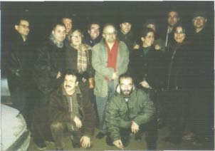

***
Ülkede tekelli düzenin oturtulması için bir savaş olduğunu haber vermeye çalışıyorum. Ne yazık, Türkiye'yi bir "Tekelistan" yapmak isteyenler önemli mevzileri işgal edebildiler: ancak bu haberden sonra açıklığa kavuşturmak istediğim, tekelli düzenin sadece ekonomik ve politik bir sistem olmadığıdır.
127
Tekelli düzen, halksız, değersiz ve dilsiz bir düzendir; şimdi ülkeyi, halkı ezilmiş ve silinmiş, değerleri yıkılmış ve dili bozulmuş bir hale getirmeye çalışıyorlar, asıl haberimiz budur.
***
Çeşitli üniversitelerde hocalık yaptım, ama bir üniversiteye girdiğim zaman evvela kantinlerinin olup olmadığına bakarım. Eğer yoldaş öğrenci, yoldaş öğrencinin hocası, öğretmeni olamıyorsa o üniversite, üniversite değildir. Stefan Zweig'ın hayatına son vermek istediği zaman kadın arkadaşına yazdığı bir mektup var: "Öğrenmek yaşamın sevinciydi, artık öğrenmenin yaşam sevinci olmaktan çıktığı bu dünyadan ben de göçüyorum." diyor. "Öğrenmek" yaşamın en büyük sevinçlerinden bir tanesi.
***
Modern fiziğin insan düşüncesine iki büyük ve genel katkısı var. Birincisi, doğa ve toplum araştırmalarındaki yöntem ayrılığını ortadan kaldırması oluyor. Diğer'i hızın nitelik değiştirici yanını ön plana çıkarmasından kaynaklanıyor.
128
Modern fiziğin bütün yasaları çok yüksek yasalarda geçerlidir; düşük hızlarda Newton fiziği yeniden gerçeklik kazanıyor. En çok tren hızındaki tüm hareketlilikleri çözümleyebilmek için Newton fiziği gerekli ve yeterli olabiliyor. Gök cisimlerinin hızına ve bu arada ışık hızına çıkıldığında yeni bir fizik gerekiyor; modern fizik doğuyor. Işık hızında bütün bulgular düşürülmüş, tren hızına indirilmiş bir hareketlilikte Newton fiziğiyle de açıklanabiliyor. Hız, bir bilimi ortaya çıkarabiliyor ve bir bilimi ortadan kaldırıyor. Eski bir bilimi yeni bir bilim içinde yaşatmak için ise düşük hızlarda düşünsel deneyler zorunlu oluyor.
***
İtiraf, yüksek hızda çözülmedir.
Düşük hızda çözülme her zaman var; buna itiraf denmiyor.
Bir kütlenin hareketinden, her zaman, yavaş yavaş ve fark edilmesi zor kopmalar var: Teatral değil, romanesk değil ve yalnızca sıradan oluyorlar. Tarihleri yazılmıyor. Çok yavaş
ve sürtünmesiz olduğu için kızgınlık bile yaratamıyor.
Çözümlenmiyor; gerek duyulmuyor. Yürüyen'i ve yürüyüş'ü durdurmuyor 129
Bilimadamı sorumsuz değildir. Bilimadamı sorumludur. Toplumuna ve dünyasına sorumludur. Ayrıca bilim adamı politikadan uzak değildir. Kim uzak derse, acı halde, yanılır. En büyük bilim, politikadır. Kişisel sorumluluğu en yüksek bilimsel eylem, politikadır. Sonunda ölmek vardır, İbn Haldun'un Mukaddime'si, Niccolo Machiavelli'nin Prens'i ilk ve hala bilimsel eserlerdir. Büyük politika kitaplarıdır. Okunması ve okutulması gerekmektedir.
***
Bir bilimadamının inandığı ve inanmadığı iki başlangıç ilkesi olmalıdır. Bir bilimadamı, maddenin geliştiğine inanmalıdır. Bir bilimadamı, "gökten gelen şeyler"e inanmamalıdır.
Eğer bir bilimadamı, bugün onların gökten geldiğine inanmazsa ve bunun bir gelişmenin sonucu olduğuna inanırsa, bugüne bakarak dünü daha iyi anlar. Bunlara inanan veya inanmayan, bir de gelişmelerin yasalarla ifade edilebilecek bir düzenliliği olduğunu daha başlangıçta kabul eden kimse, bilimadamı olma yolundadır demektir ve bugünü, dünü dün yaşayandan daha iyi anlar
130
Türkiye'de bugün çok şiddetli bir ideolojik savaş sürmektedir. Bunlara eklenecekler ise Türkiye'nin tümüyle sömürgeleştirilmesi için halkın değersiz-leştirilmesi zorunluluğudur.
Çünkü kendi değerler sistemini yitirmiş bir halk, teslim olmaya her zamandan çok hazırdır.
***
Gecekondu ile asimilatio, kavram, olarak, birbirine çok yakındır. Artık gecekonduların hiçbirisi gece kurulmuyor; gecekondu, yalnızca, sürekli bir kuruluşu anlatıyor. Bir önemli özelliği var: önce yapı yok, önce bölmeler bulunuyor ya da kuruluyor. Kapı, bir enkaz satıcısından, pencere kasaları bir başka enkazcıdan. eşik taşı da bir başka komşunun artığından sağlanıyor. Gecekondu yapımını, pratik, zaman, zamanın içinde sakladığı imkan-irnkansızlıklar ve hepsinden öte fırsatçılık belirliyor. Gecekondu yapımından hiçbir parça ya da bölme özgün değildir; hepsi daha önce var ve kullanılmıştır. Gecekondu yapımı, bilimsel olanın tam tersi bir yere oturuyor. Bir tür emprovizasyon, bir çeşit doğaçlama olarak gelişiyor. Bilimde ise önce yapı ve çok zaman yapıdan da önce çatı kuruluyor: teori, önce çatmak'tır.
131
Taklit etmeyi ve benzetmeyi, assimilatio, önce inanma ve daha sonra da düşünme gereksinim ve sürecinin yerine koyuyorlar. Asimilasyon, yaşamı sürdürmeye yarıyor ve yaratmanın yerini alıyor. Asimilasyon, ilkel'in düşünme yoludur.
***
Bütün doğumlar bir ve aynı kitap mıdır? Bütün doğuşlar bir ve ayrı şiir midir? Bütün çocukların okudukları kitaplar, kendileri midir?
Bütün felsefe, kendini bulamamış şiir midir? Düşünüyorum. Yükleniyorum. Felsefenin, insanı kendisini okumaya başlamasıyla aynı anda başladığını biliyorum.
***
Teori, eninde-sonunda kurgudur.
***
Bilim, basit ipuçlarından büyük sistemlere uzanan bir kurgudur.
***
132
"Yükleme", yoğun düşünme, eyleme ulaşan çözümleme anlamında kullanılıyor. Peki politika, bir çözme sanatı, bir gücü çözme süreci değilse nedir?
Politika, bir gücün negation'u işidir. Bir yüklenmedir.
Çözümleme, negation ve yükleme ile birlikte bir güç biriktirme inadıdır.
Felsefe de bir çözme, bir negationudur. Doğanın negationu Felsefe'nin ön tarihidir.
Felsefe, bu hazırlığın üzerine geliyor ve insanın eylemliğinin zaman içinde derinliği olan tarih ve insanın kendisi olan derinliğini, ruh dünyasını negationu ile başlıyor.
Çözme, negation ve yüklenme, burada, bilgiye dönüştürme işidir.
Kant'ın felsefesinin başlangıç noktasını, varlığın niteliği sorununun bilginin niteliği sorununa dö¬nüşümünde bulmasında büyük gerçeklik görüyorum. Hegel'in de, felsefesinin rüştünü,
"niçin düşünce" düşüncenin nasıl olduğu sorunsalında görmesine katılıyorum. Bilme nedir?
İnsan olmanın serüveni, bu sorulara cevap aramada yatıyor.
***
133
Hegel'de maddenin saflaşması ancak kavrama dönüşmesiyle mümkündür.
İnsan aklının algılama, anlama ve kavramlaştırma süreci, aslında somutun çözümlenmesi demektir. Kavram, bu çözümleme sürecinin en üst aşamasıdır.
Kavram, tutulabilecek mükemmelliktir. Sonsuz, hızlıdır. Kavram, sonsuz bir hızla inebilmektedir.
***
Bilimsel bilginin hareketi, Hegel'de, en az diyalektik olandır.
Marx .düşüncesinin en zayıf yanı, Hegel'in hiç de diyalektik olmayan anlayışına tümüyle bağlı olmasıdır. Marx'ta kütleden ışınlanan kavramların hareketinde ve bunların akıl tarafından bilinmesinde hiçbir engel görünmüyor.
Üstelik bunların uygun kütlesine sonsuz bir hızla inip girebileceği düşünülüyor.
***
Marksizm bu topraklarda biterse dünyada biter.
134
Lenin aşırı bir politisyen, Marks aşırı bilimadamıdır.
***
Bilim, yanlışı görüp mahkum ederek gelişiyor.
Bilim, hiçbir zaman boşluğa doğmuyor, yanlışın üzerine geliyor.
Bilimin, kendisine yer açıp etkinliğini kurabilmesi için, yanlış bilgiyi kovması gerekiyor.
Yanlış bilgi dirençlidir: Bilim kavgadır.
***
Cumhuriyet'in otuzlu yıllarda körüklediği balo merakı, 1940 ve 1950'li yıllarda dans öğrenmeyi üniversite eğitiminin bir parçası haline getirdi. İstanbul'da dans okulları açıldı.
Bir Grek kökenli dans hocası vardı; iki öğrenci gelmiş, ücreti sormuşlar. Birisi az biliyormuş, saatine on lira koymuş; hiç bilmeyene de beş. Şaşırmışlar. Profesör açıklamış, az bilene dans öğretmek için daha çok emek harcaması gerektiğini anlatmış. Önce bildiği yanlışları unutturması gerekiyormuş. Yanlışları unutturmak, yanlışları silmek de emek işidir.
135
Yeni bilgi üretebilmek için neyin bilindiğinin bilinmesi ilk şarttır, gerekli koşuldur. Üniversite, bilgi üretilen yerdir. Bu, normatif olarak doğrudur. Pratik olarak son derece yanlış.
Üniversitede, yeni bilgi üretmenin gerekli koşullarından biri olan mevcut bilgi envanteri yapılır ve verilir. Bu, bilgi üretmek için gerekli ama kesinlikle yeterli değildir.
Neyin bilindiğini bilmek, mevcut bilginin sınırlarını tanımak demektir. Yeni bilgi üretmek ise bu sınırları kırıp aşmaktır. Tanımak, statik; kırıp aşmak dinamiktir. Yeni bilgi eski bilgiyi demode edecektir. Üstelik unutmamak gerekir, hiçbir kurum Meserret Oteli olmak istemez, karşı koyar.
***
Yeni bilgi ya hiç dokunulmamış bir alana düşer veya kendine yeni bir alan arar. Hiç dokunulmamış alan pek az olmalı. Bu yüzden, yeni bilginin tek yolu, mevcut bilgi envanterindeki yanlışlıkları ortadan kaldırmaktır. Bu ise ancak tartışarak ve eleştirerek olur.
Yine bu yüzden tartışmadan veya eleştirmeden hiçbir zaman bilgi üretilemez. Bilimadamı için özgürlük, tartışmak ve eleştirmek için gereklidir. Süs değildir.
136
Her yazıldığında mevcut bilgiyi ve mevcut bilenleri eleştirmeyen bir düşünce, basılmaya layık değildir; çünkü yeni bilgi değildir, israftır.
***
Her romanda bir gerçeklik vardır; en azından gerçeğin bir bölümünü yansıtır. Zaman zaman nesnelerin retina üzerine hep ters yansıması gibi, gerçek, romanda terstir.
Bilimadamı, roman karşısında, işlenmiş ve birikimi olan bir beynin işlevini üstleniyor; ters yansımayı düz algılıyor. Gerçekten de, bilim pozitivistlerin sandığı gibi, görüntüler arasına dikiş atmak değil, çok zaman görüntüleri tersine çevirmektir.
***
Ben, Birinci inönü Zaferi'nin olmadığı sonucunu veren araştırmalarıma, herkesin demir kadar güçlü bir biçimde varlığına inandığı bu zaferden kuşkulanmamı gerektiren bazı verilere rastlayarak başlamadım; başlangıcım kesinlikle ampirik değil, tümüyle teoriktir.
137
Halkı bir mücadeleye katabilmek için güven kaynağı sayılan Sovyet bağlantısını temsil eden Mustafa Suphi ve arkadaşlarıyla güçlü bir gerilla pratiği sergilemiş olan Çerkez Ethem ve arkadaşlarını tasfiye eden bir önderliğin, mutlaka güçlülük imajına ve bu nedenle bir zafere ihtiyacı olduğunu varsayarak harekete geçtim; bundan sonrada bütün bilimsel yürüyüşlerde olduğu üzere determinizmi, temel felsefe saydım. Önderliğin tam ihtiyaç saydığı sırada Yunanilerin boyunlarını uzatarak Mustafa Kemal ve arkadaşlarına bir zafer hediye etmelerini çok "ilahi" görüyordum; bu nedenle reddederek işe başladım.
Çok güçlü bir reddiye kurdum, ve bundan sonra kanıt ve veri toplamaya başladım.
138
Bende böyle bir güçlü ön-teori oluşunca, daha önce okuduğum pek çok kaynakta, zamanın tanıklarının, İnönü Zaferi'yle alay ettiklerini ya da bunu uydurduklarını açıkça söylediklerini hayretlerle gördüm; daha önce gözlerim bağlı olduğu için göremiyor dum. Yunanilerin bir tür keşif ya da manevra sayılacak yürüyüşlerinde Türk tarafının bir-iki sokak çatışmasından sonra çekilmeye başlaması ve bunlardan habersiz Yunan kuvvetlerinin dönüşe geçtikleri bir zamanda küçük bir çobanın getirdiği haber üzerine Türk kuvvetlerinin birkaç takip hareketi yapmaları, bir zafer olarak ilan edilebiliyordu. Çünkü Mustafa Kemal önderliğinin, bu sırada bir zafere ihtiyacı bulunuyordu.
139 -140
-------------------------
Sistem, Tekelci Düzen
-------------------------
141-142
Bir: Neden tekstil işçileri kadındır?
İki: Neden bütün banka çalışanları kadındır?
Üç: Neden bütün telefon operatörleri kadındır?
Çünkü; bu işler, ingilizce sözlükçe pek "tedious" sıkıcı ve boğucu işlerdir; yaratıcılık ve itiraz istemiyor ve kadın geliştiğini iddia ederek boş bir kuruntuyla avunurken, kütlesel olarak tabi yaratık haline düşüyor.
Dört: işte bu yüzden, televizyonlar, bir kadın mesleği haline gelmiştir. Aydın Doğan'm
"benim kanalım" diye övündüğü kanallar, teenager ve itaatkar kızlarla doludur.
Beş: İşte bu nedenle Mütareke Matbuatı'nda köşeleri genç hanımlar tutuyor; kadının yükselişini değil, düzenin en uyumlu vidalarını oynuyorlar. Çevremize bilimsel bakabiliyor muyuz?
***
4 Nisan 1997 tarihli Hürriyet; "En Büyük ödül Ağaoğlu'nun" başlığını uygun görüyor. Ben ise bunu, Adalet'in, Ölmeye Yatmak'm yazarının, başına gelebilecek ikinci talihsiz kaza olarak görüyorum; birincisi kör bir şoförün ve ikincisi Aydın Doğan'ın çarpmasıdır.
143
Nasıl Adalet Ağaoğlu bir "Aydın Doğan" ödülü kabul edebilir, nasıl altı milyarı fırlatmaz; bunları düşündükçe yanlışlıkla bir poza iki kez basılmış gibi, Kenan Evren ve Aydın Doğan imajları, birbirine bulaşmış bir biçimde, gözlerimin önüne geliyor(...) ilk paramız olduğunda bu altı milyarı devlet hazinesine iade etmeliyiz. Aydın Doğan'ın Aydınları...
***
Tümüyle sanat ve bütünüyle genellikle edebiyat, artık sadece ideolojik silahtır; her türlü estetik özüne yabancılaşmıştır. Artık ülkemizde edebiyat, insanımızı geliştirmek için değil, sakatlama amacıyla kullanılan, yüceltmeye değil alçaltmaya ve tüm estetik kabiliyetlerini ortadan kaldırmaya yönelik bir acımasız silah olmuştur, insafsız bir ideolojik aygıttır.
***
Türkiye'de televizyon artık tümüyle varoşlarla özdeşleşmiştir. Varoş kültürünü tümüyle bozmaya, gecekondu insanını tümüyle baskı altında tutmaya yönelmiş durumdadır.
Mikroskop'un mikroptan etkilenmesi türünden, artık televizyon da gecekondulaşmaktadır.
144
Sürecin başlayışında, özel televizyonların ekonomi kaygıları önemli bir rol oynuyordu; fakat düzen, buradaki siyasal avantajları görmekte gecikmemiştir.
Şimdi düzen de televizyonun, varoşlara karşı sin-dirici bir silah olarak kullanılmasını özendirmektedir; yalnız bu, televizyon ve reklam sektörünü büyük bir krizin eşiğine sürüklüyor, görüyoruz.Yakında, hem televizyonda, hem de reklam şirketlerinde ayrı ayrı iflaslara tanık olacağız; büyük holdingler, televizyonlarını genel muhasebelerinin içinde eriterek, bunun dışında kalma imkanına sahiptirler. Bunlar için televizyon, bir politik egemenlik mekanizması olmasının yanında başlı başına bir şantaj aletidir; vazgeçmeleri sistem dışıdır.
***
Aydın, halkını değiştirmek ve geliştirmek için var, Türkiye'de aydın ile halkın birbirinden uzak olduğu zamanlarda, Hürriyet ile Cumhuriyet arasında bir rekabet oluyordu. Aydın kırıldı, aydın düzeni yok edildi ve bunu, halkın aydınlaşması yerine tam karşısı aydının halklaşması olarak niteleyebiliyoruz, bu zamanda, Hürriyet ile Cumhuriyet'in de birbirine benzediğini tespit ediyoruz.
145
Bu edebiyat dışı nesirleri, edebiyat olarak zorlamakta Hürriyet ile Cumhuriyet'in yarış
halinde olması ve Cumhuriyet'in O. Pamuk reklamlarından ayrı olarak A.Altan'a bir de Yunus Nadı ödülü vermesi, bu analizlerle tutarlıdır. Hürriyet, bu ödülden en çok hoşnut olandı ve bunu "Birinci Cumhuri-yet'ten ikinci Cumhuriyetçiye Ödül" olarak se¬lamlıyordu; görülüyor, bu ödülü bile bir edebiyat olayı olarak almıyorlar ve sadece politik değerlendiriyorlar.
***
Türkiye'de bağımsız basın kalmadığını söylemekle yetiniyorum. Ekonomide tekelleşmenin en yüksek düzeye ulaştığı ve ülkemiz için, büyük üzüntülerle geliştirdiğim "tekelistan"
kategorisinin neredeyse tartışmasızca kabul edildiği bir zaman kesitinde, bağımsız basından, artizanal düzeyde direnenlerin dışında söz etmek bilim dışıdır. Nitekim, burjuva iktisat düşüncesinin artık okutulmayan, yalnız en gerçekçi ve belki de yirminci yüzyıldaki tek katkı olan, oligopol kuramı da, bağımsız basını düşünmenin imkansızlığına tanıklık etmektedir; eğer monopolist veya oligopolist sektörler varsa, basın ve medya en fazla oligopolisttir, bu sektörde ancak bağımlılık ilişkisi var demektir, bu nedenle, en çok bağımsızlık iddiasında olanları, en çok birer vasal sayıyoruz.
146
Şu anda Türkiye'de, artizanal ölçekte ve gerilla ruhuyla, kuşkusuz legal düzlemde, kendini sürdürmeye çalışan dergileri ve yeni başlayan internet yayıncılığını bir kenara koyacak olursak, bağımsız basının bittiğini kabul etmek durumundayız.
Kuşkusuz hala, şurada veya burada tekel sermayesiyle organik olarak bütünleşmemiş
basın var; yalnız bunlar da, eğer vasalite kavramı fazla teknik geliyorsa yerine önerebiliyorum, bir lambanın etrafında uçuşan ya da çırpınan pervaneler kadar bağımsız olabiliyorlar; elemek ki basın oligarşisinin kelebekleri olarak görünüyorlar. Yönetenleri, ideolojik hegemonyanın medyakrat-ları olmaya mahkumdurlar ve hükümlü hareket ediyorlar, pratikleri, teorik modelimizi doğrulamaktadır.
147
Dil ve bilim, insanlığın en büyük ve en yaratıcı iki basitlemesidir.
Burada basitleme, aynı zamanda, yoğunlaştırma anlamına geliyor.
"Portakal, elma, armut" sepeti yerine "meyve" sepeti diyebilmek büyük bir sıçramadır.
Hepsini elma, portakal ve armutu, bir başka düzlemde aynı sayabilmek büyük bir soyutlama düzeyini gösteriyor.
Felsefe ve bilim de bir tür en basiti bulma yolunda bir serüvendir. Tüm Antik Elen felsefesi şeylerin ortak yönünü bir basitlikte, suda, ateşte ve bir benzerinde bulma çabası olarak gelişiyor. Newton, kozmos'taki bütün ağırlıkların neden hareket ettiklerini ve neden asılı kaldıkları yerlerde asılı kaldıklarını "çekim" adı verilen son derece basit bir niteliğe bağlıyor.
Newton mekaniğinin yerini alan Kuantum fiziği de aynı ölçüde bir basitliği bir başlangıç sayıyor.
Marx'ın yaptığı da son derecede cüretli bir basitlemedir; tarihteki bütün hareket ve oluşumları, sınıf çelişkisi denilen son derece basit bir niteliğe dayandırıyor. Bütünü, kendisinin etkilemeyeceği bir basitliğe bağlamak ve bağladığını sonsuz ölçüde yaymak, insan aklının iki vazgeçilmez niteliğidir.
148
Kontrol edilemezi bulmak için kontrol edilemez bir dürtü ve sonsuza yönelik engel tanımaz bir arayış insanı tanımlıyor, insanı mahvetmek, bu dürtü ve arayışı bitirmektir, insanın sonsuzluk eylemi engellendiği andan itibaren insanın sona ereceğini düşünüyorum. Bana göre tekelli düzende insan canlı bir organizma olarak kalsa bile, insan olmaktan çıkacaktır, çıkıyor. Çünkü tekelli düzenin en belirgin ve ilk sonucu, insan aklını giderek daralan mekanlara hapsetmesidir. Bu, insan aklını akıl olmaktan çıkarmak anlamına geliyor.
insanın sonu demektir.
***
Savaş bitti mi? Hangi savaş'bitti ki; savaşın, bir tarafın diğerinin iradesini esir alıncaya kadar sürdüğünü kabul ediyorsak, bitmemiştir. Uzun tarihte bu kesit sanıldığından kısadır; bununla birlikte birikirnsizler ve yeteneksizler cephesinin daha çok mevziyi elinde tuttuğunun kabul edilmesi gerekmektedir. Ancak ellerindeki mevzide yalnızca korkuyorlar; davranışları, kendilerine, ihanet halindedir. Sığınak aradıklarını görüyoruz, Avrupa'da buluyorlar; bütün yetenekleri öldürdüler, bütün birikimleri yok ettiler, Üçüncü Selim'den bu yana her türlü kazanımı kazıdılar ve karşılığında servet biriktirdiler ve "şecaat arz ederken merd-i kipti sirkatin söyler", sirkatten başka türküleri kalmadı, cehalete methiye düzmeye başladılar, artık haklı ve sığınağa muhtaçtırlar, öyleyse, Avrupa artık, korsan limanlarını hatırlatmaktadır.
149
Fakat, "hem giderim hem ağlarım" havasındalar; Avrupa'nın kağıt üzerinde kabul ettiği özgürlükleri kullanılmaz yapan mekanizmaları olduğunu görüyorlar ve bu mekanizmaları tümüyle yerleştirmeden veya yerleştirdiklerinden kesinlikle emin olmadan, Avrupa limanına girmekten korkuyorlar, Avrupa'ya mehter adımlarıyla yürüdüklerini tespit edebiliyoruz.
Demek, özgürlükler söz konusu olduğunda, Sultan Hamit'ten çok daha vesveseli bir nizam ile karşı karşıyayız. Bu nizamda, Sultan Hamit'e en çok karşı görünenler en yakın duruyorlar; Türkiye'de bilim kapısı, görünürdeki paradoksların arkasında yatarı tutarlılıklardadır. Her yetenek ve her birikim, embriyonik halde, güç beslemektedir; bu da bağımsızlığa bir kapı demektir. Eylülizmin kendisini sürdürebilmesi ise, bir yandan Avrupa ve Amerika Birleşik Devletleri'ne bağlanmak, Yahudilik burada katalizör misyona sahiptir, ve diğer yandan ve daha önemli olarak, yeteneksizliğe tapınmakla mümkündür.
Sessizlerden erkek şarkıcı, mafya babalarının met¬reslerinden kadın şarkıcı, kekemelerden konuşmacı, dişleklerden film yıldızı, banker faciası yöneticilerinden bestekar yapılması işte budur; yetenek ve birikime karşı bir intikam savaşı görüyoruz. Her iktidar, içinde bir intikam hevesini, saklı tutmaktadır. Yalnızca servet biriktirenlerin iktidarı, vahşi bir savaşla oturmaktadır.
150
Fıkra yazarı olabilmenin gerektirdiği her türlü birikim ihtiyacı, tarih, politika, edebiyat, mizah bilgileri bir tarafa atılabiliyor; sadece bir ekranda imaj sahibi olmak yetebiiiyor. Sanki insanlığımız, insan imajını çizmeyi yasaklayan Muhammet Peygamber'den intikam alıyor; tek birikim, hiçbir derinliği olmayan bir imaj'dır.
***
Eğer bir insan manken olabiliyorsa, ülkemizde derhal bir büyük televizyon kanalında sunucu ya da spiker olabiliyor; buna, spikerlik için belli bir kültür, diksiyon becerisi, yurt ve dünya olaylarına yakınlık ve dolayısıyla belli bir yetişme süresi gerektiğini düşünenler itiraz ediyorlar, ancak itirazların herhangi bir etkilerinin olduğunu sanmıyorum. Çünkü artık
"birikim" kavramını ve gereğini, Türkiye toplumunda anlatmak çok zordur. Çünkü ülkemizde birikimin yerini, yüzeysellik almış bulunuyor. Toplumumuz, üst-üste konmuş
paranın-ki dışında bütün derinliklerden korkuyor.
***
151
Felsefi anlamda "arabesque" olan da budur; felsefede, derinliği limitle sıfır olan kavramların, kendisi tekrarlayan imajlara dönüştürülmesine "ara-besque" diyoruz.
İki eğilim yan yana gidiyor. Bir: Toplumumuz, Canneti'nin önemli romanının başlığıyla, güçlü bir "körleşme"nin etkisindedir. Görme, fizikte olduğu gibi, bir derinlik işidir; derinliğin ortadan kaldırılmasıyla körleşme, aynı fiziksel sürecin iki ayrı kutuptan görülmesidir. Bir yandan körleşmeyi yaşıyoruz, İki: Görsel olanı tek gösterge yapıyoruz. Bu halimizle, körler dünyasında resim'i tek sanat ve bilim yapan bir toplum düzenine yol alıyoruz.
***
Eylülizmi, büyük sermaye ile bütünleşmiş kemalistlerin kemalizmin son kalıntılarını da kazıma dönemi olarak düşünebiliriz; eylülist darbeden hemen önce, gelmekte olan askeri darbenin çok koyu bir islamcı politika izleyeceği kestirimim de bunu haber veriyordu, artık gerçekleşmiş olduğunu hep biliyoruz, islamcılar, kemalizmi reddediyor ve sollaşmak istiyordu; eylülist yılları, islamın altın dönemi ve solun ise aşılması saymak yerindedir.
152
Yalnız, reddin kazanması ve solun kaybetmesi, kemalizm sorununu çözse de, Mustafa Kemal Paşa ve çokça söylediğimiz sözcükle, "Atatürk" ortada duruyordu; bu bir yeniden tanımı davet etmektedir. Amerika Birleşik Devletleri, bu tanımı üzerine almış
görünmektedir; en yüksek düzeyde hem Mustafa Kemal'i ve hem de Osmanlı Imparatorluğu'nu yeniden tarif etmeye çalıştıklarını görüyoruz.
***
İçsavaş, bir yanıyla tekelli bürokratik devleti yerleştirmek ve diğer yanıyla insanımızı, insanlığından çıkarmak içindir; bu ikisi, bir madalyonun iki yüzü durumundadır.
***
Gerçekten eylülizm, bir intikam operasyonudur. Bu toplumu bütün değerlerinden yırtıp koparmak için sürdürülüyor ve güvensizliği ve inanamamayı, insanımızın temel hali yapmayı amaçlıyor.
153
Bazı önermelere ihtiyacımız var, bunlardan birincisi, televizyonun gecekondulaşmasıdır.
Bu, televizyonun tümüyle gecekondulara karşı bir silah haline gelmesinin sonucudur; amaç gecekonduda yaşayan insanın ahlakını bozmak, değerler sistemini yıkmak ve böylece kontrol altında tutabilmektir.
***
Büyük sermayenin çıplak ve hoyrat iktidarından söz etmek için çok haklı nedenler var: a) bu dönemde işçi sendikaları tümüyle yok edilmemekle birlikte çok büyük ölçüde etkisizleştirilmiş bulunmaktadır. b) Aydın düzeni, çökertilmiş ve aydınlar eskitilmiş ve eski aydınlar, büyük bir ihanete itilerek, oligarşiye ve büyük devletlere bağlanmıştır. c) Üniversite, hiçliğe zorlanmış ve en önemlisi hiçlik üniversitenin kendisine kabul ettirilmiştir.
d) Matbuat; banka ve inşaat oligarşisi tarafından kapatılmış, kanallar gerçek anlamda kirli para kanalizasyonu haline gelmiş ve "büyük" gazeteciler, sadece ve sadece büyük devletlerin düdüğü olmuştur. Matbuat ve kanalların birinci vazifesi, her şerait altında, halkımızın bilincini dağıtmak, aklını bozmak ve oligarşinin en hasis ve en aç gözlü çıkarlarını müdafaa etmektir, burada ölçü tanımadıklarını görüyoruz.
154
Özetle ve eski sözle, ülkemiz, iktidar için, bir dikensiz gül bahçesidir; ve yine de yönetememektedir. Çünkü diken kesmek, aklı yitirmektir.
***
Şöyle bir yasayı yazabiliyorum: tekel düzeninin kurulduğu her coğrafyada, iktisatta yıllar önce İngiliz iktisatçı Gresham'ın formüle ettiği "kötü para iyi parayı kovar" yasasına benzer bir biçimde, "birikimsizler birikimlileri kovar" yasası geçerlidir. Çünkü, tekelistan'da en büyük düşman birikimdir ve çünkü, birikim bağımsızlığa kapı açarken, birikimsizlik, oligarklara bağımlılığa yatkın formasyonları hazırlamaktadır. Feodal düzende lordlar, tekelistan'da tekel-efendileri, en çok bağımsızlıktan korkuyorlar; korktuklarını yok ediyorlar.Öyleyse, tekelistan'da birikime ve bağımsızlığa bir haçlı seferinden söz ediyoruz ve basın hem ön cephede ve hem de pek göz önünde olduğu için de ilk çarpıcı gözlemleri burada yapıyoruz, ayrıca şaşırmıyoruz.
155
Her teori tutkunu, Prusyalı General Von Clausewitz'e hayrandır, pek çok örneğini biliyoruz.Savaş, içinde birçok rastlantı, şans ve cesaret türünden analizi, çok zor olan yetiyi içeriyor ve bu nedenle teorik bir çözümlemesi imkansız görünüyordu. Clausewitz, bize imkansız bir savaş teorisi vermiştir; artık savaşın temel hedefinin karşı tarafın iradesini teslim almak olduğunu öğrenmiş durumdayız, irade zaptını kalıcı kılmak için de ilk iş
silahsızlanmaktır. Mondoros Mütarekesi'ne ülkeyi silahsızlaştırılmasının temel koşul olarak konulması ve Afganistan'da savaşın ancak bir silahsızlandırma ile biteceğinin açıklanması Clausewitz teorisine uygundur.Ancak Clausewitz, emperyalizm öncesi bir teoriysen idi; şimdi temel amaç beyinleri zaptetmek ve değerler sistemini tahrip emektir. Bunu kalıcı yapmanın yolu ise insanı yozlaştırmaktan geçiyor; yoz alçaklıktan haz alan bir yaratıktır. Bu nedenle yozun bir daha herhangi bir değer sistemi kazanması imkansız görünüyor; şimdilerde edebiyatta yükselen en önemli misyon buradadır.
156
Halkımızın estetik düzenini bozmak için yola çıkanlar, önce kendi estetik dünyalarını kirletmek zorundalar. Dolayısıyla belce, en geri ideolojik kalıp ile hareket etmek durumundadır.
***
Matbuat; banka ve inşaat oligarşisi tarafından kapatılmış, gerçek anlamda kirli para kanalizasyonu haline gelmiş "büyük" gazeteciler, sadece ve sadece büyük devletlerin düdüğü olmuştur. Matbuat ve kanalların birinci vazifesi, her şerait altında, halkımızın bilincini dağıtmak, aklını bozmak ve oligarşinin en hasis ve en açgözlü çıkarlarını müdafaa etmektir, burada ölçü tanımadıklarını görüyoruz. Sanayileşmenin ve kalkınmanın tarihe gömüldüğü bir toplumda akıl bir lükstür; kapitalizm öncesinde ve tekelli düzende, bir rehber olarak, akıl'a gerek olmadığını biliyoruz. Öyleyse akılsızın akıllıyı kovma süreci normal olmaktadır. Tefeciyi siyasetçinin esir aldığı bir toplumda da, en akılsızın en yüksek tepeye çıkması ve kütlesel olarak akıldan kaçış, yasadır ve bizde şimdi bu yasalar yürürlüktedir. Kamu gelirlerinin, fiilen tamamının faiz ödemelerine ayrıldığı bir ülkede tefeciler egemen demektir; insanı, tefeci ahlakının yönettiğini anlıyoruz.
157
Bir: "Eylülist Rejim, en büyük ve en kolay başarısını sanat ve edebiyat alanında kazandı.
Çok kısa bir zamanda ve gerekli fiyatın binde birini bile ödemeden, Türk sanatının sorunsalını, biçemini, biçimini, içeriğini, baş aktör ile aktristierini değiştirmede çok büyük bir başarı elde etti." İki: "Eylülist Rejim, 12 Eylül öncesinin tüm değerlerini yasaklamayı temel ilke saydı. Bunların bir bölümünü, yasalarla, bir bölümünü baskılarla, bir bölümünü tekelci ekonomik zorlamalarla gerçekleştirmeye çalıştı. Edebiyat ve sanatta ise, 12 Eylül öncesi yaratıları tümden unutturan ve redde¬den bir eğilim ortaya çıktı." Öyleyse, ve bu saptamalar gerçeğe yakın ise, iki tarafta da bir devamlılık var demektir.
***
Son zamanlarda tekelci dünya görüşü, bürokratik yalnızlığı, dünyanın başka yörelerini de etkisi altına almaya başlıyor. Ancak tekelcilik kapitalizm ölçüsünde bile bir bağ sağlamıyor; yalnızlık ve güvensizliği bir karabasan halinde insanların içine yerleştiriyor. Kapitalizmin çürüdüğü Avrupa'da ilk çıktığı zamanki tarihine yazılı bütün olumlulukları artık kaybettiği bir zamanda, Sovyet sosyalizminin çözülmesinin verdiği karamsarlık içinde sosyalizmin kurtarıcı imajına gölge düştüğü bir zamanda, din ve ulus, insanın yalnızlığına ve korkularına çare sayılıyor.
158
Devlet, hükmetme durumudur. Hükmetmenin iki önemli amacı bulunuyor; zor ve ideoloji hükmü sağlıyor, ideoloji, az veya çok ölçüde, ancak mutlaka birikmiş zor içeriyor.
Siyaset ise kütleyi bir yere götürmektir. Atları bir yerden bir yere götüren seyisten geliyor.
Götürmek için güç gerekir; siyaset güç toplamaya ve kullanmaya dayanan bir dinamik ve sanat oluyor.
İdeoloji'de, içerilmiş zor gizlidir. Kendisini hükümlerle gerçekleştiren hukukun zoru ise dışa taşıyor. Hukuku kütle, içindeki bireyleri dolayısıyla kütleyi yerinde tutmayı amaçlıyor.
Siyasetin dinamizmine karşılık, hukuku, doğası gereği, statik bir niteliğe bürünüyor. Bu nedenle hukuk, siyasetle birleştiği zaman varlığını ve tanımını kaybediyor.
159
Devlet hükmetme kapasitesini, kendi hukukunda, hissedilmesi zor ancak sürekli değişiklerle sağlıyor. Bu da iki hukuk alanı demek oluyor. Daraltılmış bir alanda, burjuva hukukunun temelindeki eşitlik ilkesinden güçlülük ilkesine kaymış bir hukuk mantığı ile bir diğer alanda hukuksuzluğun ilke olması, eylülizmin, yani tekelci devletin, hukuk mantığını çiziyor.
***
Tekelci devletin hukuk yapısı, "suç oluşmadan önlemeliyiz" paranoyasıyla şekillendiriliyor.
Bu yüzden Türkiye'de en kolay iş tutuklamadır. Tutuklayanın hiçbir sorumluluğu olmaz, yoktur. Suçsuz olduğunuzu sorgu yargıçlığında anlatmanız bile mümkün olmaz; tutuklama
"suçla" değil "emare" ile ilgilidir. Tutuklayan suçun kanıtlarına değil işaretine bakar; tutuklamanın bir önlem olduğunu, itirazın mümkün bulunduğunu, suçsuz olduğunuzu mahkemede anlatabileceğinizi söyler ve tutuklar. Bir de sağcı bir hukuk öğretim üyesi pek yakında bir istatistik açıkladı: Türkiye'de tutuklamaların yüzde doksan beşinden fazlası bera-atle sonuçlanıyor.
160
-------------------------
Ulus
-------------------------
161-162
Türkiye'deki emperyal yönelişlerin, analizinde büyük bir kavramsal öneme sahip olduğunu söyleyebiliriz. Çünkü büyük devletlerin, stratejik önem iddiaları hiç yoktur ve olmasını da düşünemeyiz. Emperyal güçler, stratejik önemli yerleri bağımlı hale getiren devletlerdir; bunun karşısında, yaranmacı küçük devletleri, stratejik önem yarışında görüyoruz. Demek, emperyal dinamikler henüz kodifiye edilmekten çok uzak kalıyorlar; şimdilik heves sayabiliyoruz.
***
Müslümanlığa gelince, bilimin kurutulduğu bir zaman kesitinde, modern Türkiye'de,"müslüman devlet" veya "müslüman Türkiye" sözünün çok yeni olduğunu unutuyoruz. Bu söz de, Türkiye için, bir eylülist icattır; öncesinde böyle bir discours'un olmaması bir yana, telaffuz edilmesi bile cumhuriyet ilkelerine aykırı sayılıyordu. Türkiye, bazı müslüman devletlerle siyasi ittifaklar kurabiliyor, ancak, yetmişli yıllarda, Necmettin Erbakan'ın da parçası olduğu, S. Demirel Başkanlığı'ndaki Milliyetçi Cephe Hükümetleri dahi, islam Konferansı Örgütü'ne girmeye cesaret edemiyordu; hem cumhuriyet ve hem de anayasa ilkelerine aykırı sayılmaktadır.
163
Kısmi giriş, Genelkurmay Başkanı Orgeneral Kenan Evren'in idareye el koymasından sonradır; Eylülizmin, Türkiye'de İslamın altın çağı olduğunu ileri sürerken bunu da hesaba katıyordum. Eklenecekler var, bir; Türkiye, İsrail'in kuruluşunu ilk önce tanımış ve şu anda da, İsrail ile ittifak anlaşmaları imzalamış tek bölge devletidir. Yönetimin kritik noktaları Yahudi kavminden sabetayistlerin elindedir; bir bölüğü açıklanmış durumdadır, ikincisi, Adana yakınındaki İncirlik Üssü, Irak'ı bombalayan uçaklar için vazgeçilmez topraklardır.
Üçüncüsü, Bin Ladin'in New York saldırısını düzenlediğiyle ilgili tek kanıt, bu savaştan çok sonra ve savaş içinde elde edildiği ileri sürülen bir kaset olmuştur; kasetin tahrif edildiği ve herhangi bir kanıt değeri olmadığı hep söylenmektedir. Ancak kanıt olsa bile bu, savaşın, herhangi bir suçlayıcı delil olmadan başlatıldığını göstermektedir ve daha da önemlisi, böyle bir gerekçe ile bir ülkeye savaş açmanın devletler hukukunda yeri olmaması gereklidir. Buna karşın Türkiye, bu savaşta, Amerika'nın yanında yer almak üzere silahlı kuvvetler gönderme kararını alan ilk ve tek "müslüman" devlet idi; demek, bu "müslüman devlet" savını sadece iç tüketim değeri olan bir propaganda sayabiliyoruz.
164
Putin için Atatürk analiz eden Profesör Brzezinski, Mustafa Kemal ile ilgili olarak, şimdiye kadar Batı'da yazılmış en abartılı portrenin sahibidir; "abartılı" sözcüğü, burada, bakışı çok sınırlı ve çok uysal bir dünyası olan anlamındadır. Bu portrenin, başlığı Rusya ile Yaşamak olan bir strateji incelemesinde çizilmesi amacının Türkiye'den çok Rusya'ya ve yeni Başkan Putin'e ders vermek olduğunu göstermektedir. Bu incelemede Profesör Brzezinski, yıkılan Osmanlı ve Sovyet imparatorlukları arsında bir çok paralellikler kurarken, bazı ayrılıklara ise daha çok önem vermektedir. Bir kez net olarak, Putin'e ikinci Dünya Savaşı'nda yıkılan Japonya ve Almanya'yı örnek almasını tavsiye etmiyor; bunu yıkım yolu olarak göstermektedir. Çünkü gerek Japonya ve gerek Almanya, bir savaşta yıkıldılar; ancak sonunda eski güçlerine ulaşıp aştılar, emperyal devlet oldular. Brzezinski, bu yolu yol saymıyor. Buna karşın, Birinci Dünya Savaşı sonunda, Osmanlı imparatorluğu yıkıldı, ancak Atatürk bu imparatorluğu yeniden kurma yolunu reddetti, bunun yerine, bir nationstate, bir ulus-devlet, kurma yolundan gitti; işte Washing-ton'un Rusya'ya önerdiği Atatürk budur. Gördükleri şudur: Osmanlı Imparatorluğu'nun sonlarına doğru güçlü bir sivil-asker muhalefeti ortaya çıktı ve devleti modernize etmek istiyorlardı, bunlara Jön Türk, ingilizce Young Turks, denilmektedir.
165
Hareket içinde güçlü bir kanat, eski imparatorluğun modern halini, modernized version of the old empire, yaratmaya çalışıyordu, olmadı, yenilgiler geldi, olmaması iyi oldu, ancak Mustafa Kemal liderliğinde bir kuşak, known as Atatürk, bunun yerine, modern, ancak post-emperyal,İngilizce post-imperial, devlet kurma yolunu seçti, işte model yolu budur.
Amerika'nın Atatürk dersinin can alıcı noktası, emperyal değil, post-emperyal bir vizyonunu kabul etmesidir, bunu netlikle çıkarabiliyoruz. Bundan sonrası ise daha önemlidir; bir, Mustafa Kemal ve arkadaşları, geçmiş ile bir psikolojik kopuş, a psycologik break with the past, gerçekleştirebilmek için büyük bir cüretle hareket ettiler; bu kopuş, emperyal ülkülerden vazgeçmek anlamındadır, ikincisi, Batı, Türkiye'yi itmedi, sürekli tekme tokat kovsaydı, to spurn, bu kararlı kopuş işe yaramazdı. Üç, yine de terslikler oluyordu ve bunları telafi etmek on yılları alıyordu; her iki tarafta sabırlı oldular, anlamındadır.
Görülüyor, artık burjuvazinin gözü açılmıştır; yalnızca tekellerin bakışı var. Çünkü tekeller düzeni ile emperyalizm, bir kağıdın iki yüzüdür.
166
Anti-semitizm kötüdür. Ancak semitizm daha kötüdür. Türkiye'de anti-semitizm yoktur ve semitizm var.
Bir ülkede bir Genelkurmay ikinci Başkanı, hangi din veya mezhepten olursa olsun, en büyük yahudi madalyası alabiliyorsa ve Türkiye'de görevde başbakan, hiç sakınca görmeden yahudi madalyası alıyorsa, Türkiye'de anti-semitizmden söz etmek, akılla alay etmektir. Anti-semitizmin kırıntısı olsa, Bir'in ve Ecevit'in bu madalyaları kabul etmemesi gerekirdi. Yoktur. Fakat semitizm var ve yaygındır. Başka örneklere gitmeye gerek yoktur;
"sözde" kemalist Cumhuriyet Gazetesi hep semitizmden yana bir yayın politikası izlemiştir.
Semitizm yanlısı politikanın vazgeçilmez iki işaretini saptayabiliyoruz, a) Türk-Arap Dostluğu'na cephe almak ve b) sağlıklı ve yaşayabilir sola düşman olmak.
167
Putin iktidara gelir gelmez, Berezovsky ve Gusiniky adlı iki banka-medya oligarkını devirmiş ve saf dışı etmeyi başarmıştır; bunların ikisi de yahudidir ve ikincisi, israil'de de gazete sahipliği yapıyordu, şimdi ispanya'da tutukludur. Putin'in Amerikan elitinin nefretini kazanmasında Rusya'yı bu ahtapotlardan temizlemesinin rolü büyük görünüyor; şimdi Gusinsky'yi kurtarmak için Washington ve Washington'dan aldığı ilham ile Türk medyası ter döküyorlar, ibret vericidir. Yalnız Amerikan elitinin Mustafa Kemal Paşa'yı Batıuysalı ve Batıdüşkünü bir lider olarak resmedip Putin'in karşısına çıkarmasının asıl nedeni,
"konseptiya natsional'noy bezopasti" denilen, yeni ulusal güvenlik konsepti'dir; önce Silahlı Kuvvetler içinde hazırlanıp tartışıldıktan sonra, 10 Ocak 2000 tarihinde Putin tarafından bir
"uka'z" olarak yayınlandığını biliyoruz. Bilemediğimiz, Putin'in mi bu yeni konsepti, yoksa bu yeni konseptin mi Putin'i çıkardığıdır; tartışmaya açık tutuyorum(...) Rusya, burada,
"Velikaja Derjeva" olarak tanımlanıyordu ki, Amerikan eliti bunu Putin'den beklemiyordu, çünkü Rusya'nın "Büyük Güç" olma iddiasını hem kabul etmiyorlar ve hem de istemiyorlar.
Itikatlarınca M.Kemal'i model yapan husus, büyük güç olma iddiasını reddetmesidir(...) 168
Amerikan elitine göre Kemal Paşa ise "geçmiş ile bir psikolojik kopuş" ile, Avrupa'ya yönelen bir ulus-devlet olmayı kabul etmiştir; demek, yenilgiyi ve küçülmeyi kabul etmiş
olmaktadır. Bu nedenle yeni Amerikanca derste, Atatürk uysal ve Putin dikbaşlıdır. Putin,
"Avrupalı-Post-Emperyal-Ulus-Devlet" olmayı reddederek dik başlılık yapmaktadır, bu nedenle Amerikan eliti Atatürk'ü benimsemekte ve Putin'i takbih etmektedir. Ayrıca, Brzezinski'ye göre, Türkiye veya Rusya'nın Avrupa'ya yönelmesi, büyük devlet olmaktan vazgeçmeleri demektir, bu yüzden her ikisinin de Avrupa'ya çağrılması gereklidir.
***
Büyük devletlerin, stratejik önem iddiaları hiç yoktur ve olmasını da düşünemeyiz.
Emperyal güçler, stratejik önemli yerleri bağımlı hale getiren devletlerdir; bunun karşısında, yaranmacı küçük devletleri, stratejik önem yarışında görüyoruz.
169
Savaşta yenilmiş bir ülke için, yenenlerin tek düşüncesi, bir daha başını kaldırmasını imkansız hale getirecek bütün önlemleri almaktır,bunu tekrarlıyoruz. Burada ise tek amaç, Türkiye'nin, kendi haline ve kendisi için, herhangi bir ekonomik politika uygulama imkanını tamamen ortadan kaldıracak kırma ve bozmaları gerçekleştirmektir; devleti bozup sözde özerk kurullar halinde yeniden örgütlemek ve bütün kritik pozisyonları. bağımsız devleti reddedenlerle donatmak, iki mekanizma olarak ortaya çıkmaktadır.
Ulusçuluk ile din hep birlikte hareket ediyor. Önce kiliseler ve daha sonra bunlara özenerek isla-mik tekkeler ulusçuluğun fidanlığı oluyorlar. Bu nedenle dinle hesaplaşmadan ulusçuluğun gelişmesini durdurmak mümkün görünmüyor.
Ulus bir bağdır; insanlar toplumsal hayvan oldukları için her zaman bağ arıyorlar.
170
II. Bölüm
YALÇIN KÜÇÜK ÜZERİNE TEZLER
171-172
Tez ve antitezlerle Sabetaycılık olayı!
Ahmet Hakan Coşkun / Sabah - 10 Nisan 2004
İttihat ve Terakki'den beri bıkmadık şu Sabetaycılar'ı tartışmaktan..
Eskiden Cevat Rifat Atilhan bu işin başını çekerdi, bugünlerde bayrağı Yalçın Küçük devralmış görünüyor. İslamcılarımızın ise bir ara değişmez ana gündemiydi bu mevzu..
Tam "unutuldu" derken 2004 yılında nisan yağmurlarının tam ortasında yeniden patlak verdi Sabetaycılık tartışması.. Yine "büyük tezler" ortaya atılıyor, yine "dehşetengiz komplolar" üretiliyor..
Yıllardır Sabetaycılar üzerinden anlatılan "öcü masalları"na maruz kalmışlığımın bıkkınlığıyla bu balona bir iğne batırmanın zamanı geldi diye düşündüm, hemen "tezler"i ve
"antitezler"i ardı ardına sıraladım.
Ortaya bana göre basit, yalın gerçekler çıktı:
TEZ: Sabetaycılar iki kimlikli ve iki dinlidirler..
ANTİTEZ: Sana ne!
TEZ: Sabetaycılar çok güçlüdür. En tepeleri ele geçirmişlerdir. Eğitimli ve zengindirler.
Türkiye'ye istedikleri gibi yön vermektedirler..
ANTİTEZ: Başkalarının gücünden yakınarak kendi acizliğine bir gerekçe oluşturmak yerine sen de eğitim al, sen de örgütlen, sen de güçlen. Elini tutan mı var?
TEZ: Alkent'te bir daire kiraladılar. Orada ayin yapıyorlar.
ANTİTEZ: İbadet özgürlüğünü ne çabuk unuttun?
TEZ: Ama benim ibadetime, inancıma karışılıyor, onlarınkine müdahale eden yok. Bana baskı uygulanıyor, ona ise sınırsız özgürlük tanınıyor.
ANTİTEZ: Ne yani, sana müdahale ediliyor diye onlara da mı müdahale edilsin. Sana yönelen baskılara karşı mücadele edeceğine, "Madem ben baskı görüyorum, o halde herkese karşı baskı yapılmalı" mı diyorsun? Peki "mücadele ahlakı" diye bir şey yok mu?
173
TEZ: Ben onların inançlarına karışmıyorum. Benim söylediğim onların hangi inanca sahip olduklarını açıkça ortaya koyup, iki dinli olmaktan vazgeçmeleri.
ANTİTEZ: Bir kişi ister iki dinli olur, ister tek dinli. Hem "hiç kimse benim din anlayışıma karışamaz, nasıl istiyorsam öyle inanırım" diyeceksin, hem de başkalarının nasıl inanmaları gerektiği konusunda oturup ahkam keseceksin. Böyle şey olur mu? Kur'an, "Senin dinin sana, benim dinim bana" demiyor mu?
TEZ: Sabetaycılar hem Müslüman olduklarını söylüyorlar, hem de gizlice Yahudi inanışına göre hareket ediyorlar. Müslüman mı, Yahudi mi olduklarına karar versinler ve sonra bunu çıkıp topluma açıklasınlar!
ANTİTEZ: Sen adamın dininin zabıt katibi misin? İster gizli Yahudi olur, ister açık Müslüman. Bu bizi ne ilgilendirir. "Hiç kimse inancını açıklamak zorunda değildir" cümlesi, en temel insan hakkıdır, unuttun mu?
TEZ: İyi ama Müslüman olarak gözüküp, benim dinimin aleyhine işler çeviriyor.
ANTİTEZ: Bir adamın senin dininin aleyhine işler çevirmesi için ille de "iki dinli" olması mı gerekiyor? Dindarların önüne türlü engeller çıkaranların hepsi "iki dinli" mi?
TEZ: Başımıza gelen felaketler Sabetaycılar'ın faaliyetinden kaynaklanıyor. Onlar olmasa biz çok daha iyi durumda olurduk.
ANTİTEZ: Başına gelen felaketlerin nedenini öğrenmek için aynaya bakmalısın.
Sorumluluğu başkalarının üzerine atmak insana rahatlık verir, bunu anlıyorum. Ama artık rahatın kaçmalı! Unutma ki diriliş, rahatı kaçan adamlar sayesinde gerçekleşir!
174
İkiyüzlülük mü, iki başlılık mı?
Can Dündar
Gör. Say. : 1252 | Yayın Tarihi : 19.06.2003
Bir Marksist "Devlet elden gidiyor" diye yakınır mı?
Geçen ay Yeni Harman dergisinde Yalçın Küçük yakındı.
"Hoca", istisnasız herkesi yerden yere vurduğu söyleşisinde "Devleti parçalıyorlar, bitiriyorlar. Kaba Marksistler buna sevinebilir, ama o kadar da değil" dedi.
Küçük'ü isyana sürükleyen kimdi biliyor musunuz?
Dışişleri Bakanlığı Müsteşarı Uğur Ziyal...
Şöyle diyordu Küçük:
"Gül, Şam'a gidemiyor, çünkü Uğur Ziyal izin vermiyor. Yani orada gerçek bakan saymamız gereken kişi Uğur Ziyal... Başbakanla başbakan yardımcısı arasında bir yerde bulunuyor. Ben devletten geliyorum: Yabancı bir bakan geldiği zaman Dışişleri Bakanı ile görüştükten sonra ayrıca müsteşarla görüşmez. Powell (geldiğinde) Ziyal ile görüştü. (..) Öyle şey olmaz. Böyle yaparsanız bu devlet bitmiş
demektir. Ülkenizi seviyorsanız böyle bakmak durumundasınız."
* * *
Dün Milliyet'le Hürriyet'in birinci sayfalarında işte o Uğur Ziyal vardı.Irak krizi boyunca ABD ile gizli müzakereleri yürüten ve savaş tezkeresinin çıkması için çırpınan Ziyal, şimdi Washington'da, çabalarının sonuçsuz kalmasının yarattığı rahatsızlığı gidermeye çalışıyor. Amerikalılara "Irak'ta başarınız, başarımızdır" diyor ve Türkiye'nin "hata"sını tekrarlamayacağını şu sözlerle garantiliyor:
"İran konusunda yanınızdayız."
Milliyet'in dünkü haberi, bu mesajı doğruluyor:
Genelkurmay, İran'la askeri ilişki başlatmak üzere İran Ordu Komutanını Ankara'ya davet etmek istiyor. Dışişleri (Ziyal mi demeli) engelliyor.
Gerekçe?
"ABD yanlış anlar."
175
* * *
Anlaşılan o ki, Dışişleri'nde kıblesi Washington olan bir grup diplomat "Biz ettik siz etmeyin" ezikliğiyle Meclis'in kararını "düzeltmeye" çabalıyor.
Amerikalılar da, bu kırık karneli öğrenciyi "Neyse canım, olmuş bi kere, iyi çalış, gelecek sınavda düzeltirsin" diye teselli ediyor.
Gelecek sınavın adı "İran"...
Ziyal, o sınava iyi çalıştığını "İran'da ABD'nin pozisyonunu destekliyoruz" beyanıyla ortaya koyuyor. Karşılığında da ABD Dışişleri Bakan Yardımcısı Mark Grossman'dan "Seni hala seviyorum" kokulu bir "Stratejik müttefikiz" beyanı koparıyor.
Kurulan kapan öyle ayan beyan ki, bir Amerikalı yetkili görüşmeyi, "Biz kapıyı açtık, Türkler de içeri girdi" sözüyle özetliyor.
* * *
Oysa kamuoyu yoklamalarına göre Türkiye halkı, tezkere konusunda Meclis'in kararını onaylarken "en büyük düşman" olarak ABD'yi görüyor, muhtemel bir saldırıyı oradan bekliyor.
Buna karşın komşusu İran'daki değişim arayışını dikkatle izliyor.
Dışişleri Bakanı Abdullah Gül daha 2 hafta önce Tahran'daki İslam Konferansı örgütü toplantısında İslam dünyasına reform çağrısı yapmış ve ABD'yi "işgalci güç"
sayan ortak bildiriye imza atmışken müsteşarının Washington'a gidip, bu kez gözünü İran'a diken ABD'nin işgal planına kenetlenmesini nasıl açıklamalı?
Dışişleri'ne "iki başlılık" mı hakim, "ikiyüzlülük" mü?..
Unutmayalım:
Ankara'nın kimseye özür borcu yok, ama Irak saldırısına kitle imha silahları yalanını bahane eden Washington'un dünyaya bir hesap borcu var.
176
Yalçın Küçük'e haksızlık edilmemeli
Ahmet Murat Gürakar / 30.0.1.1999
Bağımsızlık ve Demokrasi Yolunda Kurtuluş, sayı: 13
Internet'in toplum yaşamına girmesiyle ve özellikle de son 4-5 yıldır da yaygınlaşmasıyla birlikle önemi asla reddedilemez bir bilgi alanının geliştiği çok açıktır ve ben bunu , hiç de sanal bulmuyorum, öte yandan, hızlı ve zamanında hizmet, kitlelerin ilgisini arttırıyor. Kalite konusunda ise kat edilmesi gereken mesafeler mutlaka var. İnternet'te iyi işler arayan degustatörler ise beğenilerini pek belirtmiyorlar ya da kulaktan kulağa fısıldıyorlar. Buradaki forumlarda, platformlarda ve siyasi örgütsel sitelerde birçok konu işleniyor ve bir ton ünlü-ünsüz isim kalem oynatıyor. Şüphesiz isteyen istediğini yazıp fikrini ve bilgisini ortaya koymakta serbesttir. Fakat siyasal, tarihsel ve ideolojik birikimi güçlü olan uzmanlar eninde sonunda belli bir ayıklama düzeyine erişecekler ve dalgalanmalar da giderek azalacaktır.
Bu yazıyı Akademya Platformu'na yazmamın nedeni ise belli bir zamandır bazı konularda yoğunlaşılıyor olması ve bazı isimlerin öne çıkarılarak değerlendirmeler yapılmasıdır. Bu konulardan bir tanesi Sabetaycılık, isimlerden birisi de Prof. Dr.
Yalçın Küçük'tür. Birincisi de ikincisi de uzmanlık gerektiren başlıklar. Benim ölçüm şudur: Türkiye tarihi üzerine şimdiye kadar söylenmiş ve yazılmış olanların çok büyük bir bölümünü unutmak gerekir çünkü yanlıştır. Yanlıştır çünkü bilimsel değildir, dolayısıyla objektif değildir ve bu nedenle de sağlıklı değildir. Ben bunlardan rahatsızlık duyduğum için, yukarıda ikinci başlık olarak adlandırdığım Prof. Dr. Yalçın Küçük'ü seçtim.
177
Hatta Türkiye'nin cumhuriyet döneminde yetiştirdiği yegane gerçek 'aydın' olarak kabul ediyorum onu. Ve aynı nedenle, “Piyasa'daki kişilerden hoşnut olmuyorum, bunlardan hoşnut olanların da fazla bir yarar elde edebileceğine inanmıyorum.
Prof. Dr. Yalçın Küçük, Sabetaycılar'ı yeni yeni ve konjonktürel olarak gündeme taşıyıp bir kısmını diğerlerinden hoş ve üstün tutarak dolaylı olarak kayırmak, diğer bir bölümünü ise teşhir edip bazı çevrelere yem etmekle eleştiriliyor. Ancak bu iddia doğru sayılamaz, şöyle: Prof. Dr. Yalçın Küçük, 'Türkiye Üzerine Tezler' isimli yapıtının 1997 baskısının 109. sayfasında şu ifadeye yer veriyor: "Fethi Bey öyle bir inanç adamı değil. Yaygın bir deyişle 'efendi' oluşu, büyük ölçüde, yeteneksizliğinden ileri geliyor. Öyle olur. Çok görülür. Hiçbir yeteneği olmadığı için
'efendi' olanlar bulunur... Fethi Bey, 'efendi' adam; aynı zamanda emir almaya alışmış bir adam. Bu yüzden kendi zihnindekileri değil, eski yardımcısı ve şimdi en yüksek emir veren durumundaki Mustafa Kemal'in zihninde olanları yapacak türden bir 'efendi' adam." Fethi Bey yani Fethi Okyar, Sofya Alaşemiliterliği'nde Mustafa Kemal'in amiri ve daha sonraları eski yardımcısının yani Mustafa Kemal'in buyruğuyla Serbest Fırka'yı kuran adam. Bir başka kimliği ise Sabetaycılık. Prof. Dr.
Yalçın Küçük de onun bu kimliğini bilmez değil fakat onu bu kimliğinden bağımsız olarak eleştiriyor gibi görünmesine karşın derinlemesine düşünüldüğünde ve birazdan vereceğimiz örnekle üstüste koyulduğunda bazı işaretler çıkarmak imkansız değil.
178
Kitabın 110. sayfasında, Serbest Fırka'nın yayın organı sayılan Son Posta gazetesinin sahibi Zekeriya Sertel'e atfen şu cümleler var:
"Az zamanda umduğundan büyük bir başarı kazanmıştı. Partisi günden güne genişliyordu. Fakat ne yapacağını bilmiyordu. Kafasında aydın bir fikir, bir program yoktu. Fethi Okyar kendisini rüzgara kaptırmış gidiyordu." Zekeriya Sertel de Sabetayist bir kişi ve Prof. Dr. Yalçın Küçük özellikle ona yer veriyor, başkalarına da yer verebilirdi, yapmıyor ve bu önemli. Ve nihayet, aynı sayfada Zekeriya Sertel'in kızı Yıldız Sertel de Prof. Dr. Yalçın Küçük'ün fırça darbelerine maruz kalıyor: "...kızı Yıldız Sertel, yalnızca bilimsel çalışma gücünün yetersizliğini sergiliyor."
Ben bunları önemli buluyorum ve diğer aydınlarda göremiyorum, hele de 1970'lerde tam tersine bir akımın ve anlayışın egemen olduğunu biliyorum.
Bunun da ötesinde bir başka maddi hata da Prof. Dr. Yalçın Küçük'ün Türkiye'de yaşayan Sabetayistler'in soyadlarıyla ilgili çalışmalarının yeni olduğu şeklindeki savlar. Prof. Dr. Yalçın Küçük'ün bu çalışmaları 10 yıllık bir geçmişe dayanır ve yeni sayılmaz. Yine bu çalışmalar ve araştırmalar sayesindedir ki Kürt Hareketi ve onun lideri de bu konudaki büyük bilgi eksikliklerini nispeten giderebilmişlerdir. Kürtler'in liderinin Prof. Dr. Yalçın Küçük'e hasmane bir tutum içine girmesinin altında da bu aşağılık duygusu yatmaktadır ve çok haksız olarak Prof. Dr. Yalçın Küçük, Kürt hareketinin içine Türkiye Cumhuriyeti Devleti tarafından sızdırılan bir ajan' olarak lanse edilmiştir.
179
Bir diğer neden de Türkiye'de şu ana kadar hiç değinilmeyen ve örtülü bırakılan Kürt Yahudileri konusudur ki Prof. Dr. Yalçın Küçük hem Barzani ailesindeki yahudileri hem de Türkiye Kürtleri arasındaki yahudi kökenli kişileri deşifre ederek (Musa Anter gibi..) çok önemli bir gerçeğe ışık tutmuş ve sinsi ve gizli bir biçimde geliştirilen Kürt-Yahudi (İsrail) allianzını günyüzüne çıkarmıştır. Bu, ancak yürekli bir aydının başarabileceği bir iştir. Sormak gerekir, Türkiye'de kaç aydın bu riskli işe girebilmiştir? Hiçbiri!
FKF'yı kuran, Türkiye'de sosyalist hareketin son 40 yıldaki gidişatında en önemli teorisyen olan, Mahir Çayan'ı, Deniz Gezmiş'i ve daha nice sosyalisti var eden, Türkiye devrimini büyük bir iştahla yaratmaya çalışan ve hayatını buna adayan ve bu uğurda şu yaşında bile bir sürü sıkıntıyla ve hapisle yoğrulan bir aydının kimseyle garip pazarlıklar içinde olamayacağı açık bir gerçekliktir. Prof. Dr. Yalçın Küçük ne genelkurmaycı, ne Sabetay-sever, ne İslamcılarla dirsek temasına giren bir kişidir. Ona bütün kesimlerin saldırmasının altında da bu üstünlüğü ve bilimsel gücü yatmaktadır.
Onu acımasızca eleştirenlerin, onun yazdıklarını okumasını öneriyor, başarılar diliyorum.
180
sabetaist kadrolaşma
prof. dr. yalçın küçük ile bir söyleşi
Anadolu Gençlik Dergisi, Sayı 19
Tekelistan kitabının birinci ve hemen arkasından genişletilmiş ikinci baskısıyla Türkiye'de önemli bir gündem oluşturan yazar Yalçın Küçük ile çalışmaları ve ülkenin temel sorunları üzerine görüştük. Tekelistan gibi hacimli bir kitap çalışmasının arkasından, yeni kitaplar hazırlamakla meşgul olan Küçük, bazı kitaplarının da baskıya hazır olduğu müjdesini verdi. Kafasını meşgul eden konularda daha iyi bilgilenebilmek için ne lazımsa yapıyor; sözgelimi Sabataizm üzerine çalıştığı için, ibranice öğrenmeye başladığını aktarmayı önemli buluyoruz.
Ülkemizin içinde bulunduğu ''sorunlu" dönemde, insanların ve kurumların inanılmaz bir bezginlik ve dolayısıyla tembellik içinde bulunduğu gözlenirken, Yalçın Küçük'ün herkesten daha genç bir zihin ve azimle çalışmalarına devam etmesini tekrar vurgulamak gerekli.Genel olarak basınla arası iyi olmayan, kolay kolay ilişki kurmayan Yalçın Küçük hoca, Anadolu Gençlik dergisinin söyleşi talebini, gençlik dergisi olması ve böyle bir dergiyi gençlerin çıkarması nedeni ile kabul etti.Genel olarak Tekelistan kitabı ve özel olarak da Sabetaizm üzerine yapılan bu söyleşinin sonunda Yalçın Küçük'ün çözüm önerisini de aktarma şansını bulduk.
Öneri, beğenilir beğenilmez... burası hiç önemli değil.Sizi, şaşırtıcı olmayı daima beceren çünkü araştırmaya devam eden, kendisi de bulduklarıyla şaşıran araştırmacı, yazar ve düşünür Yalçın Küçükle yaptığımız söyleşiyle başbaşa bırakıyoruz.
- Sayın Küçük, isimbilim nasıl çıktı ortaya? Bir tesadüf müydü bu pencereyi açan?..
181
- Şimdi, aslında ben. bu işlere girmek istemiyor(d)um. Ama size bütün açıklığıyla söyleyeyim. Bir kez bilim, isimbilim... bunlar beni ilgilendiriyor, ama bu konuyla ilgilenmemin nedeni, doğru veya yanlış şu değerlendirmeyi yapmamdan kaynaklandı; "Süleyman Bey'den sonra Amerika Birleşik Devletleri'nin Cumhurbaşkanı adayı İsmail Cem'dir. Onun Cumhurbaşkanı olması ülkemiz için hayırsız olacaktır."Bu değerlendirmeyi yaptığım zaman ise, çok da çaresiz bir durumdaydım, cezaevindeydim. Bu durumu, ancak, İsmail Cem'in Sabataist olduğunu ortaya çıkararak önleyebilirdim. Ve bana göre, başka nedenleri de vardır.
Ama sonuçta Cumhurbaşkanı olması önlenmiştir. Ünlenmesi de iyi olmuştur.
Amerika Birleşik Devletleri'nin adayının bu olduğunu bugün biliyoruz, ama o sırada benim için bu durum sezgiseldi. Ama bir kez Amerika Birleşik Devletleri Dışişleri Bakanı Madeline Albright, "İsmail, gelecek sefer Cumhurbaşkanı olursun. Seni Cumhurbaşkanı görmek istiyoruz" demiştir, çok samimi olarak. Ayrıca, göstermelik de olsa, Bülent Ecevit, Cem'i tatmin etmek için Cumhurbaşkanı adayları arasına soktu. Demek ki benim sezgisel olarak yapmış olduğum tespit zamanla da doğrulandı. Ve ben bunu önlemeye çalıştım, önlendi. Bundan sonra da zaten çok çeşitli nedenlerle bu isimbilim araştırmalarımı geliştirmeye çalıştım, çalıştıkça da bir ağ ortaya çıktı.
- Büyük yankısı oldu ama... Üstelik sadece soldan değil, belki oradan fazla sağda...
182
- İsimbilim'le ne yaptım önemli olarak? Çok garip aslında, çünkü ben tarihçi değilim.
Tarihçilik çok onurlu bir yerdir, benimkisi boşluk doldurma. Ancak, tarihçiliğin önemli araçlarından bir tanesi bu isimbilim. Hiç kimse kullanmamış bana kadar. Türkiye'de onomastik isimbiliminden bahseden tek bilim adamı, bir tarihçi yok. Oraya doğru geleceğiz. Osmanlı tarihinde de isimbilime bakacağım. Neden Anadolu Selçuklu'daki bütün prens isimleri Keykubat, Keyhüsrev'dir de çok az incelenen beyliklerdekiler Yakup, İshak, İbrahim'dir... Hiç kimse merak etmemiş. Eğer bilim yapacaksak buna bakmamız lâzım. Germiyan Beyliği, Menteşe Beyliği prenslerinin çoğunun adı böyle, bunlara da bakacağım, burada bitmiyor... Burada da görüyorsunuz ki, bilime güveniniz artıyor. Neden artıyor? İnanılmaz birşey; evvelâ, güvenden önce, sadece isimbilimden gitmiyorum. Bunların davranış kalıplarını okuya okuya davranış kalıplarını çıkardım. Nasıl çıkartırsınız; bilimsel olarak?
İsimbilim açısından "erman" kullanırlar.
Bu bir davranış kalıbıdır. Bundan sonra, bunlar Müslümanlarla evlenmezler. Bilimde bu şöyle olur; alır bir yasa çıkarırsınız, sonra uygularsınız. Örneğin Kemal Derviş...
Annesi Alman... Demek ki babası Müslümanla evlenmemiş. Kendisinin birinci karısının Sabataist olduğu her halinden belli, ikincisi ise bir Rus ya da Polonyalı...
Slav... Polonyalı ise Yahudi olma ihtimali çok kuvvetli. Çünkü Sabetay Sevi'nin kurallarına göre en kötüsü bir Müslümanla evlenmek. O, dinsizlik anlamına geliyor, kirleniyorlar.Sonra, lâyık olmadıkları yerlere gelmeleri. Şimdi bu adamcağızla ilgili yazdım, çünkü bu benim hem Planlama'da, hem üniversitede mesleğim.
Princeton'da, şurada burada doktora yapanları biz çok biliyoruz. Bu adamın onca senede bir tek çalışması yok. Şimdi hakkında neler yazılıyor. Bizim önümüze çok geldi bunlar, bu tür insanlar... Ha, Dünya Bankası'nda da yükselir, ama Dünya Bankası Başkan Yardımcısı değil...
- Israrla Başkan Yardımcısı olduğu yazılıyor...
183
- Öyle yapıyorlar... Şimdi, bilimde bir kural getirirsiniz, ondan sonra getirdiğiniz kural, yasa eğer bilimse, sizin kendi gözünüzü açar. Nasıl açar? işte bakın gazetelere. Bende şimdi şu oluştu; şu gördüğümüz medya, bir adamın ölüsünü veya dirisini çok tutuyorsa, bir hipotez olarak, "acaba Sabataist mi?" diyorum...
Laboratuardaki bir bilim adamı gibi bakıyorum. Ne bulacağım?Ve buluyorsun.
Annesinin adı Suzan. Kardeşinin adı Serdar... Bu da böyle zaten... Diplere de girmek istemiyorum. Ve bu tip davranışlar önümüzü çok açtı. Muştala Denizli'nin Sabataistliğine bakmıyorum
- Bu çalışmalarınızla ilgili olarak eleştiriler, antisemitik suçlamaları olda mu?
- Şimdi benim yaptığım şu; ben Tekelistan kitabımın arkasında yazılı olan, Taba Kıvanç'm da söylediği gibi antisemitik açıdan almıyorum. Ancak, benim yazdıklarımın iyiniyetle ya da kötü niyetle antisemitik olarak suçlanması da politiktir, çünkü benim öyle bir sorunum yok. Ortaya çıkan bir durum ve henüz daha çok küçük bir kısmını ortaya çıkarttığım bir ilişkiler ağı var ki, bu çok ürkütücüdür. Ben hiç kimsenin Sabataist ya da Yahudi olduğuna bakmıyorum. Ancak ülkemi boğan bir ilişkiler ağındaysa bakıyorum.
Meselâ Mustafa Denizli'nin Sabetaist olup olmadığı beni hiç ilgilendirmiyor. Futbola bir yakınlığım olmamakla birlikte, Fatih Terim'e göre Mustafa Denizli'ye büyük sempati duyuyorum. Ancak Fenerbahçe Kulübü bir İsrail propaganda alanı haline geldiği zaman ben bu işe bakıyorum. Sabetayizmini ancak o zaman çıkartıyorum, durum bu... ister sağda ister solda olsun; rantiye mi, değil mi; midesi, kafası ve kalbiyle bu topluma bağlı mı, değil mi? Buna bakıyorum.
- Sabataistler'le Yahudiler'i ayırmak gerekiyor mu?
- Tabiî, Yahudi dönmelerle, daha doğrusu Yahudiliğini saklayanlarla Müslüman görünüp de Yahudi olanlarla Sabetaistleri birbirinden ayırmamız lâzım.
184
Çünkü onlar derhal Yahudiliğe kabul ediliyorlar, ama Sabetaistlerin durumu daha tartışmalıdır. Fakat son zamanlarda, belki burada tartışmamamız gereken, İsrail'de bir başka gelişme var. Bunlardan bir tanesi, bugün İsrail'de 1 milyona yakın Rusyalı var ve bunların çoğu da Yahudi değil ve Yahudi de olmak istemiyor, İsrail'in çok fazla toprak elde etmiş olması, oradaki nüfus sorununu getiriyor. Dolayısıyla Yahudi anadan doğmayanların da Yahudi toplumuna kazanılmasını, dolayısı ile Yahudileşmelerine daha sempatiyle bakılmasını kolaylaştırıyor. Çünkü bu Rus olgusu herşeyi alt üst ediyor. Sabetaistlerle Museviler arasında bir çatışma olduğundan söz edemeyiz. Şimdi burada, İlgaz Zorlu'nun verdiği bir örnek var.
Bütün Sabetaistler Yahudi olmak istemiyorlar, hatta Yahudileri de sevmiyorlar.
Ancak, İsmail Cem, Bülent Tanla, Çiller örnekleri, benim ortaya çıkarttığım basındaki, bürokrasideki, dışişleri bakanlığındaki örnekler şunu gösteriyor ki Sabetaist kimliğini ön plana çıkartmak, artık Türkiye'de yükselmenin yollarından bir tanesi. Dolayısıyla Sabetaistlerin İsrail'le yakınlaşmalarını görüyoruz. Ancak, din açısından ve bunlarda en önemli olarak Kuzu Bayramı ve benzeri ayinler dolayısıyla, İsrail, yani Yahudi din otoriteleri, bunları hem Yahudi saymıyor, hem de Yahudiliğe kabul etmiyorlar.
- Türkiye'de Sabetaistlerin durumunu genel olarak nasıl açıklayabiliriz? Kökenleri çok eski, ancak işaret ettiğiniz ilişkiler ağı o kadar eski mi?
- Türk siyasi tarihine; hem yakın tarihe, hem de geçmiş tarihe bu gözle de bakıyorum şimdi. O bakımdan çok yararlı oldu. Bazı hipotezler var, henüz çok ham, onları konuşmak istemiyorum şimdilik. Türkiyeli Sabetaist ve Türkiyeli Yahudi, hatta dünyanın pek çok yerindeki Yahudi, 1967 yılına kadar bulundukları topraklara büyük sadakat gösterdiler.
185
Anahtar bir tarih 1967 yılı, Nasır'ın yenilmesi. 1973'teki İsrail'in galibiyetiyle biten savaştan sonra ise, Amerika'daki, o zamana kadar Arapları gözetmeye çalışan Yahudilerin tavrı bile değişti.Türkiye'deki Sabetaistler de hızlı bir şekilde sadakati reddetmeye başladılar. Solun içinde, de çoktu. Ben şimdi solcu bazı arkadaşlara söylüyorum, partinize bakın diye... Solu boşaltmaya başladılar. En fazla Sabetaist kadrolaşmayı Ecevit, 1974'te yaptı. Onun ötesinde, Cumhuriyet tarihinin, ismet Paşa'nın, Menderes-Bayar döneminin bu açıdan incelenmesini bir kenara bırakacak olursak, Türk idaresine en fazla Sabetaist'in yerleştirilmesinin ve ön plana çıkartılmasının 1974 Ecevit Hükümeti'yle başladığını tespit ediyoruz. Çok tipiktir, o zaman CHP'ye çok uzak bir fıkra yazarı olan İsmail Cem'in TRT gibi stratejik bir yere getirilmesi... Ki, Tekelistan kitabının yeni baskısında çok ilginç bölümler var konuyla ilgili. TRT gibi yere de, devletin gizli servisleriyle çok yakın ilişkide olmayanlar getirilemiyor. Ben o zamana kadar İsmail Cem'in devletin gizli servisleriyle bir ilgisi olduğunu hiç düşünmüyorum, düşünmem de. Hâlâ da düşünmüyorum... Ama Bülent Ecevit'in onu oraya getirmesi için ne fedakârlıklar yaptığını düşünüyorum...
Şimdi görebildiğim, ne açıklık veriyor bana? Devlet idaresinin stratejik yerlerine Sabetaist montajında, Ecevit'in o zaman yanında olan Deniz Baykal ve Turan Güneş çok stratejik bir rol oynadılar. 1974'e geldiğimizde büyük bir toplama yapabiliyoruz; İsmail Cem'in TRT gibi son derece stratejik bir yere getirilmesi, Haber Dairesi'ne Mehmet Barlas'ın getirilmesi gibi... Barlas'ın Sabetaist olup olmadığını bilmiyoruz, ama eşinin durumu çok açık. Öyle görünüyor ki, şu anda Türk politikasında çok ciddi bir İsrail ağırlığı var. Ben şu anda Türk politikacılarının durumunu TKP simetriği olarak ifade ediyorum. TKP simetriğinden kastım şu; TKP'nin son kâtib-i umumisi Haydar Kutlu (Nabi Yağcı) çok açık olarak söyledi TKP'yi kapattıktan sonra: "Biz araştırma yapmazdık. Sovyetler Birliği'nin büyük enstitüleri vardı. Onların daha iyi araştırma yaptığını düşünürdük." Şimdi, Türk işverenlerinde ve Türk siyasi partilerinde, tersinden bu TKP'nin durumunu görüyoruz.
186
TKP nasıl, "Bütün doğruları, güzellikleri Sovyetler Birliği bilir. Bizim doğruları, güzellikleri araştırmamıza ne gerek var?" diyorsa, şimdi Türkiye iş çevrelerinin, TÜSİAD'ın ve Türk politik çevrelerinin de aynı TKP'nin durumuna düştüğünü görüyorum: Hiç düşünmüyorlar...Washington'da ve çoğunda Yahudilerin başında olduğu kuruluşların düşüncelerini, formüllerini olduğu gibi söylüyorlar, öyle bir noktaya geldik ki, artık Türk politikasında en önemli söylenmeyen strateji buna dayanıyor: "Yahudi ağırlığını, Yahudi köşelerini tuttun mu, tutmadın mı?..."
- Türk siyaseti üzerindeki bu İsrail etkisinin Sabetaizm'le doğrudan ilgisi var o zaman...
- İktidar partisi DSP'nın bu konudaki iç içeliğini söylemeye gerek yok. Üzerinde durmalı; kaç tane milletvekili var, kaç tane Sabetaist bakan var? Ben burada saymayacağım, ama birden fazla olduğunu biliyorum en azından. Tabiî MHP bile bunu bir akıllılık zannetti. Cumhurbaşkanlığı seçimlerinde oturdu Şevket Bülent Yahnici aracılığıyla Yahudilerle Sabetayistler'le. Ama herhalde organik bir bağa girmedi. Bilgimiz yok bu konuda. Şimdi bu açıklamalarla çok açık olarak ortaya çıkıyor, 1993 yılında DYP'deki Genel Başkan ve dolayısıyla Başbakan değişikliği.
Tansu Çiller'in getirilmesi... İşte isimbilim örneği olarak Özer ismi; "yardımcı"
demek, yardım yapan. Öbürlerini de, Ciller'i de buldum. Ama şu kadarını söyleyeyim ki, orada da daha fazla. Süleyman Bey islâm'ı savundu. Bu isimbilim yoluyla bulduklarım teyit edildi. Ben onu bunu bilemem, ama hiçbir kalifıkasyonu olmayan Uğur Bayar, kardeşi Mehmet Ali Bayar, Demirel'in danışmanıydı.
187
Ve o kadar ilginç bir mekanizma çalışıyor ki, bundan iki ay kadar önce Derviş
yeniden itibar kazandığı anda, "yeniden bir parti" dediler. Çok ilginç, Mehmet Ali Bayar'ın adını verdiler. Simdi de parti mi kuracaksın; Sabetaist alacaksın! Şimdi görebildiğim, Deniz Baykal, bütün değerlendirmesini, bir Aydın Doğanla .iyi ilişkiye, ki dört kişi alınış Parti Meclisi'ne Aydın Doğanın maaşlısı, inanılmaz bir şey... Bir de Sabetaist olarak ısrarla bir yerde tuttuğu insanlara bağlıyor. Garip bir şekilde örgüt de bir tek onu çiziyor. Başkaları da var ama İlgaz Zorlu'nun yayınlarına baktığımıza göre, Bülent Tanla öyle görünüyor. Bütün o ilişkilerin ağına ısrarla getiriyor. Şimdi çok ilginç bir durum ortaya çıkıyor; bu kadar bilimsel açıklık çok şaşırtıcı.
- Kimi yerlerin görmezden gelme çabalarına karşın bir çok çevrede kitabınız ve çalışmalarınızdan bahsediliyor ama... - Simdi abanmamak, lâzım ama, çok şaşırtıcı bir durumla karşılaşıyoruz. Nedir o şaşırtıcı durum? İşte, 3-4 gün önce Türk-Ermeni Barıştırma Komitesi kuruldu. Şimdi bu komitenin kurulması, adı üstünde barışmak, iyidir Herkes herkesle barışmalı... Ancak burada şaşırtıcı olan bir nokta var. Bu Barıştırma Komitesi'nin başını çekenler, uzun müddet Türk dış politikasını yöneten insanlar. İlter Türkmen, Müsteşar Özdem Sanberk... Peki o zaman niye olmadı?
Hep bunun karşıtını söylediler. İlter Bey, Kıbrıs konusunda da en şahin Hariciye Müsteşarı ve Dışişleri Bakanı'ydı. Kıbrıs konusunu çözecekdiyse, askerî dönemde bakandı. Ha şimdi, bir de o haber çok ilginç, hem bu komisyon kurulmuş, hem de Eli Visel "Çok iyi oldu." demiş... Eli Visel ne oluyor?.. Niye o söylüyor?.. Anlatmak istediğim şu; artık bazıları şunu söyleme, öyle bir küstahlık noktasına, korkusuzluğuna geldi ki...
188
Yahudi bağlantısını açıkça gösteriyorlar. Eli Visel önemli bir Amerikalı Yahudi.
Kürtler'i sever...Benim açtığım yol o kadar açıklayıcı ki. dışişleri bakanıyken, dışişleri müsteşarıyken şu görevdeyken bunların karşısına çıkıyorsun...Bugün kimsenin farketmedıği bir nokta, İsrail'in en büyük Rus diasporası haline geldiği... Bu Türkiye-Ermenistan Barıştırma Komitesi öyle iki üç tane eski bürokratın kafasından çıkacak veya İsmail Cem hariciyesinden çıkacak bir iş değil. Şu kadarını söyleyeyim doğrudan doğruya Tel Aviv politikasıdır. Bunun size inandırıcı geleceğini düşündüğüm iki işaretini vereyim: Bunlardan bir tanesi, son temsilciler Meclisi'nde Ermenilerle ilgili jenosid karar tasarısı tartışılırken, Yahudi temsilcileri ikiye bölündüler. Karşı çıkmadılar. Halbuki şimdiye kadar karşı çıkıyorlardı, ikincisi, yakın bir zamanda Türkleri çok kızdırdı, Tel Aviv'deki eğitim bakanlığı jenosidi gündemine aldı. Bu iki nokta, sizi bu yakınlaşmaların Tel Aviv bakımından önemini düşünmeye sevkedebilir. Ama eksik kalırsa, bir saptamamı daha hatırlatabilirim. Paris'te Yahudiler onaylamazsa, Ortadoğu'yla ilgili hiçbir iş olmaz. Hiç kimse şöhret de olamaz. Bunları yazdım... Hiçbir şey olamaz Paris'te. Hele Sosyalistlerin olduğu Paris'te... Hayat, görüyorsunuz paradokslarla dolu. Dolayısıyla Paris Asamblesinin Ermenilerle ilgili bir karan olduğu takdirde, İsrail'in de bu konuda yeni açılımlar peşinde olduğunu söylemek mümkün olur.
- Bu komisyonun kurulmasının temel nedeni bölgede kendi politikalarına uygun yeni oluşumların önünü açmak mı?
Evet ve asıl önemlisi şu ki, şu anda Amerika. Türkiye'yi tam manâsıyla teslim alırken, bütün reflekslerini silmek istiyor. Ermenilere karşı reflekslerini silmek istiyor; Yunanlılara karşı Kıbrıs konusundaki reflekslerini silmek istiyor. Bunu istediği için bu komisyon kuruluyor... Ama bundan sonra bu komisyonun üyelerinin onomastik, isimbilim açısından isimlerinin incelenmesini de size bırakıyorum.
189
Ama üyelerden birisi de üniversiteden alınmış, bunu Tekelistan'ın ilk baskısında hem isimbilim açısından, hem yaptığı iki evlilik açısından bu söylediğimiz kategoriye gireceğini tespit etmiş durumdayız; Boğaziçi Üniversitesi Rektörü... Demek ki böyle bir açıklık sağlıyor.
Toplumu bir şeye hazırlıyorsunuz, bugüne kadar bildiğimiz bütün değerleri tamamen sarsacak bir noktaya geliyoruz çünkü... Böyle mi gerçekten ve eğer öyleyse toplum buna hazır mı?
- Benimki bir tür, hep umutlu mücadeledir, beri bu topluma bilimsellik aşılamaya çalışıyorum. Üniversiteler bilimsel olmuş olmamış o kadar önemli değil, önemli olan, bu zor koşullarda toplumun bilimselleşmesi. Şunu söylemek gerektiğini düşünüyorum; uyarıyorum ki, benim üslubumda olmadığı açık olan yönler var.
Meselâ ben Sabiha'yı (Sertel) severim, şunu severim, bunu severim, burada da yapmak istediğim, meseleye bakış açım bunların Sabetaist olmalarıyla ilgili değil kesinlikle, islamcı kesim bilsin ki, belki islâm'daki takiyyenin tarihsel bir nedeni vardır, belki bir kendini koruma nedeni vardır. Ama Sabetayizm de bu artık bir yaşam biçimidir. Şimdi biz burada üç kişi olsak, Özer Çillerle olursak, biz kendisine Özer Bey diyoruz, üçüncü şahıs gidince Salomon demeye başlıyoruz... Bu bir delilik... Başkası geldiği zaman Özer Bey diyorum... Şimdi basın Celal Göle ile Kemal Derviş'in ilişkisini yazıyor. Ben daha yazmadım, o tenis arkadaşlarının işlevini. Başkası ile görüşemiyor, işte bugünkü gazetede görürsünüz, islamcılar da bunu sayarlar, Nilüfer Göle; o da Derviş'in akrabası. Şimdi öyle bir cüretli noktaya geldi ki, gazetelerin bir çoğunun her tarafını Sabetaistler tuttu, daha benim bilip de yazmadığım o kadar çok insan var ki... "sarılmışız, boğuluyormuşuz" gibi korkutmak da istemi¬yorum. O nedenle hem yavaş gidiyorum hem de Türk modernizasyonundaki rollerini unutmuyorum.
190
- Bu modernizasyon konusunda da etkililer. Bir çok paşa ve benzeri yüksek bürokrat var herhalde...
— Şimdi bir kısmı diyor ki, "Benim dedem paşaydı..."
E, tabiî ki paşa olacak, bunun başka bir şeyle alâkası yok. "Efendim o Ankaralı, o İbradalı..." diyorlar. En önemli yanlışlardan bir tanesi de Yahudiliğin Türkiye'ye 1492'de geldiği ve sadece İzmir veya İstanbul'da olduğu.. Bu çok yanlış, ibrada sözünü boşuna söylemiyorum, işte yazılarımda çıkarttım ortaya, Bodrum, Milas...
Milas dünyanın en önemli Yahudi merkezlerindendir ve Türkler gelmeden önce de böyleydi.
- Harzemşahlar'dan da bahsediliyor hocam, Yahudiliği kabul etmeleri ve Türklerin Anadolu'daki Yahudi kültürünün de temellerini attığına dair tezler var...
Burada tahmin ediyorum tasavvufla Kabalizm arasındaki bağ çok ilginçtir. Ama bu başından mahkûm edilecek bir ilişki değildir. Çünkü Yahudi mistisizmi, İslâm mistisizminin içinde doğmuştur. Ama bütün mistisizmler birbirine benzer, dolayısıyla yepyeni bir açıklık çıkıyor ortaya... Yine, benzer şekilde "Efendim onun babası Mevlevi" diyorlar... Normal, çünkü Sabetaistler kendilerini Mevleviler içinde çok rahat hissetliler. Benzer şekilde Melikof'un Alevilik üzerine yazdıkları çok ilginçtir.
Zaten benim Osmanlı tarihiyle ilgili yazılarıma karşı Türk aydınının, solun, zaman zaman çatık kaşla yaklaşmasının nedeni, tarihimize tekil gözüyle bakmaktır. Bizde tarihimizi bilimsel olarak değil, özellikle benim de mensubu olduğum "Sol"umuz için söylüyorum; çok kolay, ya şiirle, ya romanla öğrenmeye kalkma hatası var... Ben utanıyorum, Türkiye solunun Şeyh Bedrettin hakkındaki bütün bilgisinin Nazım'ın destanından ibaret kalmasından. Nazım'a da hiçbir şey diyemeyiz, adam şair hiç olmazsa, haklı sayıla¬bilir. Böyle abartıyor, tarihten koparıyor şair olarak... Ancak inkâr edemeyiz ki bölgede çok önceden ben Yahudiler vardı.
191
Ayrıca Bedrettin, Kalenderiye hareketinin, Bektaşî hareketinin devamıdır.
Beğenirsin beğenmezsin bunları kaldırdığın zaman Türkiye modernizasyon hareketi ve Türk solu çok zayıflar, çok fakirleşir. Ayrıca, 1920'ler 1930'lara, Türk kültür hayatına yeniden baksam, çok şaşırtıcı sonuçlar çıkar. Bunun bir kısmı şaşırtıcı, ama hepsi kötü veya hepsi iyi değil. BİZ bilimsel yaklaşımdan ayrılmamalıyız. Şimdi Kemal Dervis'in büyük halası olarak lanse ettiğimiz Sabiha Derviş, işte kitabımda da var, Zekeriya Sertel'in anıları... Çok açık, Zekeriva, "Ben bir Sabetaistle evlendim, ama ben Sabetaist değilim." diyor. Mümkündür ki öyledir ama benim geliştirdiğim yöntemle biraz daha araştırma gösteriyor ki Zekeriya ismi çok kullanılan Tevratik bir isim. Önemli olan nokta, seçilen adın çok cevaz verilen bir üslupta olması. Hayyim'e İtalyanlar Vi-ta eliyorlar. Avram Galamı, Milaslı, yazmış olduğu örnekler arasında
'\Şemtol"ü gösteriyor meselâ. Sem, İbranice 'isim' demektir, tol de 'güzel' demektir.
Peki, sayılarıyla orantılanamayacak bir güçlen olduğunu fark etmiş oluyoruz. Kriz dönemlerinde kritik mevkilere ulaşmaları daha kolay olmuş olabilir mi?
- Rant teori dediğimiz zaman, sayılarla orantısız oluyor. Şöyle düşünelim; bunun sayılarını tespit edebiliriz ama içten kaynaklardan, birisi, 15 bin rakamını veriyor.
İlgaz Zorlu'nun, bunu yükseltmelerini gözönüne aldığımızda, benim yöntemsel olarak söyleyebileceğim nokta şudur: Ben rastladım, bazı aileler belli bir noktadan sonra yeni kuşaklara Sabetaist olduklarını geçirmemişler. Hatta tesadüfen çocuklar Sabetaist olduklarını veya kendilerinde bir farklılık olduğunu hissettikleri zaman:
"Bunları açma, tehlikelidir.'' şeklinde tavır göstermişlerdir. Gerçek anlamda erimişti, asimile olmuştu. Ama benim tahminim, bu son, 80’li yıllardan sonra bunların çoğu
"uyandı". Bu "uyanmanın" birçok nedeni var.
192
Bir defa İsrail çok güçlü imkân veren bir ülke oldu. İkincisi Türkiye'de Sabetaist olmak sosyal sigorta oldu. Devletin tekellere parsellenmesinden bahsediyoruz. Yeni bir kavram bu ortaya attığını. Sonra vakıflara geliyoruz, bu vakıfların da bir kısmının en stratejik yerlerine Sabetaist yerleştiriliyor. Şimdi, Derviş geldiği zaman, bilmem ne vakfının başkanı Can Paker konuşuyor. O bir din kardeşi ve sadece din kardeşi de değil, bir ilişkiler ağı var aralarında. Beni de bu meselenin üzerine götüren o ağ...
- Nilüfer Göle konuşuyor...
- Evet, o konuşuyor...
- Aktüel'de kapak oldu röportajı, Mustafa Kemal Derviş manşetiyle...
- Kim oluyor? Asaf Savaş oluyor... Asafın Asaf adı... Akad semitik bir isim... Asaf,
"toplanan, toplayan"dan geliyor...
Akad, bildiğimiz Akadlar'dan geliyor... Yakında annesi öldü, ölüm ilânına baktım, annesinin ismi de ilginç. Kendisi arkadaşımdır... Burada iki yöntem var, birisi İlgaz Zorlu'nun. O mezar taşlarını okuyor. Ben hapishanede bu işlere giriştiğim ve mezar taşlarına gidemediğim için ölüm ilânlarına bakıyorum. Şimdi kim ekonomik yorumlar için çıkıyor? Asaf Savaş
çıkıyor... Akrabası. Kendisinin durumunu ayrı düşünürsek, Göle ailesi de. Çünkü annesinin kızlık soyadı Bozer. Isimbilim açısından kuralımıza uyan bir soyadı. Zaten bu Siyasal Bilgiler Fakültesi'nin dekanının eşinin de soyadı Derviş, yani o aileden...
Görüyoruz ki, bizi hiçbir şey yanıltmıyor. Birisi daha var; Ercan Kumcu. Ben onlarla ilgili bir ölüm ilânı da kestim, zaten 'er'i var. Zaten Türkiye basınında, adamı alıp da üniversiteden fıkra yazarı yapmazlar. Ancak Sabetaist olursa yapılır... Hariciye Bakanlığı ve daha bazı saymadığım bakanlıkları da düşünürseniz... Bu memlekette şunu yazacaksınız.
193
Bu çizginin dışında ender adamlardan bir tanesi İhsan Sabri Bey (Çağlayangil), MİT'le ilgili yarı resmi bir kitapta, MİT'in İhsan Sabri Bey'i Dışişleri Bakanı iken, Sovyet ajanı yaptığı yazıyor...
- Türkiye'de Masonlar, Sabetaist, Yahudiler açısından ilişkilerini veya çatışmalarını tespit edebiliyor muyuz?
- Efendim bir defa şunu kural olarak söyleyebiliriz; her Mason Sabetaist değildir, ama Masonizmi de Sabetaistler yönetiyor. Bir sene önce bu dünyadan göçen Üstad-ı Azam Sabetaist. Şimdi kim yönetiyor bilmiyoruz. Ama Sabetaist olmayanlar var, Müslüman olanlar var, ama Masonik hareketi yöneten Sabetaistlerdir Türkiye'de. Tahmin ediyorum ki, Türkiye'nin çok büyük oligarkları içinde Sabetaist olmayıp da Müslüman görünen, fakat Yahudi bağlarını sürdürenler var.
- Türk kültürü, politikası, ekonomisi üzerinde bir Sabetaist etkiyi saptayabiliyoruz.
Ancak, bu etkinin engellenmesi konusunda ne düşünüyorsunuz?
- Bütün bunları yazmak önemli bir şeydir; etkisizleştirme yolunda. Her ne kadar parti liderlerinin kontrolü altında olsa da, olduğunu biliyoruz, Türkiye parlamentosunun henüz bilerek bir Sabetaist cumhurbaşkanı seçmeyeceğini görüyoruz. Ancak basın farklı davranabiliyor. Meselâ, Kemal Derviş için sansür ederek yayın yapıyor. Evvelâ Le Monde, yakınlarda Türk halkının Derviş'i ajan olarak gördüğünü yazdı. Halbuki ondan evvel Newyork Times'da bir yazıda da geçmişti.
"Madonna zannettik, bu kadar popülarite..." var diye yazdılar. Hayır, o yazıda da benzer cümleler var. O yazıda da ajan, yabancıların casusu sayıldığından bahsediliyor. Ama o bölümleri görmezden geliyor basın.
- Bütün bu genel zorluklara karşı çözüm öneriniz nedir?
- Benim buradaki asıl formülüm, yavaş yavaş daha yüksek sesle dillendirdiğim ve bazı Türk-Islâm tezinden arkadaşlarımın bana söylediğine göre de islamcı kesimde de hemen benimsenen, çok büyük bir memnuniyetle, karşılanan Doğu Birliği.
194
Doğu Birliği söylemini kullandığınız zaman, Doğu Perinçek'in İşçi Partisi'yle buraya kadar aynı şeyleri söylüyoruz. Burada iki proje var, bir tanesi şimdi İşçi Partisi'nin Avrasya Projesi. Ben Avrasya'nın sorunları çözebileceğini düşünmüyorum. Bazen ben bu projelerimi ortaya attığım zaman, "Osmanlı'yı mı yeniden diriltmek istiyorsun?" diye soruyorlar, beni herhalde tanıyorsunuz, ben böyle karşı postülalardan etkilenmem. Osmanlı'yı kuracaksan kurarsın... Zaten Anadolu içinde böyle bir devletin yaşayabileceğine tarihsel olarak ihtimal vermiyorum. Projem, çok net bir projedir: Suriye, Irak, eskiden projem içinde yer almayan Iran ve Kafkasya'dan Azerbaycan ve Ermenistan. Ekonomik birliği, siyasî birliği içeren bir proje. Esas projem de Yunanistan'ın da mutlaka bulunması. Ama Yunanistan Avrupa Birliği'ne girdi. Fakat Avrupa Birliği ile arasında çok ciddi yeni sorunlar çıktı.
Yunanistan'da da aşırı solla, dindarların ve sağın bir kısmının birleştiği söyleniyor.
Benim çözümüm budur ve bu, Avrasya hiç buna uygun değildir. Öcalan'ın çıkarılmasının da Suriye-Israil yakınlaşmasının kapısını açmak için yapıldığım iddia ediyorum ve hâlâ bunda ısrar ediyorum. En önemli olay, İsrail için, Suriye ile yaklaşımdır. Yaklaştığı zaman, bir İsrailli arabasına binecek, Suriye'den Türkiye'ye gelecek. Burada yeni bir kavramımı da hatırlatmak istiyorum: "Rezerv Devlet"
Türkiye, İsrail için "Rezerv Devlet"tir. Eğer Ermenistan'la bir yakınlaşma da olursa, zaten İsrail yayınlarında da görülüyor... Ama dediğim gibi, Doğu Birliği, bütün bunlara bir çözümdür. Ve Türkiye'nin hiçbir yakın komşusuyla problemi olmaz. Ve Türkiye'nin bu birlik içinde hiçbir önemli ekonomik sorunu da olmaz. Çünkü dünyanın en iyi petrolü İran'da, doğalgaz Irak'ta... Yoksa, bütün yakın komşularıyla sorunlu, akıldışı bir politika olamaz...
195
Ayrıca projeye bakarken unutulmamalı ki biz bu çevreyle kültür birliği içindeyiz.
Oysa, ne kadar Türk olursa olsun, İç Asya'yla bir kültür farklılığımız var.
— Anadolu'da neden bir Türk devleti kurulamasın?
- Çünkü tarih böyle söylüyor... Daha önce de söylemiştim, Konya'yı biz abartıyoruz.
Konya Selçukluları, en fazla sultanlıktır, hiçbir zaman bir beylik olmamıştır, İskender, Doğu Roma, Osmanlı... Hep bunu aşıyor. Burası bir plato... Ancak, Türklerin, bütün bu olumsuz zamanımıza rağmen, büyük bir ülke olduğunu, eğitiminin, aydınının, yönetici kadrosunun olduğunu görüyoruz. Ayrıca böyle bir birlikte kimsenin kimseyi yönetmesi diye bir şey olmaz. Osmanlı'da da bunu görüyoruz. Emperyal olduğun zaman, ne Kürt sorunu kalır, ne şu kalır ve Yunanistan'a karşı da en önemli koz bu projedir.
196
babadan işbirlikçi anneden ihtilalci
Cemal A. Kalyoncu / 14.07.2003 / aksiyon
İskenderun'un iki konağının evliliğinden doğan Prof. Dr. Yalçın Küçük, baba tarafından Türkmen, anne tarafından ise Kafkasyalı bir aileye mensuptur. Küçük, hayatı boyunca, kritik anlardaki kaçışlarıyla bugün bulunduğu konuma gelmiş biridir.
Yalçın Küçük'ü benim kuşağım, profesör unvanıyla, kısmen isyancı ve daha çok
"sivri" muhalif çıkışlarıyla tanıdı. O kadar ki, çoğunluk tarafından, Türkiye Cumhuriyeti'ne bile uzak düşmüş birisi olarak algılandı; özellikle de terörist lider Abdullah Öcalan'la olan ilişkilerinden dolayı. Küçük'ü son yıllarda da, özellikle 1999
yılından itibaren Sabetayistler hakkındaki açıklamaları ile gündemdeki yerini almış
olarak gördük.
- Sizdeki bu merak nereden başladı?
"İsmail Cem'in cumhurbaşkanlığını engellemek için bunu kullandım. Başarılı da oldum. Bu işi ben başlatmadım. Teşhislerime güveniyorlar. Partilerden, yöneticilerden, devletin en yüce katında görev alanlardan bu eve gelenler oluyor.
Gelenler arasında, beni her gün hücrelere attıranlar da var. Başbakanları, cumhurbaşkanlarını soruyorlar; kendilerini soranlar da var. Hâlâ devletin içindeler, isim vermiyorum."
Sizin Sabetayist dediğiniz birisi hakikaten değilse, o zaman ne düşünürsünüz?
197
" Şöyle derim böyle derim, sonradan da özür dilerim. Çünkü bunun hiç bir hakaretamiz yanı yok. Benim onlara söylediğim, 'Yaşadığınız hayat ne kadar kötü bir hayat. Ne kadar iki yüzlü...' Bunların öyle kuralları var ki. Yeni kitabımda bir resim basacağım..." (Küçük, Tekeliyet adıyla yeni bir kitap hazırlığı yapıyor.) Gelelim Yalçın Küçük'e. Peki Yalçın Küçük kimdir? Kimlerdendir?
Yalçın Küçük, baba tarafından, bugün Toroslar'da Abacılı adıyla bir de köyleri bulunan Türkmen bir aileye mensuptur:
"Biz Akkoyunluyuz, yerleşmiş, Yörük. Akkoyunlular isyancı olur."
İskenderunlu bir aile olan Yalçın Küçük'ün ailesi, yörede Küçükefendiler olarak tanınmaktadır. Kendisi de Küçükefendi'nin Yalçın'ı olarak bilinmektedir. Özellikle baba tarafı, zamanın varlıklı ailelerindendir.
Ticaret ve kereste tüccarlığı yapan dedesi Hüseyin Küçükefendi'nin Teslime Hanımla evliliğinden doğan dört çocuğundan biri, Yalçın Küçük'ün de babası olan Hakkı Bey, diğer erkek kardeşi ile birlikte ailenin mal varlığını batırmış biri olarak aile tarihine geçmiştir: Halep'te para yemişler, lüks içinde yaşamışlar:
"Baba tarafım işbirlikçi, anne tarafım ihtilâlcidir."
Hakkı Bey, İskenderun'a Halep'ten gelip yerleşmiş Sabuni ailesinden Şerife Hanımla evlenmiştir. Şerife Hanım, iskenderun Belediye Reisliği de yapmış olan Ahmet Sabuni'nin torunudur:
198
"Annemle babam, İskenderun'un Sabuniler ile Küçükefendiler adlı iki konağının evliliğidir."
Şerife Hanım, Ahmet Sabuni'nin kızı olan Behiye Hanım'ın, yörede ihtilâlci olarak bilinen Osman Yanuçoğlu ile evliliğinden dünyaya gelmiştir. Ailesi Kafkasyalı olan Osman Yanuçoğlu'nun, Kurtuluş Savaşı yıllarında Hatay ve civarında çete reisliği yaptığı bilinmektedir:
"Hüseyin Kıvrıkoğlu zamanında Genelkurmay, Hatay/Dörtyol'un düşmana ilk kurşun atılan yer olduğunu kabul etti. ilk kurşunu atanlardan biri deseler ben buna inanmam; ama bizim bildiğimiz, dedemiz orada çete reisi idi. İskenderun'da CHP'den belediye başkanlığı yapmış dayım Orhan Yanuçoğlu da, babasının Teşkilat-ı Mahsusa'dan olduğunu söyledi. Dolayısıyla benim anne tarafım ihtilâlci, baba tarafım işbirlikçi idi."
- İşbirlikçi derken...
"Fransız komutanlarının en güvendiği adam. Ailemizdeki bütün bilgiler öyle. Babam bizi tam bir Fransız terbiyesi ile yetiştirmeye çalışırdı."
Küçükefendi'nin Yalçın'ı; Talay, Nilgün, Ömer Faruk ve Nilüfer'in de aralarında yer aldığı beş çocuklu böyle bir ailenin ferdi olarak 1938 yılında dünyaya gelir. O tarihte İskenderun Fransız işgali altında olduğundan, küçük Yalçın da Fransız yurttaşı olarak doğmuş olur. Fransız yurttaşı olarak doğmanın faydasını Yalçın Küçük, hayatının ilerleyen yıllarında, 1993 senesinde Türkiye'den kaçıp Fransa'ya gittiğinde görecektir:
199
"Orada kolaylıkla pasaport alabileceğimi öğrendim. Fransız kimliği alabilir mıyım diye düşündüm. 'Alabilirsin' dendi, iskenderun'dan, kayıtları getirdim; ama almadım.
Zaten, üniversite profesörü olarak gittiğim için yeşil pasaportum vardı."
Alevisi, Sünnisi, Arap'ı, Yahudi'siyle bir kültürel mozaik içinde geçen Yalçın'ın çocukluğu, ikinci Dünya Savaşı'nın sürdüğü yıllara denk gelir.
Aile henüz fakirleşmediği için Küçük, çocukluğunun o ilk yıllarında tipik bir konak hayatı yaşamaktadır. Ancak, babası ve amcasının ailenin varlığı üzerinde sefa sürmesi sonucu ekonomik olarak fakirleşen Küçükefendi ailesinde Yalçının okullu olması ile birlikte sıkıntılı yıllar da başgösterir. Küçük, bu ortamda ilk ve orta eğitimini İskenderun"da tamamlar.
Bölge ileri gelenlerinin çocuklarını okuttuğu neredeyse tek bir lise vardır o yıllarda: Kabataş Lisesi. Yalçın Küçük de Sakıp Sabancı gibi bölge insanlarının okuduğu Kabataş Lisesi'nde yatılı olarak devam ettirir tahsil hayatını. Yıl 1952-53'lerdir.
Küçük, aile için yokluk ve yoksulluğun arttığı bu dönemde annesinin altın, halı ve tarlalarım satmasıyla okur:
"Benim yetişmemde daha çok annemin etkisi vardır. Köyümüze gittiğimiz iki-üç yaz babam istemezdi ama annem özendirirdi, köyde din okuluna, medreseye giderdik.
Babam istemediği için biz Elham cüzünde kaldık. Bayram namazlarını, beceremezdik ama kılardık. Onun için ben dünyada en çok inanan adam yüzünü severim."
200
Kabataş Lisesi'nde, Koç Holding'in yönetim kurulunda bulunan Prof. Yavuz Alangoya, Yargıtay Cumhuriyet eski Başsavcısı Sabih Kanadoğlu gibi arkadaşları olan Yalçın Küçük, üniversite eğitimi için de Mülkiye'ye (Ankara Üniversitesi Siyasal Bilgiler Fakültesi) birincilikle girer. Tahsil hayatı boyunca çalışkan bir talebe olan Küçük, burada, sonradan Fikir Kulüpleri Federasyonu, ardından Sosyalist Fikir Kulüpleri Federasyonu, Dev-Genç ve nihayetinde de Türkiye Halk Kurtuluş Partisi olan Fikir Kulübü Başkanlığını yapar, bu dönemde. Genel Sekreteri de Hikmet Cetin'dir:
"Bizim sınıf çok hareketli bir sınıftı. Vecdi Gönül bizim sınıfta idi. O zaman da muhafazakârdı. Yaşar Yakış bana daha yakındı, ilk kadın büyükelçimiz Filiz Dinçmen de bizim sınıfta idi."
Yalçın Küçük okulda çok aktiftir. Siyasal Bilgiler'i 1960 senesinde bitiren Küçük, 27
Mayıs'a doğru yol alındığı o günlerde, "subayların bile irtibat: için peşinde olduğu"
bir öğrenci lideridir:
"27 Mayıs'ın üç sütunundan biri, gençlik hareketidir. Büyük öğrenci eylemlerinin başında idim. O dönemde Nurettin Sözen, Kemal Alemdaroğlu, işadamı Tuğrul Erkin bizim takımda idi. Ankara'daki gençlik eylemlerinde bizimle beraber hareket eden, ama bizim takımdandı diyemeyeceğim Deniz Baykal vardı."
Küçük, "öğrencileri kullandık" diyen 27 Mayıs'ın ihtilâlci Kurmay Binbaşısı Şefik Soyuyüce'yi teyit eden açıklamalarına devam ediyor:
201
"28-29 Nisan'da, ihtilâli hazırlayan iki öğrenci eylemi vardır. 28 Nisan'daki istanbul Üniversitesi'nde oldu. Biz irtibat halinde idik onlarla. 29 Nisan'da da Ankara Hukuk ve Siyasal Bilgiler fakültelerinde oldu. 29 Nisan'da silah da patlayınca ilk aranan ben oldum. Ankara'daki öğrenci eylemlerinden sonra Meclis'te kurulan Tahkikat Komisyonu beni arıyordu. Saklanmıştım. Onu uzun uzun anlatmak istemiyorum.
Ankara'da hiç bir yerde beni saklayamıyorlardı, Güney'e. kaçtım. Dayım Orhan Yanuçoğlu, o sırada CHP iskenderun ilçe başkanı idi. Beni Suriye sınırında dağlara kaçırdılar. Sonra ben dayanamadım tekrar döndüm. Döndüğümde Hikmet Cetin'den bana bir haber geldi, 'bazı subaylar seninle görüşmek istiyor' diye. Daha sonra Hikmet'in bana söylediği, o subay Türkeş'ti. Türkeş'in Hikmet vasıtasıyla benden istediği, bir cuma günü Kızılay'da bu sefer çok daha büyük bir öğrenci eylemi yapılması... Dolayısıyla kendimi 27 Mayıs'ı yapanlardan biri olarak görüyorum."
Askerlerle o kadar yakın olur ki Yalçın Küçük, evliliğini de bir asker kızı ile yapar.
Küçük'ün 1961 yılında evlendiği Temren Hanım, 1960 yılında Siyasal Bilgiler Fakültesi'ni kuşatan alayın komutanı Albay Sabri Süer'in kızıdır.
Kayınvalidesi Sadriye Hanım ise, genç yaşta Dersim temsillerine katılmış bir cumhuriyet kadınıdır:
"Sadriye Hanım'm bir damadı ODTÜ eski Rektörü Süha Sevük, diğer damadı Gübre Sanayi, TMO gibi birçok kurumun genel müdürlüğünü yapmış Ünal Ulutaş, bir diğeri de Şam eski Büyükelçisi ve halen Prag Büyükelçiliği yapan (Şenkal Atasagun'dan önce MİT Müsteşarlığı için adı geçen ve zaten Dışişleri Bakanlığı'nda da istihbarat Genel Müdürü olan)
202
Cenk Duatepe'dir. Bana göre Cenk, Kürt sorununda en önemli adamdır. Bazıları
'Ocalan'ı Şam'dan iki bacanak Cenk Duatepe ile Yalçın Küçük çıkarttı.' derler. Ama o öyle değildir."
Küçük, Sabri Süer'in vazifesi nedeniyle bulunduğu iskenderun'da Temren Hanım'la tanışmıştır, bir nevi ortaokul aşkıdır onlarınkisi. Ve çiftin 1962'de doğan, Ömer, Mızrak ve Devrim gibi üç adı bulunan ama en çok Devrim'i kullanan bir çocukları gelmiştir dünyaya.
İşte 1960'larda böylesine bir hayatın içinde bulunan ve Mülkiye'yi birinci olarak bitiren Yalçın Küçük, ardından Devlet Planlama Teşkilatı'na (DPT) girer. Bir süre sonra Uzun Vadeli Planlar Dairesi Müdürlüğü'ne getirilir; Hikmet Çetin de yardımcısıdır:
"DPT'de evvela ulaştırma, transport, televizyon benim alanımda idi. Ben Birinci Plan döneminde Türkiye'ye televizyonun gelmemesini yazdım. Çok büyük tartışmalar oldu. Elimden gelse idi hiç sokmazdım, bugün bile sokmam. Ve çok memnunum.
Türkiye'ye televizyonun girişini beş yıl geciktirdim."
Süleyman Demirel başbakan yardımcısı olunca, Küçük de DPT'de ona bağlı olarak çalışmaya başlar. Ardından Demirel'in, Turgut Özal'ı DPT'ye müsteşar olarak atayacağını öğrenince, hemen istifasını verir. Demirel'le Küçük'ün burada başlayan geçimsizliği çok uzun yıllar boyunca sürecektir; 2000'ler Türkiye'sinde bile... Küçük, bu dönemde, 1962 yılında, Yön dergisinde Demirel'in ilk defa Adalet Partisi'nin başına geleceğini yazdırmıştır:
203
"Demirci, Planlama'da yedek subaydı, müsteşar olmayı kabul etmişti, görüş
değiştirdi. Ben düşündüm, böyle yorumladım. Demirci o tarihe kadar 27 Mayıs'ı destekliyordu, saf değiştirdi ve ben teşhis ettim."
Yalçın Küçük, buradan ayrılınca Amerika'ya gider, Yale'de lisans eğitimi alır.
Ardından, mülakatı kazanarak, dört ay boyunca da Dünya Bankası'nda staj yapar.
Döndüğünde SBF'de Sadun Aren'in açmış olduğu asistanlık sınavına katılır, kazanır da:
"Ama tayin etmediler. Dekan Cumhur Ferman'dı. O zaman Ferman'ın Sabetayist olduğunu bilmiyordum. Şimdi anlıyorum, Sabetayist olmadığım için almamışlar.
Çünkü, SBF'ye Sabetayist olmayan kedi bile giremez."
Yalçın Küçük, 1966 yılında ise ODTÜ'de çalışmaya başlar. Küçük bu yıllarda, Sovyetler Birliği'ni model olarak gördükleri için, onu birinci elden incelemek ister.
Rusça öğrenir. 1968-70 yılları arasında Birmingham Üniversitesi Rus ve Doğu Avrupa Araştırmaları Merkezi'nde bulunur. Sovyetoloji araştırmalarını kitaplaştırır.
Daha sonra bu kitaptan dolayı sekiz yıla mahkûm edilir.
1970'lerde, işçi Partisi'nin ikinci kez kuruluşu için çalışmalara katılan Küçük, 1971
yılında ihtilâl hazırlığı içinde olan Doğan Avcıoğlu ile sıkı bir diyalog halindedir.
Tabanı olmadığı için ihtilâlin başarısız olacağını söylemektedir Avcıoğlu'na: 204
"O tarihlerde ODTÜ'de hocayım. Bana geliyorlar, radyoda okunacak bildiriyi yazmamı istiyorlar. Dolayısıyla ben de bu işin içindeyim.. 27 Mayıs'ları önce beraber olduğum insanlar Memduh Esen, Gastro Nuri (Yazıcı)... Hepsim reddettim."
- ihtilal istemiyordunuz....
"Her zaman ihtilâli isterim. Sonunda bir gün Numan Esin üniversiteye geldi. ODTÜ
Rektörü de Erdal İnönü. Onun odası dinlenmez diye, Numan Esin de eski ihtilâlci olduğu için, İnönü'nün odasında Atilla Sönmezle beraber oturduk, konuştuk.
Sonradan öğrendim ki Numan Esin gidince komiteye... Yani beni de, Türkiye'yi yöneteceklerini düşündükleri 40 kişilik listeye koymuşlar. Diktatorya, 40'lar Meclisi.
Tabiî içlerinden biri, öbür tarafa da bilgi veriyormuş. Sonunda bizim dediğimiz gibi oldu ve 9 Mart 71'de bunlar yenildiler, 12 Mart oldu."
Küçük, sonunda o raporlara dayanarak, orduda birtakım taraftarları olduğu düşüncesi ile ODTÜ'den atılır. Bütün arkadaşları yurtdışına giderken, Yalçın Küçük Türkiye'de kalmayı yeğler. Hem de Belçika'dan pasaportu gelmiş olmasına rağmen.
- Kim gönderdi size pasaportu?
"Bilemezsiniz. Dünyada böyle ilerici solcular olur. Ama onları oradaki Türkler harekete geçirir. Gitmedim, o dönemde işsiz kaldım."
işsiz olduğu için Yalçın Küçük bu dönemde askerliğini yedek subay olarak yapmak istemektedir. Ancak, kendisine göre, evraklarının eksikliği bahane edilerek onun askere alınması geciktirilmek istenmektedir:
205
"Onların şöyle bir düşünceleri vardı. Orduda hâlâ ihtilâlciler var, Yalçın Küçük de onların sevdiği adamlardan..."
Küçük, bu dönemde, Mehmet Ali Kışlalı'dan Yankı'da çalışması için bir öneri alır.
Yankı'yı o zaman Mehmet Ali ile beraber Ahmet Taner Kışlalı, Hıncal Uluç çıkarmaktadır:
"Mehmet Ali Kışlalı, Time'ın da temsilcisi olduğu için daha çok dışarıda olurdu. Onun yerine başyazıları da yazardım. Mehmet Ali'nin dili anlaşılmaz. Güzel bir Türkçe'yle yazar, sonra bozardım. O Mehmet Alice olurdu. Hıncal genellikle okuyucu mektuplarım yazardı."
Küçük'ten, aynı zamanda Cumhuriyet'te de yazması istenir. Fakat bir süre sonra, 1973 sonlarına doğru, ansızın askere alınır. Evvela Polatlı'da Topçu Okulu'na gönderilir. Yedek subaylık vazifesini yaparken bu arada Cumhuriyet'te yazmayı da sürdüren Küçük, Ecevit Hükümeti'ndeki Erol Çevikçe, Deniz Baykal gibi arkadaşlarının talebi ile Genelkurmay'da görevlendirilir. O sıralarda orduda Kıbrıs'a çıkarma yapılma¬sı konuşulmaktadır. Harekâta karar verildiğinde, aralarında Küçük'ün de bulunduğu dört kişiye birtakım yazılar gelir:
"Türk Ordusu, Kıbrıs'a çıkarken dört yedek subayı casus olabilecekleri ihtimali ile Genelkurmay'dan uzaklaştırdı. Bunlardan bir tanesi de bendim. O sırada beni Zırhlı Birlikler Mekanize Tümeni'ne götürdüler."
Fakat az bir süre sonra, ikinci harekâta katılanlardan biri olarak 1974 yılında, Kıbrıs'ta savaşa gider: "ikinci harekâtta Magosa'yı biz aldık."
206
Burada askerleri tarafından çok sevilir. Hatta o kadar ki, askerleri ona "Kabadayı, profesör asteğmen" diye isim bile yakıştırır. Küçük, Magosa'da iken, öldüğü haberini okur gazetede:
"O sırada Meclis oturum halinde iken, Genelkurmay, Ecevit'e bir kâğıt ulaştırmış,
"Yalçın Küçük şehit oldu" diye. Ağlamış adam." Küçük'ün ölmediği ancak üç gün sonra anlaşılabilir.
Küçükefendi'nin Yalçın'ı askerden sonra da Cumhuriyet'te çalışmaya devam ederken, 1977 senesinde, "kaçışlarından" birini yapar; Cumhuriyet'ı en ayrılır.
Ardından ANKA Ekonomik Bülteni'ni çıkartan Küçük, 12 Eylül gelip çattığında, Gazi Üniversitesi'nde doçent unvanı ile öğretim üyesidir. 12 Eylül 1980'den sonra ise 1402'liklerden biri olarak üniversiteden uzaklaştırılan Küçük, Bir Yeni Cumhuriyet kitabı dolayısıyla da tutuklanır, 8 yıla mahkûm edilir ve 1983'te Sultanahmet Cezaevi'ne girer:
"Fevzi Öz ve Kürt Idrislerin (Özbir) arasında yattım, ikisi arasında ölümcül bir kavga çıkmıştı. Kürt Idris'i bizim koğuşa aldık. Yeraltı dünyasının kuralları, Türkiye aydın morfolojisinde de var. Yani yeraltı dünyasında, hapis yatmayan hiç kimseyi adamdan saymazlar. Hapse girmeyen aydın da hareketimizde böyledir. Idris Bey'i ben daha sonra görmek istedim; ama olmadı."
Yargıtay, Küçük hakkındaki hükmü bozunca o da bir yılın sonunda cezaevinden çıkmış olur. Prof. Dr. Yalçın Küçük, bu tarihten sonra kitap yazmaya daha bir ağırlık verir; sol ve sosyalist çevrelerle sert bir mücadele içinde bulunur.
207
Bu dönemde mahkeme kararıyla tekrar üniversiteye döner. Sonra, 1993 senesinde, Süleyman Demirel'in cumhurbaşkanı olmasını öne sürerek Paris'e kaçışına kadar çeşitli sol dergiler çıkaran Küçük, terörist lider Abdullah Öcalan'la yaptığı röportajla da tartışılan bir isim olur.
Paris'e gidişi de onun, daha önceki mühim kaçışlarından biridir. Küçük, 1993
senesinde Süleyman Demirel'in .cumhurbaşkanı, Tansu Çiller'in başbakan ve kadın vücudunu sattığı için de bir kadının (Matild Manukyan) en fazla vergi vererek vergi şampiyonu olmasını protesto etmek için böyle bir harekete giriştiğini söylemektedir, ikinci nokta ise, Türkiye'nin izlediği Kürt politikasıdır. Yalçın Küçük'ün toplumda tepki uyandıran bir fiili de. terörist başı Abdullah Öcalan'la basında ilk kez röportaj yapması olmuştur: "Bir başkası Ûcalan'a gitse idi, ben gitmezdim."
Küçük'ün Abdullah Öcalan nezdindeki izlenimi iyi olur ki, daha sonra Öcalan, Doğu Perinçek kendisiyle görüşmek istediğinde Yalçın Küçük'e sorar: ''Doğu Perinçek gelmek istiyor. Ne dersin?" diye.
Yalçın Küçük, Emin Çölaşan başta olmak üzere bazılarının iddiasına göre burada PKK'dan (Küçük, PeKeKe diye telaffuz ediyor) para almıştır. Ancak Küçük, bunu reddettiği gibi, Paris'te kaldığı süre içerisinde de çok sıkıntılar çektiğini anlatmaktadır:
"Bir defa ben kitaplarımın telif hakkıyla yaşarım diyordum. Emekliliğim vardı. Fakat çok büyük devalüasyonlar oldu, çok sıkıntı çektim. Onun için Fransızların LME
dedikleri, istasyonlardaki sarhoşlara da verdikleri bir para var, yardım.
208
Onu aldım. Alman üniversitelerinde ayda bir konferans yeriyordum."
Küçük, burada öğrenci olur, Iranoloji ve Kürdoloji okur; Kırmançi, Sorani, Farisi öğrenir. Burada ismi birçok sansasyona karışan Küçük, onomastik üzerine çalışmalarına yoğunlaşır ve bir 29 Ekim günü de Türkiye'ye dönmeye karar verir. Yıl 1998'dir:
"Bir hesap yaptım, 2 yılla 10 yıl arasında beni tutarlar dedim. Dönmek için risk aldım. Oraya gitmek de bir riskti."
Yalçın Küçük 10 yılı göze alarak geldiği Türkiye'de iki yılla cezalandırılır ve Haymana Mezarı dediği cezaevinde kalır. 2000 yılında serbest kalan Yalçın Küçük, artık kendisini onomastik(isim-bilim) konusuna adar; çalışmalarını, özellikle, bugün dezenformasyon yapıldığı seslerinin yükseldiği Sabetaycılık hususunda yoğunlaştırır:
"Her gün benim için bir dönüm noktasıdır. Ancak, bana göre bütün kaçışlarım dönüm noktasıdır. Çok şükür ki, iyi ki kaçmışımdır. Kaçmayı bir sanat haline getirdim, iyi ki Planlama'dan kaçmışım... Yale'de çok parlaktım, iyi ki Amerika'dan kaçmışım. Çünkü ikinci senede Amerika beni içine alırdı, iyi ki Çumhuriyet'ten kaçmışım. Cumhuriyet'te kalsa idim, bugünkü Yalçın olamazdım. Burdan Paris'e gittim, o da bir kaçıştı. Sonra Paris'ten kaçtım. Kaçmasını bilirim ben."
Küçük'ün kaçışları bu kadar da değildir. Kıbrıs'ta da, komutanı kalmasını isterken, o, yine bir yolunu bulup kaçar:
"Hiç pişmanlık yoktur.
209
Bende şu vardır.
Ben ne yapıyorsam Türkiye aydını adına yapıyorum. Ben o kadar aptal bir adam değilim."
210
yalçın küçük: bay yanlışlanmaz
Suavi Kemal Yazgıç / 09.08.2005
Her problemi çözme iddiasında olan biri Yalçın Küçük. Ne yazık ki tarihçi değil ama tarih ondan sorulsun istiyor. Sadece tarih mi? Sosyoloji, iktisat, magazin, popüler kültür, müzik, siyaset? Eminim bu saydığım dallar içinde ona akademik unvanını kazandıran disiplin de vardır. Ancak hangisidir emin olamıyorum. Çünkü Yalçın Küçük ile yapılan röportajların konu zenginliği bir netice çıkarmama engel oluyor.
Hemen her konuda analiz yapmış sayın Küçük, Hem de herkesten önce.
Muhtemelen bir kütüphaneye sığmayacak olan devasa külliyatında değinmediği mevzuu, hakkında aykırı fakat doğru teşhis ve tespitte bulunmadığı bir kişi kalmamış. Ancak Yalçın Küçük'te beni rahatsız eden şey bu değil. Her problemi çürütülemeyecek, yanlışlanamayacak şekilde çözme iddiasında olan biri Yalçın Küçük. Yanlışlanmama iddiası Yalçın Küçük için o kadar önemli ki işin bu boyutuna o kadar çok yükleniyor ki bilimin kavram ve yöntemleri onun analizlerini taşıyamayacak kadar zayıf kalıyor. O iddialarını o denli "yanlışlanamaz" bir yerde kuruyor ki “bilim"in kabul ettiği ölçüler içinde onunla polemiğe girmenin hiçbir anlamı kalmıyor. Bütün bunları bilimin ulaşılmazlığını değil Yalçın Küçük'ün tezlerinin antitezinin üretilmesinin mümkün olmadığını, dolayısıyla da onun çalışmalarından yola çıkarak bir sentez elde edemeyeceğimiz gerçeğini vurgulamak için ifade ediyorum. Kendi fikri yapısı, düşünce dünyası, hayat anlayışı içinde değerlendiremeyeceğimiz bir fikri başka bir dünya görüşüne tercüme edemeyiz.
Buna rağmen çok satıyor Yalçın Küçük'ün kitapları. Hemen her cenahtan insan, onun yanlışlanamayacak fikirlerine hiçbir zaman sahip olmadığı bir değer atfediyor.
211
Bu biraz da Yalçın Küçük'ün boş alanları iyi değerlendirmesinden ve insanların bu boş alanlar için ihtiyaç duyduğu hap-fikir ve malumatları yanlışlanamayacak şekilde ortaya koymasından kaynaklanıyor.
İnsanlar her kapıyı maymuncuk misali açacak fikri cümleler, analizler talep ediyor.
Yalçın Küçük ise bunları arz ediyor ve bütün bunlar kitap halinde paketlenmiş olarak piyasadaki yerini alıyor.
Talep memnun, arz memnun. Öyle ise problem ne?
Yalçın Küçük'ün yanlışlanma kabiliyetinden mahrum tezleri, bir boşluğu kullanırken bir yandan da insanlarda bu boşluk yokmuş duygusunu uyandırıyor çünkü. Bir talebin karşılığı Yalçın Küçük'ün arzıyla giderilirmiş gibi yapılıyor. Boşluk, giderilmeyecek şekilde yerinde dururken o boşluğun varlığı da yalçın ve küçük bir örtüyle kapatılmış ve sanki hiç yokmuşçasına ortadan kaldırılmış oluyor. Ama değişen hiçbir şey olmuyor. Çünkü yaşananlar bir illüzyondan ibaret. Yalçın Küçük illüzyonu da bir gün doldurduğu kütüphane raflarında unutulup gidecek.
Ancak korkarım yerine bir başka yanlışlanamayacak fikir adamı üretilmiş olacak o zamana kadar. Bu yazıyı Yalçın Küçük'ten ziyade onu besleyip büyüttükten sonra kendisi için yakıt yapan illüzyonu eleştirmek için kaleme aldım. En azından böyle bir il üzyonun varlığına işaret edebilmek için?
Yalçın Küçük her şeyi analiz ediyor. Peki biz nerede hata yaptık ki Yalçın Küçük'ün her şeyi analiz edebileceği iddiası rahatlıkla prim yapabiliyor?
Bu sorunun cevabını hepimizin düşünmesi gerekiyor?
212
Ayıptır, utanın
Emin ÇÖLAŞAN / Hürriyet – 5 Şubat 1999
Yalçın Küçük, Devlet Planlama Teşkilatı'nda çalıştığım günlerden tanıdığım ilginç biridir! Sonra medyacılığa merak saldı, çeşitli dergi ve gazetelerde yazılar yazdı, ancak tutunamadı.
Kişiliği nedeniyle her yerden dışlandı. Planlama'dan abimiz CHP eski milletvekili Nejat Ölçen'in yazdığı ‘‘Devlet Yokuşu’ isimli kitapta ‘‘Elçin’ ismiyle anlatılan tip, Yalçın Küçük'ün ta kendisidir.
Yalçın abim pek normal değildir! Kural dışı davranışları nedeniyle Türkiye'de toplum dışına itilince, bir gün baktık ki ‘‘Apocu’’ oluvermiş.
Apo'dan ‘‘Apo kardeşim’’ diye söz edebilecek kadar düştü!
Sonra Fransa'ya tüydü. Apo ile Suriye'de söyleşiler yaptı, Apo'nun televizyonunda onunla programlara çıkıp bir güzel yağladı balladı, Kürtçü yayın organlarında yazılar yazmaya başladı.
Türkiye'de yargılandı, hapis cezaları aldı.
Uzun yıllar Fransa'da yaşayıp Türkiye düşmanlığı yaptı. Orada kendisini PKK
besledi. Birkaç hafta önce bir de baktık ki, Yalçın Küçük kendiliğinden Türkiye'ye gelmiş. O durumdaki ‘‘normal’’ bir insanın yapmayacağı, yapmaması gereken bir şeydi. Geldiğinde doğru içeri atılacaktı ve nitekim öyle oldu.
DGM'deki duruşmalarında yazılı bir ifade verdi:
‘‘Çiller Apo'ya suikast düzenleyecekti. Fakat Mesut Yılmaz bunu öğrendi ve Apo'ya dikkatli olup kaçması konusunda haber gönderdi... Çünkü Çiller'in güçlenmesinden korkuyordu...’’
***
213Tansu takımı ve şeriatçılar şimdi bu ifadeye sarıldılar. Televizyon ve gazetelerinde günlerden beri bu konuyu işliyorlar!
Yalçın Küçük'ün masalına sarıldılar!
Bu arkadaş durup dururken Türkiye'ye niçin geldi? Öyle ya, Fransa'da ekmek elden su gölden yaşıyordu, aranma durumu yoktu, keyfi gıcır, parası boldu. Niçin geldi?
Amaç belli. Gelecekti, DGM'de bu yönde bir ifade verip Türkiye'yi karıştıracaktı!
Fakat oyun tutmadı. Böylesine saçma sapan ve anlamsız bir ifade, kamuoyunda rağbet görmedi.
Fakat gelin görün ki, Tansu takımı ile şeriatçı kesim bu ifadeye dört koldan sarıldılar.
‘‘Hain Mesut!.. Demek Apo'yu sen kurtardın!’’ yaygarasını günlerden beri sürdürüyorlar!
DYP bu kadar düştüyse, Allah onun yardımcısı olsun. Denize düşen yılana sarılır deyişinde olduğu gibi, bu duruma düşenler Yalçın Küçük'e sarılmak zorunda kaldılar.
***
Adına Apo denilen katili böyle iç siyaset oyunlarına alet etmek ayıptır, Türkiye'ye ihanettir.
Değil Tansu Çiller, Türkiye'nin içinde bulunduğu şu ortamda hiç kimse bu kadar ucuz politika oyunları oynayamaz. Kimsenin buna hakkı yoktur.
Neyi amaçlıyor Tansu ve ekibi?
Yalçın Küçük'ün desteksiz attıklarından yola çıkıp şu veya bu siyasetçiyi yıpratmak ve oy avcılığı yapmak mı?
Küçük'ün söylediklerinin dayanağı var mı?
Yok!
Elinde bir belge var mı?
Yok!
Hepsi mış mış hikâyesi!
214
Adam cezaevine gireceğini bile bile Türkiye'ye bu amaçla, yani ortalığı karıştırmak için gelmiş bir kışkırtıcı.
DGM'de yargılanırken ifadesini özellikle yazılı olarak veriyor ki, gargaraya gelmesin!.. Ve yazılı ifadesi, aynı gün avukatları tarafından medyaya dağıtılıyor.
Tansu takımı ve onunla işbirliği yapan şeriatçılar, bu gülünçlüğün üzerine balıklama atlıyorlar.
Yalçın'ın dayanaksız iddialarını iç siyaset malzemesi olarak kullanıyorlar ve Apo'nun ekmeğine yağ sürüyorlar.
Yarın öbür gün Şemdin Sakık mahkemede ‘‘Bizi Tansu kolluyordu’’ derse, birilerinin bu saçma iddiaları gündeme getirip siyaset malzemesi olarak kullanma hakkı doğar mı?
Yapılan ayıptır. Türkiye'de siyaset, bu kesimler tarafından iyice ayağa düşürüldü ve kirletildi.
***
Üç gazeteci, iki gün önce MİT Müsteşarı Şenkal Atasagun tarafından davet edildik.
Konuştuklarımızın önemli bir bölümünü yazdık.
Tansu'nun herkese küfür, hakaret, tehdit ve şantaj yağdıran televizyon kanalında dün bizlere, yani Atasagun ve kendisiyle konuşan üç gazeteciye dümdüz hakaretler yağdırılıyordu.
İhanetle suçlanıyorduk!
Bu pislikten utanıyorum.
MİT Müsteşarı üç gazeteciye Apo olayını anlatıyor, bunu yazıyorsunuz ve ‘‘hain’’
ilan ediliyorsunuz.
Şeriatçı gazete dün Yalçın'ın avukatının ağzından yayın yapıyor:
‘‘Çiller'in Apo'ya suikast emrini Mesut Yılmaz'a ulaştıran kişi, MİT Müsteşarı Şenkal Atasagun imiş!’’
Ayıptır be, ayıptır.
***
215
Bunlar gerçekten sapıttı. Tansu-şeriatçı işbirliği bu ülkeyi sonu belli olmayan bir maceraya sürüklemeyi amaçlıyor.
Yalanın her çeşidi bunlarda. Utanıp sıkılmadan yalan üretiyorlar...
Ve şimdi en son numara olarak, ortalığı karıştırmak için Türkiye'ye gelen Apo'nun adamından, Yalçın Küçük'ten yardım bekliyorlar!
Tansu-şeriatçı takımı Apo'nun gölgesine, onun palavrasına sığındılar, Apo'nun oyununa düştüler. Çok küçüldüler.
Tansu-şeriatçı takımı Apo'dan, Apo da onlardan medet umuyor.
Bu ne hırstır, bu ne gözü dönmüşlüktür, anlamak mümkün olmuyor.
Ayıptır, utanın. Bir palavra uğruna Türkiye'yi Apo'nun adamına satmayın.
216
Kabadayı profesör asker
Ertuğrul ÖZKÖK
HÜRRİYET – 3 Aralık 2002
‘Cogito' Dergisi'nin Bahar 2002 sayısını biraz geç okudum. Oysa çok önemli bir sayı yapmışlar.
Dergi, kapağında benim yıllardır kendi kendime sorduğum bir soruyu soruyor:
‘‘Entelektüeller gerekli midir?''
Ben son 20 yılda, özellikle de son 10 yılımda yaşadıklarımıza baktığımda, soru sormuyorum, tam aksine katı bir yargıya varıyorum:
‘‘Türkiye'de entelektüeller gerekli değildir. Çünkü son yıllarda gördüğümüz örnekleri ne yazık ki, bu topluma yarar değil, zarar getirmiştir.''
Evet, yargım bu kadar karamsar ve katı...
* * *
Buraya nereden geldiğimi sormayın. Ben son 5 yılda ‘‘sözde entelektüel'', ‘‘sözde demokrat'' bir aydın porfiline neredeyse savaş açtım.
O yüzden de oram buram epey hırpalandı.
Çünkü bu sözde aydın tipi, Avrupa'nın, özellikle de Fransa'nın marjinal bir ürünüdür ve konumunu hep halkın bulunmadığı yere göre tayin eder.
Kendini farklı kılabildiği tek alan, ‘‘Kürtçülük'', ‘‘ordu düşmanlığı'' ve ‘‘Türk kelimesine uzak durmaktır''.
Oysa aydın olmak bu kadar kolay ve basit bir şey değildir.
Cogito'nun son sayısında Enis Batur'un Yalçın Küçük'le yaptığı bir sohbet var.
Herkese mutlaka okumasını salık veririm.
217
Ben Yalçın Küçük'ü, 1970'li yılların Türkiye İşçi Partisi'nin ‘‘Yürüyüş'' adlı dergisinde tanıdım.
Orada başyazı yazardı.
Dergide benim de iki üç yazım çıkmıştı.
Ama asıl tanışıklığımız, Mehmet Ali Kışlalı'nın ‘‘Yankı' Dergisi'nde oldu.
‘‘Yankı'' hepimizin fiili gazetecilik okuluydu.
Orada Yalçın Küçük'le aynı odada altı aya yakın karşı karşıya çalıştık.
Zehir gibi bir zekásı, o zamanlarda bana hoş görünen bir arogansı ve meydan okuyuşu vardı.
* * *
Sonraki yıllarda yollarımız ayrıldı.
Ben gazeteci oldum ve beni ağır biçimde eleştiren çok sayıda yazı yazdı.
Yazılarının bazılarını, saçmalığın sınırlarına hayli tecavüz etmiş gibi görürüm.
Ama Enis Batur'la yaptığı sohbette gerçekten önemli şeyler söylüyor.
Ve söylediği şeyler bana göre, son 10 yılın kolaycı ve tembel sözde aydınını sürklase edecek nitelikte.
O sohbette, benim gözümden kaçmış bazı gerçeklere rastladım.
Mesela, Paris'te bulunduğu yıllarda bir arkadaşı aracılığıyla savcılığa dilekçe göndererek, ‘‘Refah Partisi'nin kapatılmasını'' istemiş.
Bakın bu tutumunu nasıl açıklıyor:
‘‘Ben dine çok saygılıyım, din özgürlüğünü savunan bir adamım. Benim üniversitedeki öğrencilerim çok rahattı, türbanları vardı. Bir hoca olarak, öğrencinin türbanla gelmesi kadar doğal hiçbir şey yoktur, ancak anti türban ekibin söylediklerinde de bir haklılık payı var. Yani onu bir özgürlük değil de bir parti hakimiyetinin göstergesi haline getirdiler.''
218
Kendisine verilen isimler arasında en çok, Kıbrıs'ta savaşırken askerlerin ona verdiği ismi severmiş.
‘‘Kabadayı profesör asker...''
‘‘Atina'da da söyledim. Bir defa bu ordu ile savaştım, hiç kimse bana bu ordu hakkında kötü bir şey söyletemez.''
Hatta böyle söylediği için, ‘‘Kemalizmin uşağı'' olduğunun söylendiğini bile anlatıyor.
* * *
Ama Türk Ordusu hakkında eleştirilerini de yapıyor.Yalçın Küçük'ün de benim gibi Türk aydını ile meselesi var.
‘‘Türk aydınını çok sevdiğim için onunla kavgam var... Türk aydınını çok seviyorum ama bırakın devrim yapmayı, gerçeğe yiğitçe bakma cesareti yok.''
Belki farklı anlamlar veriyoruz ama gerçeğe bakma konusundaki korkaklık meselesinde ben de onun gibi düşünüyorum.
Çünkü Türk aydını hırpalanmayı göze alamıyor.
Kendisi gibi düşünen birkaç tıpkıbasım akrabası ile küçük bir adaya sığınınca, kendini güvende ve görevini yapmış hissediyor.
* * *
Ama ben yine de sohbetin en çok son bölümünü sevdim.
Onda hep gördüğüm büyük romantizmin izlerini taşıyan o bölüm, bana bugüne kadar tanımadığım bir Yalçın Küçük portresi de çiziyor.
Hem annesi hem babası o yurtdışında, kendisi ‘‘sürgündeyken'' ölmüş.
219
Biri Ankara'da, öteki İskenderun'da yatıyormuş.
Bugüne kadar mezarlarına hiç gitmemiş ama ‘‘Ben onları Toroslar'a çıkartacağım''
diyormuş.
Annesi ile babasının da Akdeniz'i görmesini istiyormuş.
‘‘Ölü adam nasıl görür diye'' herkes şaşırmış.
‘‘Ben göreceklerine inandım. Onları oraya götüreceğim. O da benim iç Asya'ya bağlılığım'' diyor.
Geçenlerde bir yazı yazmıştım.
İçinde insan duygusu, coşkusu ve acısı olmayan bir yazı yazı değildir.
Şimdi ona bir de insan meydan okumasını ekliyorum.
Yani son 10 yılın korkak sözde aydınlarında olmayan beş duyu...
220
Yalçın Küçük 'İsyan'ı yazdı
Güngör Uras
MİLLİYET - 05 Mart 2005
Yalçın Küçük 1960 yılında Devlet Planlama Teşkilatı (DPT) kurulduktan sonra açılan ilk uzman yardımcılığı sınavını birincilikle kazandı. Kuruluş kanununda DPT'nin kadrosunun 10'u uzman ve 20'si uzman yardımcısı olmak üzere, müsteşarı, müşaviri, odacısı, daktilosu dahil toplam 88 kişiden oluşması öngörülmüştü.
Yalçın Küçük DPT'de "Uzun Vadeli Planlar Şubesi"nde çalıştı. Kalkınma modelleri ve stratejileri konusunda uzman oldu. "Uzun Vadeli Planlar Şubesi Müdürlüğü"ne getirildi. Birinci ve İkinci Beş Yıllık Kalkınma planlarının ve yıllık programların hazırlanmasında çalıştı. 1966 yılında İkinci Beş Yıllık Kalkınma Planı model ve stratejisi konusunda fikir ayrılığına düşerek DPT'den ayrıldı. Orta Doğu Teknik Üniversitesi'nde öğretim üyesi olarak ders vermeye başladı.
Benim, DPT'den arkadaşımdır. Karım uzman yardımcısı olarak onunla çalıştı.
Bunları, Yalçın Küçük'ün "müspet bilime aşinalığını", tevatür değil "rakam adamı"
olduğunu, "Türkiye'yi ve Türk insanını tanıdığını", "Ankara'yı bildiğini" hatırlatmak için yazıyorum.
Cefası da var, sefası da
221
Bizim "üniversite çarkımız" Yalçın Küçük'ü dişlileri arasında ezmeye çalıştı. O
ezilmedi. Çarkın arasından kurtuldu ve "Yalçın Küçük, üniversitesinde bambaşka bir dünya yaratmaya soyundu..." Yalçın Küçük, "genel kabul görmüş ve doğru oldukları varsayılan olayların, bilgilerin, inançların farklı yanlarının tartışılmasına kapı açan, özgün görüş ve değerlemeler ortaya koyan bir fikir adamıdır..."
Söylediklerini, yazdıklarını kabul ediniz, etmeyiniz... Önemli değil... O söylüyor ve yazıyor... Söylediklerinin ve yazdıklarının arkasında durmayı da beceriyor. Bedeli ne ise ödüyor. Bir zamanlar bu bedel, hapishanede yatmak, yurtdışında sürgünde yaşamak idi... Günümüzde "küçümsenmek" şekline dönüştü... Ama o bütün bunları
"olağan" karşılıyor.
DPT'nin bibliyografyasına baktım. Yalçın Küçük'ün, uzun vadeli kalkınma modeli ve stratejisi konusunda 11 yayını var.
Yalçın Küçük DPT'den ve üniversiteden ayrıldıktan sonra "müspet ilim" diye adlandırılan, genel kabul görmüş olay ve bilgilere ters düşen "özgün yayınlar"
yapmaya başladı.
Bunların her biri 300 - 350 sayfalık kitaplar... Her biri farklı konularda... Her biri kafa karıştıran, kafaları allak bullak eden kitaplar... Kaç kitabı olduğunu öğrenemedim.
Ama yeni yayıncısı "İthaki" Kitabevi 3 yıl içinde Tekeliyat (2 cilt), Tekelistan, Bilim ve Edebiyat, Putları Yıkıyorum, Sırlar ve İsyan (2'nci cildi basılıyor) başlığıyla 6 kitabını yayımladı.
222
'Kurgu-bilim' peşinde
Geçen hafta dağıtımı yapılan İsyan'ın önsözünde Yalçın Küçük diyor ki, "İsyan bir Darwinist yazımdır. Ciddidir demek istiyorum... Kemalizmin sonrasındayız. Post -
Kemalist bir darbeyi yaşıyoruz. Çifte ihanet günlerindeyiz. İhanet, teslimiyetin iktidarıdır. Şimdi ise kurtuluş mücadelesinin evvelindeyiz"...
Yalçın Küçük, İsyan'da "Resmi Tarih" olarak Türkiye'de genel kabul görmüş
bilgilerle gerçekler arasındaki çelişkiyi sergiliyor.
Bu sergilemede kaynaklara gönderme yapacak yerde, kaynakları da ek olarak veriyor. Kitabın "Kemal Paşa Tarihi" bölümü tartışma yaratacak farklı bilgilerle dolu.
Yalçın Küçük, "İsteyen yaptığıma science - fiction diyebilir, rahatsızlık duymayacağım kesindir... Çünkü aydınımızda eksik olan bilimdir ve bilimden daha çok ise 'kurgu' eksikliği duyuyoruz. İkisi birden 'kurgu - bilim' eksikliğidir. Ben bunu doldurmaya çalışıyorum" diyor.
Yalçın Küçük'e kaç kitabının yayımlandığını sordum. "Seksen yüz diyorlar... Ben sayısının ne olduğunu unuttum... Ama benim yazmadıklarım, yazdıklarımdan çoktur"
diyerek cevapladı.
"İsyan"ı okuyunuz. Yazılanları kabul etseniz de etmeseniz de, birçok konuda farklı tartışmalara kapı açacak...
223
sabetaycı mısınız?
Melih Aşık/ 26.05.2004
Soner Yalçın'ın sonTcitabı "Efendi"nin içeriği hakkında meslektaşımız Uluç Gürkan ilginç yorumlar yapıyor. Önüne gelene "sabetayist damgası yapıştırmanın varacağı noktayı anımsatıyor. Sabetayist, kaba anlatımıyla, sözde Müslüman olmuş
Yahudilere deniyor. Sabetayist modasını ilk Profesör Yalçın Küçük yarattı. Soner Yalçın ise sabetayist nüfusu alabildiğine genişletiyor. Nasıl mı? "Osmanlı'da Sabetayistlere 'bey' değil 'efendi' denirdi." diyor ve her kimin soyağacında bir
"efendi" varsa onu Sabetayist ilan ediyor. Talat Paşa, Enver Paşa, Adnan Menderes, Fatin Rüştü Zorlu dahil tarihimizdeki sabetaycılar say say bitmiyor.
Örneğin... Sabetayist ilan edilen Hacı Mehmet Efendi'nin kızı Naciye Hanım, Yemişcizade İzzet ile evleniyor. Fatma Berin diye bir kızları oluyor ve Adnan Menderes ile evleniyor. Böylece Menderes, Sabetayist oluyor... Neden mi? Çünkü Soner Yalçın, "Sabetayistler kendi içlerinde evlenirler." buyuruyor. Kanıtını da kendince, Abdi İpekçi'nin Sabetayist olmayan birisiyle evlenmeye kalkışınca ailesince engellendiğini yazarak gösteriyor. Uluç Gürkan devam ediyor:
"Bir süredir, Türkiye Cumhuriyeti'ne ve Türk varlığına olan inancın zayıflatılması yolunda yoğun bir çaba var." Soner Yalçın, "Türk ulusçuluğu Yahudilerin ve Sabetayist Müslümanların işi" diyerek bu çabayı açık bir saldırıya dönüştürüyor. Bu saldırıda nihai hedef, hiç kuşkusuz Atatürk olacak. Hele bir "Efendi eşittir Sabetayist" anlayışı yerleşsin, malum ihanet korosu hemen yaygarayı koparacak...
Atatürk'ün babası Ali Rıza Efendi'ydi diye... Nitekim şimdiden "Türk Devrimi denen aşamanın baş aktörleri Sabetayistlerdi." biçiminde yazmaya başladılar...
224
Komplonun komplosu yok mu?
H.Bülent Kahraman
RADİKAL – 14 Haziran 2004
Aydın kesimde yer alan çoğu insanın tersine ben Yalçın Küçük'ü önemserim. Her ne kadar kendisinin de söylediği gibi (Hürriyet 6.6.2004) son zamanlarda 'sivri' ve
'aykırı' düşüncelerinde bir gerileme olmuşsa da onun 'Aydın Üzerine Tezler'den başlayarak birçok konuda öne sürdüğü görüşler üstünde durulmaya değer bir içeriğe ve özgünlüğe sahiptir. Kaldı ki, bir aydının duruşu, cesareti, savunduğu değerler, hatta 'eksantrik' tutumu da önemlidir. Onların da bir dili ve gerçekliği vardır ve çoğu zaman soyut görüşlerden çok daha önem taşırlar. Aynı şekilde aydınların
'yanılması' da 'yalpalama'sı da onların sahip olduğu belki de tek lükstür. O anlamda Sartre da yanılmıştır, Apo'yla görüşen Yalçın Küçük de.
Ne var ki, bu türden yanılmalar her şeye rağmen kabul edilebilecek bir şeydir.
Çünkü yanılgıyı doğuran şey belli kabullerle bir yöntembilimdir. Bu yönde öne sürülen her görüş, istediği kadar 'fanatik' olsun, belli bir bağlam sorunu olarak karşımıza çıkar. Yalçın Küçük'ün bugüne kadarki
'yanlışları' bu anlamdaydı. Şimdiyse, işler bir hayli değişti.
Yalçın Küçük, düşünceye siyasetin ve siyasal tercihlerin içinden bakan birisi. Bunun ters bir yanı yok. İdeolojik olmayan, belli bir ideolojiye dayanmayan bir yaklaşım bana göre de olamaz. Özünde siyasal tercih ve önerme içermeyen bir görüş o kadar anlamlı da değildir. Hatta böylesine 'steril' bir bilimsel düşüncenin bile geçersiz olduğunu düşünürüm. Fakat, siyaset yapmanın ve üretmenin mantığı komplo teorisine dayandığı andan itibaren iş değişir.
Yalçın Küçük'ün öteden beri böyle bir eğilimi var. Her eleştirdiği şeyin arkasında daha büyük bir fotoğraf arar. Bulur da. Bu, o kadar da önemli değil. Çünkü, belli bir mantıkla düşünmeye başladığında insan, 'bilmek malumu bilmek' olduğundan, o mantık, arayan kişiye sayısız olanak doğurur. Küçük de kendi yerleşik mantığının üretmesi doğal sonuçları daima gerçeğin kendisi olarak sunagelmiştir. O nedenle her şey onun için oynanan bir oyunun bir parçası, o da gerçeği bulup ifşa eden kişidir.
225
Küçük, bu anlayışını şimdi başka bir alana kaydırmış durumda:
'onomastik'ten (isim bilim) hareket ederek, toplumu yönetenlerin, toplumda söz sahibi olanların neredeyse tamamının Sabetaycı olduğunu öne sürüyor.
Söylediklerinin içinde kimi doğrular da bulunabilir. Ama, Küçük orada kalmıyor.
İnsanların 'mezar taşları'yla ilgileniyor.
Her şeyi, kendi 'malumu'yla ele aldığından işin sınırlarını ırkçılık denecek kadar derinleştiriyor.
İnsan onun Ayşe Arman'la yaptığı son röportajı okuduğunda, Nazilerin, vakti zamanında sürdürdüğü mantığın neredeyse bir benzeriyle karşılaştığını düşünerek dehşete kapılıyor. Çünkü, Küçük'ün söylemine egemen olan temel dürtü 'onlar'
kavramı. 'Onlar',
daima 'yapanlar': kötü şeyleri yapanlar.
Bu, tabii ki, reddedilecek bir mantık değil; önce mantık bir sorun burada. Söylenenin doğruluğu daha sonra ele alınması gereken bir olgu. Çünkü, Küçük'ün mantığının nereye varabileceğini 1930'ların totaliter rejimleri bize zaten gösterdi. Ve her totaliter rejim benzeri bir noktadan yola çıktı. Öte yandan, solda yer alan ama kendi beklentisini kendi gözünde gerçekleyemeyen herkesin zamanla böylesi savrulmalar yaşadığını biliyoruz. Sıra, anlaşılan şimdi Küçük'te.
Ama onun bu işte yalnız olmaması başka bir şeylerin de göstergesi değil mi ve birileri çıkıp bu defa Küçük'ün 'komplo' mantığıyla onu suçlarsa ne olacak?
226
ayşe armanla röportaj'dan
06.06.2004/hürriyet
- Siz kendinizi Nâzım Hikmet gibi filan görüyorsunuz değil mi? Kalıcı olacağınızdan hiç şüpheniz yok...
- Hanımefendi! Ne Nâzım'ı? O benim yaptığımın binde birini yapmadı. Siz ne diyorsunuz? Nazım kadın sevmesini de bilmezdi. Hiç sevmemiştir. O bir çocuktu.
Güzel bir çocuk...
- Sizse "deli bir çocuk"sunuz, kadın sevebilen deli bir çocuk!
Bu kadar iddialı konuştuğunuza göre, büyük aşklar yaşamış olmanız gerekiyor...
- Şu kadarını söyleyebilirim: Benim türümdeki bir insan, aşık olmazsa yaratamaz.
Benim diğer Türk aydınlarından farkım da budur. Onlar devamlı aşklarından bahsederler. Ederler de ne olur? Ne aşkı ne cinselliği bilirler! Ama ben yaşadığım aşklardan söz etmem...
- Siz belki de hep aynı insana aşık oluyorsunuz?
- Hayır.
- Peki 10 puanlık bir soru: Entelektüellik seksi bozar mı? Ya seks, entelektüelliği bozar mı?
- Ben en iyi cinselliği, kendine güvenen, yaratıcı entelektüellerin yapacağına inanırım. Ama ne yazık ki, Türk aydınlarının hiç kendine güveni yoktur. Aşk ve cinsellik, kendine güven ister. Tanınmış Türk aydınlarının çoğu iktidarsızdır. Takdir edersiniz ki, daha fazla ayrıntıya girmem yakışık almaz. Çok kişisel olur. Ama siz bu sözümü hiç unutmayın: Türk aydınlarının çoğu iktidarsızdır!
- Siz nasıl bir kocasınız?
227
- Temren'e sormak lazım. Beni bir kaç kez boşadı...
- Sonra geri mi aldı her seferinde...
- Ben hapse düştüğümde bana çok iyi bakıyor...
- Acıdığı için şefkat mi gösteriyor!
- Hayır, mert bir yanı var.
- Şimdi durum ne?
- Burada oturuyor. Biz F tipi yaşıyormuşuz, oğlumun dediğine göre.
- Aynı evde değil misiniz?
- Yukarıda o. Ama hemen üst katta değil...
- Temren Hanım, sizi hala yatağına alıyor mu?
- Bunları konuşmuyoruz!
- Onunla mı?
- Hiç kimseyle!
- Ben anlayamadım: Siz evli misiniz, değil misiniz?
- Değiliz. Söylüyorum, boşadı beni. Hala o durumdayız. Ben esas itibarıyla, evliliğe uygun biri değilim. Bir kere sabahları saat 11.00'e kadar hiç canlı istemiyorum etrafımda. Çünkü o zaman kendimle yalnız kalamıyorum. Hiçbir kadın benimle evlenmek istemez. Haksız da değiller. Bir yığın eksiğim var. Ne var ki kadınlar anlamadığım kadar üzerime düşerler.
- Siz fevkalade bencil bir adamsınız değil mi?
- Benim hakkımda kimse böyle bir şey söylemedi, tek söyleyen sizsiniz. Ama ben de bencil olduğumu düşünürüm...
- Korkmuyor musunuz başınıza bir şey gelecek diye. Her şeye bu kadar muhalif olunca hayatta...
- Temren beni çok iyi koruyor, iki üç ay öncesine kadar evden her çıkışımda ona haber verirdim.
- Onun haberi olması neyi değiştiriyor ki...
- Ee başıma bir şey gelirse o bilecek.
- E., ne faydası var ki geldikten sonra!
- Hanımefendi, bizim de gözümüz kara! Anlatamıyorum galiba! Ben hep hayatımda risk aldım. Zaten şu anda Mossad'dan başka bir endişem yok.
228
- Kendinizi hiç yalnız hissetmiyor musunuz?
- İnsan kendisiyle beraber hiç yalnız olmaz ki! Zaten ben 'yalnızlık" kelimesini kullanmam. Bazen 'Bu aralar kimsesizdeyim.' derim. 'Kimsesizlikte yaşıyorum.' Ve bunu seçerim.
Kitaplarımdan gelen parayla kendime İstanbul Balat'ta ev aldım. Görüyorsunuz ki hayatın çelişkileri hoştur! Ama Ankara'da yaşamakları memnunum. Türkiye'nin bütün etkili aydınları Ankara'dan çıkmıştır. Yani İstanbul'a taşınmayı aklımdan bile geçirmem.
- Peki, etrafınızda fikirlerinizi çalıştırabileceğiniz, birlikte zenginleşebileceğiniz insanlar var mı?
- İşte o azaldı. Söylediğiniz anlamda beslenebileceğim birileri pek kalmadı. Allah'tan kitaplarım var... Bekaa Vadisi'nde Apo'yla beraber, bir odadaydık. O sürekli TRT
dinler. Birden 'Apo' dedim, 'Bir insanı öldürmek istiyor musun? istiyorsan, onu Tanrı yap! ' Laf o kadar hoşuna gitti ki, 'Hocam, işte bu' dedi, 'Bu namussuz PKK, beni Tanrı yapıyor ve öldürüyor.' Ekledi: 'Kimden alıntı yaptınız? Bu laf kime ait?'. ' 'Bana'
deyince, sustu tabii... Dünyada en zavallı yaratık Tanrı'dır aslında. Çünkü herkese yukarıdan bakar. Hiç sevmem ben tanrıları, tanrılaştırılmayı... Çok yaratıcıysan ve Türkiye şimdi olduğu gibi kısırlaşmışsa, sorunların olur. Yani sizin kastettiğiniz anlamda, teorilerimde ve uç fikirlerimde yoksullaştığımı kabul ediyorum.
229
- Size yöneltilen en büyük eleştirilerden biri de Abdullah Öcalan'a 'Başkanım' ve
'Sayın' demiş olmanız. Dostluğunuz hala sürüyor mu?
- Bir kere o yalan! Ne 'Başkanım' dedim ne de 'Sayın'. Ben 'Apo kardeşim’ dediğim için yargılandım. Hiçbir sözüme inanmadılar ama buna inandılar. Çünkü tiksinirim ben 'Sayın' lafından.
70'li yıllarda televizyonlara önce Türkeş çıkardı: 'Sayın Ecevit hırsızdır, manyaktır.'
derdi. Sonra Ecevit: 'Sayın Türkeş ise katildir!' Ben hiç kimseye 'Sayın' demem, Apo'ya niye diyecek misim? Hâlâ Barzani takımı, 'Apo'yu Yalçın Küçük yönetir.'
diyor. Kürtler de bunu söylüyor. Oysa bu doğru değil. Evet, Apo'nun benim düşüncelerimden etkilendiği doğru, o da benim gibi Türkiye'yi Yahudiler yönetiyor'
diyormuş. Ama bu kadar...
230
Sabetaycılık ve düzme-bilim
Haluk Şahin
RADİKAL - 16/06/2004
Pörsük balonları patlatmak zordur. Buna karşılık, iyice şişirilmiş balonlar küçük bir iğne darbesiyle güm diye patlarlar. Bazen de hiçbir şey batırmaya gerek kalmaz; balon, içindeki hava fazla geldiğinden birden bin bir parçaya ayrılır.
Sabetaycılık balonunun nihayet patlaması bunun bir örneği. Uzun yıllardır dünyada olup biten her şeyi bir Yahudi komplosu olarak gören bazı İslamcı ve milliyetçi çevreler tarafından alçak sesle dile getirilen, ama patlamayan Sabetaycılık savı, Yalçın Küçük ve Soner Yalçın'ın best-seller listelerinin tepesine oturan kitaplarıyla öylesine şişti ki, içindeki havayı taşıyamaz hale geldi.
Ve bazı insanlar nihayet, 'Hadi yahu, bu kadar saçmalık yeter. Gidin siz biraz da başkalarıyla kafa bulun!' demeye başladılar.
Sabetaycılık tartışması, Musevilik'ten İslamiyet'e döndüğünü iddia ettiği halde eski inançlarını gizlice sürdüren küçük bir grubun tarihiyle ve günümüzdeki izleriyle sınırlı kaldığı sürece ilginçti. Ama pompalaya pompalaya, Türkiye'nin 200 yıllık modernleşme tarihini içine alan dev bir komplo haline getirildiği zaman, basılan hava balona sığmaz oldu.
Üstelik atılan çığlıklar bir cadı avını andıran çirkin tonlar kazanmaya başladı:
'Şurada da bir tane var. Bunun da soyadı -er ile bitiyor, demek ki bu da gizli bir dönme, bu da bir Sabetayist!"
Leyla İpekçi'nin pazar günü Radikal İki'de çıkan yazısında da sorduğu gibi, peki ne yapacağız bu Sabetayist olduğu söylenenleri? Temerküz kamplarına mı göndereceğiz? Yoksa engizisyona mı vereceğiz?
231
Sabetaycı komplosu hikâyelerini şimdiye kadar ağızlarının suyu akarak izleyen bazı İslamcı çevreler de, işin içine Mevlana, Hazreti Muhammed ve İslamiyet karıştırılınca, sıranın kendilerine gelmekte olduğunu fark edip alarm zillerini çalmaya başladılar.
Hasan Tahsin'i ve Tekin Alp'i ile Türkçülüğün ve Türk milliyetçiliğinin de bir Sabetayist komplosu olduğu iddiası da bazılarını tedirgin etmiştir, eminim.
Yalçın Küçük aydınlar dünyasının bilinmeyen bir kişisi değil. Belli ki, ilgi gördükçe, özgün bir buluş yaptığını sanmanın coşkusuyla el attığı alanı sürekli genişletiyor.
Belli ki, birilerinin ona 'çılgın dâhi' muamelesi yapmaktan vazgeçip yaptığı buluşun, kullandığı yöntemin çürük olduğunu söylemesi gerek.
Yani ona, 'isimbilim' adını verdiği 'onomastik' yaklaşımının doğrular kadar yanlışlar da üreten bir düzme-bilim (pseudo-science) alanı olduğunu hatırlatması gerek.
Bu türden düzme-bilimlerin, örneğin Sovyet bilimini kuşa kurda rezil eden Lysenkoism'in, kimlere nelere mal olduğunu hatırlatması gerek.
Yöntem yanlışsa, sonuçlara doğru muamelesi yapılamaz. Doğru görünenler de, duran bir saatin de günde iki kez doğru zamanı göstermesi türünden rastlantısal doğrular olur. İsim ve soyadından yola çıkarak Sabetayist avcılığı yapmak böyledir.
Geçenlerde yazdığım 'Troyalılar Türk müydü?' konulu yazılardan sonra bir okurum, Küçük'ünkine benzer bir yöntem kullanarak, bana Troyalıların Türklüğünü kanıtlayan (!) şöyle bir örnek göndermişti: "Truva'nın adı, Türkçe 'Turova'
kelimesinden gelir. Çünkü Akhilleus, rakibi Hektor'u öldürdükten sonra cesedini kalenin etrafındaki ovada dokuz tur dolaştırmıştı. Ovanın adı Turova kaldı!"
Ciddiye alabilir misiniz?
232
"küçük" profesörün hezeyanları-tekeliyet
Haydar Işık
Çocukluğumda mezardan çıkıp gezenleri, cuma günleri beyazlara bürünüp dolaşan hayaletleri, doğaüstü olayları ve menkıbeleri anlatanları dinlediğimi hatırlıyorum.
Ama bir gün kemale erdiğimiz bu yaşlarda, bilim adına yola çıktığını söyleyen sözde bir bilim adamının yukardakilere çok benzeyen uyduruklar yapacağını nereden bilebilirdim. Bir gün Dersim'de uçurulan bir haber, 24 Nisan'da dışarda yatmamıza neden olmuştu. Çünkü bir meczup o gün kıyametin kopacağını söylemiş. Nasıl kopacak onu merakla bekliyorduk. Son günlerde okuduğum Yalçın Küçük'ün yazdığı Tekeliyet kitabı bana o meczubu anımsattı, insan kafasını bir şeye takar ve objektif olmazsa, ister din adına; ister bilim adına söylesin, yazsın, dünyanın sonu geldi gelecek diyen meczubtan farksızdır. Yalçın Küçük'ün kitabında önemli olarak iki şey dikkatimi çekti. Birincisi Yahudi düşmanlığı; ikincisi ise; Kripto-Yahudi dediği Kürtlere ve Kürt halkına olan amansız düşmanlığıdır. Bir zamanlar Türk İçişleri Bakanı, her taşın altında bir komünist olduğunu sanırken, küçük Prof. ise; ya bir sabetayist, ya da kripto Kürt aramaktadır. Her adımda arkasına bakan, öldürdü, öldürecek diyen bir psikopatın korkusu var.
Bilim adamımız, tabii ki bilimsel olmak için sıkça Latince ve Yunanca kökenli kavramlarla hezeyanlarını süslemektedir. Yunanca Onomasiologie denen, isim veya kelimelerin tabiri, tasnifi diyeceğimiz metodu kendisine özgü, bir buluş olarak geliştirdiğini ifade ederek, kripto-Kürtleri (soyu mahrem), Yahudi ve Yahudilikten İslam'a geçen Sebatayistlerin soyadlarını analiz ederek kökenini buluyor.
233
Diyeceksiniz bunda kötü ne var? Ancak, küçük Prof. Tüm bu hezeyanlarını; Kürde ve Yahudiye düşmanlık, içindeki kini dökmek için yapıyor. Kürt ve Yahudi halklarını Türkiye'ye düşman gösteriyorsa, teşhir edilmesi gerekir. Bu kitabın Türkiye'de Kavgam gibi bestseler olup olmadığım bilmiyorum. Ancak küçük Prof. halkları düşman yapmak için, Hitler'den uzak olmadığını gösteriyor.
Kaldı ki, kendisinin saygın olduğu görülen Kemalist sistem, Cumhuriyet ile beraber sistematik olarak Türkleştirme politikası gereği bütün Kürdistan coğrafyasının isimlerini değiştirdi. Kemalist devlet memurları, akıllarına gelen uyduruk isimleri Kürtlere verirken kaç kişiye hangi soyadı alıyorsun diye sordular ki? Kendisine verilen Küçük adı galiba şahsına uygun düşünülse gerek, ama Kürtlere verilen isimler genelde Türkleştirme gereği ya soyuna aykırı, ya doğa isimleridir. Pek çok Kürde; Türk, Üztürk, Tümtürk, Baştürk gibi soyadlar verilmesini neden incelemiyor?
Ayrıca şunu belirtmek isterim ki, bilim sanat alanında dünyaya büyük hizmeti dokunan Yahudi halkından olmak bir şeref olarak görülmelidir. Yahudi, Kürdün tarihi komşusudur.
Yaptığım alıntıları bizzat yorumlayınca, göreceksiniz ki, okumaya değer bir kitap değildir. Kürtlere karşı düşmanca duran, önyargılı, sol kisveye bürünmüş ama gerçekte ise, bir Türk kafatasçısının tüm mantalite ve yargılarını taşıdığı imajını veriyor. Kaldı ki, bu zatı Küçük yıllarca Kürtlere; kendi medyalarından geyiklemeleriyle hitap etti. Her sözünün başında Apo Kardeşim derdi ve biz de dört köşe olurduk. Kırmızı kaşkolünü havalı tarzda sağa sola omuzundan arkaya atıp Kardeşim deyince, keşke bütün Türkler bunun gibi olsun derdik.
234
Şimdi sözü Küçük'e bırakalım: "Bazı tespitlere ihtiyacımız var; içerde otuz yıldır bir iç savaşı sürdürmek ve bu arada, iç Asya Türkleri ile bir 'platonik aşk' yaşamak, aynı zamanda, Kuzey Irak'taki Kürt aşiret şefleri ile bir tür yazgı birliği ilan etmek, koyu bir Amerikan politikası izlemek anlamına gelmektedir. Bunu yıllardır söylüyorum; şimdi bu politikaya judaik boyut ekliyoruz. Aslında ekleme sözcüğü pek yerini bulmuyor; biyolojiden yararlanırsak ana damarlarından birisi ve coğrafyadan alırsak, belirleyen paralel saymak yerindedir, bu, yakın zaman tarihimize uygulanan bir düzlem demektir. Yazgı birliği içine alınan Kürt aşiret şeflerinin kripto-yahudi olduklarını göstermemiz ve sabetayist hegemonyaya işaretimiz, hem tarihe, bir yeni bakışı zorlamaktır ve hem de güncel politikaya açıklayıcı ip uçları sağlamaktır."
(s.292)
Bu cümleleri algılayan her Kürt bir yargıya varmakta zorluk çekmez. Ben analizine geçmeden size Küçük'ün kripto Kürtlerinin bazılarının isimlerini vereyim. Tabii onun Kuzey Irak dediği, Güney Kürdistan kripto aşiret şefi Barzani, Talabani, Kuzeyde; Zapsu, Musa Anter, Yaşar Kemal ve daha pek çok diğer ünlü Kürt aileleri var.
Mesela Yaşar Kemal'in eşlerine kafayı takmış, onun eşlerini Yahudilerden seçtiğini vurgulayarak, ölen eşi Thilda Kemal'in gazetede çıkan vefat haberini verdikten sonra, yeni eşi Ayşe Samiha'nın israil'de eğitim gördüğünü ileri sürüp "Amerikan Koleji mezunu, despotizm taraftarı, işveren örgütleri çalışanı olduğu kesindir." diyor.
Şimdi bunun neresinde bilim var, sistematik inceleme var? Onun derdi, Y. Kemal'in, Güneyde bir Kürt devletine sıcak baktığından kaynaklanıyor, işte Küçük bunu hazmedemiyor. 'Onomastique' incelemelerini sürdüren küçük bilim adamı: "..Son olarak kripto Babanzade Ailesi'ne kapılanarak, 'bebe' veya 'bava' ibrani 'kapı'
demekti, daha önce, Van Kürdü olduğunu açıklayan ve zaman zaman bu açıklamalarını geri alan Y. Kemal'e gelince, Amerika'nın Irak'ı işgale hazırlandığı sırada ilk kez, Irak'ta bir Kürt Devleti savunuculuğu yaptığına tanıklık ediyoruz; genellikle aşırı temkinli Y. Kemal'in bu çıkışının Kuzey Irak'taki Kürt şefleri'nın kripto-yahudi olduklarının açıklandığı zamana denk düşmesi ayrıca dikkat çekicidir.
235
Demek ki açıklığa yöneliyoruz "( s.291) Anter isminden hareket ederek, Musa Anter'i, Zapsu Ailesinin sabetayist, yani dönen Yahudiler olduğunu anlatıyor.
Anter'den Kürt Yahudi ağacı çıkarırken; biz Kürtlerin 'Idol' olarak gördüğümüz bu efsane adama, ileri yaşına rağmen gözlerine siyah sürme çektiğini yazarken adeta hakaret edip moral bozmaktadır. "Nusaybinli olan bu aile, Anter Ailesi, Yahudidir."
diyor: "Bu sözcük 'anter' bazen de 'antıman' olarak dünyanın her yerinde ve bu arada israil'de taşınmaktadır; Musa Anter ise babasının adının Anter olduğunu ve ilk oğluna bu adı verdiğini yazmaktadır. Bu adı, anter, Yahudi dünyasına açık bir bağ
sayabiliriz." (s.299) Kürtlerin öne çıkmış saygın ailelerini kripto Yahudi yapan düşüncede korkunç bir ırkçılık var. Kaldı ki Türk halkı nasıl saygınsa, öbür halklar da onun kadar saygındır. Küçük dünyanın ortasına kendi milletini koyarken, Kürt ve Yahudileri de ona zarar verecek unsurlar olarak görmektedir. Türk ordusu Güney Kürdistan'a girememişse, bunda kripto Yahudi Kürtler sorumludur.
Şimdi diyeceksiniz bu adam neden kafayı sabetayistlere ve Kürtlere takmış? Ona göre ABD'deki Yahudi Lobisi ve İsrail, Türkiye'yi ele geçirmek üzereler. Kürt devleti kurdurarak, Türkiye'nin başına bela olmaktadır bu çevreler. Yani bu sözde bilim adamı Küçük, Kürtler devlet kuracak, kalıcı bir statüye kavuşacak psikozu içindedir.
Onun gibi sol faşist kafalı pek çok namdar Türk solcusu var. Kürtlere kardeş ve ağabey diye diye ocağımıza incir diktiler. Kürtlerin bu sol faşistleri tanımaları gerekir. Saflık biz Kürtlere hep zarar verdi ve veriyor.
236
Sabetayizm konusu
Murat Belge
RADİKAL - 26/06/2004
Alman sosyalistlerinden August Bebel, "Anti-semitizm" demişti, "ahmakların sosyalizmidir". Onun bunu söylediği dönemde henüz nasyonal-sosyalizm yoktu.
Belli ki sosyalizmle servet düşmanlığını (ve başka şeyleri) birbirine karıştıran birileri
'sol'da da gezinip zengin Yahudilere kin kusuyorlardı.
Nasyonal-sosyalizm yoktu, ama nasyonalizm ve anti-semitizim vardı.
*** sosyalistler de vardı. Yıllar sonra Hitler bu dağınık öğelerden mükemmel bir sentez yaptı.
Sentezin öğeleri belli. Sık sık görüldüğü için artık bir 'teşhis' sıkıntısı da yaşanmaması gerekiyor. Ama yaşanıyor. Niye acaba? Son kertede, söz konusu sentezin öğeleri hâlâ var olduğu, hâlâ ayakta durduğu için. Nasreddin Hoca'nın un, yağ ve şekeri orada bekliyor; sorun, 'Ben helva yapmasını bilirim' diyen ve bu konuda elinden iş geldiği izlenimini bırakmayı başaran bir aklıevvelin ortaya çıkmasında.
O da zuhur edince, 'sentez', bilmem kaçıncı kere, yeniden gerçekleşiyor.
Örneğin Sovyetler Birliği'nde gerçekleşebildi. Hem de birkaç kere.
İnsanlığın her zaafından ve insanın her körlüğünden kendine bir avantaj koparmanın ilmini yapan Stalin, bunu taze tuttu ve siyasi rakipleri, Troçki gibi, Yahudi olunca, Rus toplumunun kromozomlarına işlemiş anti-semitizmden yararlanmazlık etmedi.
Ama SSCB'de bu Stalin'le sınırlı kalmış bir şey değildir. Şimdi ayrıntısına girmeme imkân yok, ama Brejnev zamanında kendi tanık olduğum çarpıcı bir örneği hâlâ hatırlarım.
Anti-semitizm, bütün dünyada yaygın olan 'komplocu siyaset' anlayışına, iyi seçilmiş
bir eldiven gibi güzel uyan ve oturan bir yol arkadaşıdır.
Hayatın ve tarihin yığınla düzensizliğini, zihninizde kurduğunuz komplonun düzenli, mantıklı, zorunlu parçası haline getirerek, başka türlü anlamlandıramadığınız olaylara müthiş bir 'rasyonalite' temeli sağlamış olursunuz. Her zaman, her yerde, müşterisi de boldur komplo teorilerinin.
237
Bir süreden beri Türkiye'de bir 'sabetayist' komplo deşifre ediliyor. Süreci başlatan Yalçın Küçük. Yukarıda değindiğim anti-semitizm ideologlarına ilişkin bütün nitelemeleri kendinde toplamış bir kişi. Yaklaşımının Yahudileri 'kayıran' bir yanı yok elbette, ama asıl hedefi Yahudi'nin de 'kripto'su, yani kılık ve kimlik değiştirerek Siyonizm'in temel davalarını yürütenler.. yani 'Selanik dönmeleri'!
Yalçın Küçük kişiliğinin nasıl bir fenomen olduğu konusuna girmeyelim şimdilik.
Ama bunun Türkiye gibi bir ülkede her zaman taraftar bulacak bir kişilik olduğunu söylemekte yarar var. Bu, bir 'varsayım' değil, doğrulanmış bir olgu. Türkiye'de bu düşünceler ve tavırlarla yaşayan ve bunun 'solculuk' olduğuna inanan insanlar hep olmuştur, bugün de vardır. Nitekim bütün bu 'sabetayist' edebiyatı da şimdiden tutmuş durumda. Hepsi aynı derecede ciddiye almıyor olabilir, ama 'Şöyle bir kenarda bulunsun, günü gelir bir işe yarar' anlayışı yaygındır. Bu hisse senedinden de bir miktar alıp değerlenmesini bekleyebilirsiniz.
Öteden beri Türkiye sağı 'Komünistler, Yahudiler, Dönmeler, Masonlar' edebiyatı yapıyordu, başlıca malzemesi buydu. Onun için bu tür bir ideolojinin toprağı hazırdı.
Ama Türk faşizminin zekâsı bu malı satmakta sınırlı kalıyordu. İhtiyaç duyulan yardım, şimdi 'sol'dan geliyor. Bir çeşit 'sol'la faşizmin buluşmasının ilk örneği değil bu.
238
Yalçın Küçük'ü Referans Kabul Etmek...
Oral Çalışlar
CUMHURİYET - 14.06.2004
1989 yılıydı sanırım. Bizler o zaman Aydınlık grubundan kopmuş, Sosyalist Birlik dergisini çıkarıyorduk. Yalçın Küçük telefon etti, benimle görüşmek istediğini söyledi. O günlerde Abdullah Öcalan 'la görüşmeden yeni dönmüş, yaptığı söyleşiyi yüklü bir para karşılığı Sokak dergisine satmıştı. Kendisine Sosyalist Birlik dergisinin bürosunda randevu verdim.
Ankara'dan geldi. Yanında çantalı bir de genç vardı. Buyur ettim. O dönemde derginin yazı kurulunda yer alan ve sonra ÖDP Genel Başkan Yardımcısı seçilen Atilla Aytemur , Pencere yayınları sahibi Muzaffer Erdoğdu ve Necmi Demir 'le birlikte onu karşıladık. Odadaki topluluktan pek hoşnut kalmadı. Baş başa görüşmek istediğini söyledi. Ben de kendisine ''Bu arkadaşlarımdan gizleyecek bir şeyim yok birlikte konuşalım'' cevabını verdim. Çaresiz kabul etti ve bana şunları söyledi:
''Biliyorsun Suriye'den yeni geldim. Başkanla (Abdullah Öcalan'ı kastediyordu) uzun konuşmalar yaptım. Sana çok selamı var. Bir günlük gazete çıkarılmasından yana, senin de bu gazetenin başına geçmeni istiyor.'' Söyledikleri özetle böyleydi.
Kendisine şu cevabı verdim: ''Teşekkür ederim. Türkiye'de bir günlük gazete çıkarılacaksa buna burada karar verilir. Şimdilik böyle bir gazetenin koşulları yok.
Kendisi böyle bir yayın çıkarmak istiyorsa, ona kolay gelsin.''
Yalçın Küçük'le bir daha hiç karşılaşıp konuştuğumuzu hatırlamıyorum. Aradan yıllar geçti, benim hakkımda çeşitli suçlayıcı yazılar yazdı. Hiç aldırmadım ve ciddiye almadım. Bana getirdiği tekliften yıllar sonra kitabının birinde, şöyle bir iddiada bulunuyordu: '' Oral Çalışlar 'a gazetecilik mesleğinden gelmemesine ve bir deneyimi olmamasına karşın yazarlık imkânı verildi; demek basına bağımlı olarak giriyordu.''
Yine bir başka yerde de İpek Çalışlar ve benim bu mesleğin içine sonradan sokulduğumuzu öne sürüyordu. Bu tezleriyle Sebatayist olduğumuzu kanıtlamaya çalışıyordu. Benim adımı, soyadımı ve ilk adım olan Danyal'ı da iddiasının kanıtlarından biri olarak gösteriyordu.
239
İslamcı yazar Mehmet Şevki Eygi 'nin Kanal 7'de Abdi İpekçi 'nin kızı Nükhet İpekçi
'ye ''Sabetaycı'' diyerek hücum ettiği programı eleştiren yazım onu harekete geçirmişti.
İslamcı cephede çok yaygın olan diğer dinlere düşmanlık ve her türlü kötülüğün Yahudilerden geldiğini varsayan ilkel anlayış bu programda Eygi'nin ağzından dile getiriliyordu. Ben de bu geri ve ırkçı üsluba tepki gösteren bir yazı kaleme almıştım.
Yalçın Küçük, bu yazıdan yola çıkarak benim ''Sebatayist'' olduğumu öne sürmüştü.
Yazdığı kitaba da, dergilerde yazdıklarına da cevap vermeyi düşünmedim. Kitle önünde onunla tartışmak, bu deli saçması uydurmalara önem vermek anlamına gelecekti.
Aradan yıllar geçti, derken Soner Yalçın ''Efendi'' kitabında Yalçın Küçük'ün bu tür tezlerini(!) önemli bir referans gibi kullandı.
Zaman içinde, Metin Üstündağ, Enis Batur ve Ayşe Arman onunla uzun söyleşiler yaptılar.
Bir anlamda bu tezlere önem verenler çıktı.
Şimdi ben ne yapmalıyım, Sabetayist olmadığını kanıtlamak için geçmişimi mi anlatmalıyım. Bu gülünç olmaz mı? Benim kökenimin ne olduğu kimseyi ilgilendirmez. Böyle kökenlere dayalı tahlillere girişmek ırkçılıktır, kafatasçılıktır.
Ama şunu yapabilirim, Yalçın Küçük'ün kendini tarif eden ( Cemal A. Kalyoncu , Saklı Hayatlar, Zaman Kitap) sözlerinden yola çıkarak, onun tarzıyla bir portre ortaya çıkarabilirim: Yalçın Küçük MİT Başkanlığı'na Sönmez Köksal'dan önce aday gösterilen ve Dışişleri Bakanlığı'nda İstihbarat Genel Müdürü olan Cenk Duatepe
'nin bacanağıdır. Yalçın Küçük, askerlik görevini Genelkurmay'da yapmış ve Kıbrıs müdahalesine Genelkurmay'ın özel emriyle katılmıştır. Kıbrıs Gazisi kimliğini ortalıkta göstererek dolaşmaktan hoşlanan bir kimsedir. Yalçın Küçük Devlet Planlama Teşkilatı'nda çalıştıktan sonra eğitim için ABD'nin ünlü Yale Üniversitesi'ne gitmiştir. Öcalan'a ''Başkanım'' diyerek uzun görüşmeler yapmıştır ve daha sonra bu görüşmeleri şöyle izah etmiştir: ''Türk devleti benim Öcalan üzerinde fazla nüfuzum olduğunu düşünüyordu.'' Türkiye'yi bir daha dönmemek üzere terk etmiş, daha sonra Türkiye'ye gelmiş ve bir süre cezaevinde kaldıktan sonra
''Sabetaycılık'' uzmanı kesilip, büyük basının ilgisini çekmiş, tezleri çok satan kitaplara kaynaklık etmiştir.
Babasının da Fransız işgali döneminde Antakya'da Fransız işbirlikçisi olduğunu kendisi söylemektedir.
Bunları birleştirip Yalçın Küçük tarzıyla isterseniz bir sentez de siz yapın. Bakalım ortaya ne çıkacak?
Sorun Yalçın Küçük değil, onu önemli bir referans haline getirenler...
240
yalçın küçük, orhan pamuk ve gizli savaş
Nedret Ersanel
Orhan Pamuk'un ABD gezisi sırasında söylediği "iddia" edilen sözler bu yazının konusu değil... Pamuk "zor" okunan bir yazar... Hayatını "okumalar üzerine yaşayan insanlar" için dahi, kitaplarının bu denli satması şaşırtıcı. Yalçın Küçük, "Şebeke"de bu şaşkınlığımı gidermişti... Hem de basit bir formülle: Satılması ile okunması arasında fark olduğunu yazarak. Küçük hocanın iddiası yüklüydü. O'na göre Pamuk hiç okunmayan bir yazardı ve "kitaplarını baştan sona okudum." diyen bir kişinin dahi çıkmayacağını ima ediyordu. Şimdi tatsız ABD vakası yüzünden-ki Pamuk "5N
1K"da Cüneyt Özdemir'e iddiaların doğru olmadığını ve bahsedilen konuşmaları yapmadığını söyledi. Birçok kişi Pamuk okumaktan vazgeçtiğini söylüyor. Benim, yazarla okur olarak yollarımı ayırışım daha eskidir... Küçük'ün "Benim Adım Kırmızı"
analizi bana göre bir yazarın başına gelebilecek en büyük felaket. Yazdıklarının doğruluğu yanlışlığı önemli değil. Muhatabı bu "çözümlemeye" hiç bir yanıt ver(e)medi. En popüler kitabı için uğradığı böyle bir kritik, ne Pamuk'un ne de bir başka yazarın altından kalkabileceği bir ağırlıktır. "Pamuk zor okunan bir yazar"
önermesinin gizi de burada yatıyor. Çünkü Yalçın Küçük'e göre Pamuk, "kodlarla"
yazıyor. Bu kodları anlayacak anahtarlara sahip değilseniz, Pamuk'u anlamanız da okumanız da imkansızlaşıyor. Bunun için Orhan Pamuk'un bu çözümlemeyi satır satır çürütmesi şart. Bu aynı zamanda edebi bir tartışmadır da... Bunun için genel ve hamasi bir karşılama kafi olmaz. Pamuk ne kadar görmezden gelirse gelsin, 241
Küçük'ün analizleri önemlidir. Doğruluğunu kabul ettiğiniz taktirde, Pamuk'un belli ve özel bir kesime yönelik "gizli" mesajlar verdiğini, ulusal ya da uluslararası çaptaki başarılarını da bu vesileyle kazandığını sindirmeniz gerekir. Birçok konuda ayrışsak da Yalçın Küçükle bu konuda hem fikiriz. Yazdıklarının mantıklı geldiğini kabul ediyorum. Ama doğruluğu başka bir şey. Öte yandan hayatını kalemiyle kazanan Pamuk'un gerekli yanıtı işin başından vermemesi, Küçük'ün yanlış olabileceğine ilişkin oto-kontrolümü zorlaştırıyor. Küçük'ün Türkiye'nin en önde gelen komplo teorisyenlerinden biri olduğuna ilişkin savları da unutmuyorum. Bu da önemlidir.
Örneğin Türk solunun önemli totemlerinden biri olan "Birikim Dergisi", üstelik iki sayısında birden yer ayırarak incelediği dosyalarda, yaklaşık 20 kişilik bir gruba dahil etmişti onu. Farklı bir okumayla Türkiye'nin komplo teorilerindeki "top 20"si sayılabilecek bu "dökümü" gündeme taşıyan imza Rıfat Bali'ydi... Ayrı tartışma alanı olduğu için uzatmayacağım. Ama bu listelere aklı başında ve mürekkep yalamış
insanların nasıl seçildiği konusunda bir fikre sahibim. Çünkü; Yalçık Küçük, Taha Kıvanç, Oktay Sinanoğlu, Atilla Akar, Erol Mütercimler, Mahir Kaynak, Aydoğan Vatandaş vb. isimlerle beraber benim adım da bulunuyordu listede. Ve yazar, hakkımda hiçbir bilgiye sahip değildi. Ama kanaat sahibiydi. Hasılı Küçük ve Pamuk arasında geçiyor gibi görünse de Türk aydınları arasında bana garip gelen -hadi
"komplo teorisyeni sıfatımıza" uygun söyleyelim- gizli bir savaş var... Siz de bu gerilime ilişkin kesitleri hergün izliyor, seziyor olmalısınız. Bu savaşın tarafları kendilerini dilediği gibi tanımlama hakkına sahip. Ama üretilen işlerin nasıl
"değerlendirilmesi" gerektiği ile ilgili konsensüs gerekiyor. Aksi hal, gerçekten bir savaşın yaşandığının ispatı. Çünkü kimse kimseyi dinlemek, okumak, anlamak (uzlaşmak demiyorum) niyetinde değil demek. Bu da ancak savaşta olur.
242
Bu da komplo teorisini hak etti doğrusu!
Serdar Turgut
AKŞAM - 25 Şubat 2004
Geçenlerde kitabevinde raflar arasında dolaşırken Yalçın Küçük'ün iki kitabı karşıma çıktı.
Bir tarafıyla dahi ama aynı zamanda iyice uçmuş olması gereken bu müthiş yazarı yıllardır büyük keyifle okurum.
Gayet tabii ki o iki kitabı da satın almak için ön tarafa yürüdüm.
Beni tanıyan bir arkadaş kitapların fiyatına dikkat edip etmediğimi sordu.
Gerçekten de ikisinin toplamı gayet okkalı bir miktara ulaşıyordu.
Ayrıca şahsi olduğu için arada bir son derece zor bir üsluba da sahip olabilen Küçük, benim gibi diyeceğini kısa ifade etmeyi bilmediğinden o kitaplar da yüzlerce sayfaydı.
Bunların satışının nasıl gittiğini sordum aldığım cevaba şaşırdım. Son derece iyiymiş
kitapların satışı.
Peki kim satın alıyor soruma aldığım cevaba daha da şaşırdım. 'Dinci kesimden çok insan son zamanlarda Yalçın Küçük okuyucusu oldu' dediler bana.
Çok uzun zamandır Türkiye'deki Sabatayistler'e takmıştı Küçük.
Bu konuda hayli enteresan tespitlerde bulunup iddialar öne sürüyordu. Bana anlatılan dinci kesiminde özellikle bu nedenden dolayı onun kitaplarına büyük bir ilgi oluştuğuydu.
* * *
Sonra iki yazı üst üste geldi.
Bir tanesi Gerçek Hayat dergisinde yayınlanan Yalçın Küçük ile yapılmış söyleşiydi.
Birçok konudan konuya atladığı söyleşinin bir yerinde Küçük '..ben Barzani ve Talabani'nin İbrani kökenli olduğunu, orada kurulmakta olan devletin bir Kürt Judaik devlet olduğunu söylüyorum' diye konuşmuş.
Bence bu konuya direkt olarak bağlantılı ikinci yazı ise dün yayınlandı.
243
Sedat Ergin'in Hürriyet'teki yazısının başlığı 'İsrail'in Kürt Devleti'ne Bakışı'ydı.
Antalya'da düzenlenmiş olan 'Yarın'ı Arayışlar' toplantısına katılmış olan emekli İsrailli Diplomat Alon Liel ilginç şeyler söylemiş Sedat Ergin'e.
Şimdi resmen bir görevi yok ama onu ciddiye almalıyız çünkü 1999-2000 yıllarında İsrail Dışişleri müsteşarlığına kadar yükselmiş, yani o da bir 'bilen'.
Kuzey Irak'ta Kürtler'in büyük başarılarına dikkat çeken Liel bakın ne diyor:
'Bir senaryo, kuzeydeki varlığın İsrail ile dost olmasıdır. Kürtler'in 1960'larda İsrail ile ilişkilerini unutmamak gerekir. Irak'ın ortası ve güneyi ise İsrail'e karşı hasmane bir tutuma gireceklerdir.'
Böyle demiş eski müsteşar.
* * *
Sevgili okurlar.
Bunca gelen açık istihbarattan sonra benim yeni bir komplo teorisi üretmeden durabilmem mümkün değil.
İstesem de kendimi tutamam çünkü bunlar öyle bilgiler ki bana adeta 'Serdar, Serdarrrrr ne duruyorsun haydi komplo teorisi yapsana be adam' diye avaz avazına bağırıyor.
Hem unutmayın, 1994 yılında Washington'daki Pentagon'da yanlışlıkla girdiğim odada Talabani'nin sağ kolu şimdiki Dışişleri Bakanı Bahram Salih ve Barzani'nin adını unuttuğum temsilcisi Amerikan yetkiliyle oturmuş haritaları açmış Kürt devletini konuşuyorlardı.
O yetkili de gayet tabi ki İsrail'i ikinci vatanı olarak seven dinine son derece bağlı Harold Rhode'du.
İnsaf edin ben ne yapayım, şimdi komplo teorisi yapmayıp da kendimi tutsam, yoğun hislerimi içime atmaktan aşırı strese gireceğim.
Yahu biliyor musunuz ne diyorlarmış.
İsrailliler'in kutsal toprak olarak bildikleri üç yer varmış. Bir tanesi Mısır'a yakın Hayber. Diğeri gayet tabii ki Filistin.
244
Diğeri de Kuzey Irak'taki Barzan.
Barzani ile isim benzerliği dikkatinizi çektiyse çok haklısınız zaten işin düğüm noktası da bu isim benzerliğinde yatıyor.
Şimdi bir mit, bir inanç oluşturuluyor. Güya yüzyıllardır kayıp olduğu söylenen İbraniler'in 13'üncü kavimi de Barzan çevresinden gelen Kürtler'miş.
Barzani de bu nedenle 'kutsal topraklardaki' 13'üncü kavimin lideriymiş.
Talabani neymiş bilmiyorum zaten buraya kadarkileri nasıl aklımda tuttum ona da şaşırıyorum çünkü teolojik meselelerden hiç anlamam.
Durum böyle olunca da komplo teorisi kısır döngüsü de burada bir araya geliyor her şey birbirine bağlanıyor.
Acaba Yalçın Küçük'ün iddiaları doğru mu ki yahu.
Eğer doğruysa o zaman Büyük Ortadoğu Projesi bence budur ve bu bence projelerin anasıdır.
Bilmem anlatabiliyor muyum.
Bu arada bu yazıdaki her kelime bulmasını bilene açık olan bilgilerdir yani benim de
'minik kuşum' filan yok.
245
ekşi sözlük'ten
Sanıldığının aksine bir sabetaycı ve Yahudi düşmanı değildir. Hatta, "Türkiye'de sabetaycılar olmasa modernite de olmaz." demişliği de vardır. Karşı olduğu şey emperyal güçlerin Türkiye'deki sabetaycı cemaati kullanarak Türkiye'yi İsrail'in rahatlıkla at koşturabileceği bir alan haline getirmeye çalışmasıdır. "Revivo'nun Fenerbahçe'ye gelmesine karşı değilim ama Fenerbahçe kulübünün israil devletinin bir propaganda aleti haline dönüştürülmesine karşıyım." demiştir. Gençken üniversiteyi Türkiye birinciliğıyle kazanmış. "Türkiye'nin son kırk yılından beni çıkarın başka orijinal bir fikir adamı bulamazsınız." demiştir. "Bir toplumun ütopyalar yazan yazarı yoksa o toplum cahildir."
fikrini savunup hayatını ütopyalar yazmaya adamıştır. Bunlardan en göze çarpanı
"TBMM'yı Nazım Hikmet Üniversitesi'ne dönüştürme" projesidir. Türk ve dünya edebiyatı hakkında anormal bir bilgi sahibidir. Nazımoloji'den bahseder mütemadiyen. Kemal Tahir'e son derece karşıdır, yazar bile olmadığını savunur. Ahmet Altan ve Orhan Pamuk'a alerjisi vardır. Hatta "Benim Adım Kırmızı"daki "dil yanlışlarını kırmızı kalemle çizerseniz gerçekten baştan aşağı kırmızı bir kitap olur." der. Ahmet Altan'ın kitaplarını okuyanlarla 900'lü seks hatlarını arayanların aynı insanlar olduğunu söyler. Ve Ahmet Altan'ın kullandığı dilin Türkçe değil de bel'ce olduğunu iddia eder. Yaşar Kemal için: "İnce Memed dışında yazdıkları hiçbir şeye yaramaz." demiştir. Jean Paul Sartre'yi düşüncelerinden dolayı hiçbir bedel ödemediği için "Paris'te kafelerde oturup kitaplarını okuyan beyhudelerin yazarı"
olarak tanımlar ve akabinde "İsmail Beşikçi Sartre'den daha üstündür." der, Sovyet romanını ve tarihini ezbere bilir, demek yerindedir. Sovyetler yıkıldığında çok feci bunalıma girmiştir ama artık sevindiğini söylüyor. Zira "Sovyetler sanıldığının aksine ekonomik nedenlerden değil de politik nedenlerden çöktü." demiştir. Marsizm'in "Türkiye topraklarında ölürse dünyanın her yerinde öleceği'ni savunur ve devrime olan inancını devam ettirir. Boris Pasternak yerine Ivan Goncarov'u tercih eder ve Mithat Cemal Kuntay'ın Üç istanbul adlı kitabını, Doktor Jivago'nun eline vereceğini söyler. Lafın kısası, enteresan adamdır. Dünyayı başka bir bakışla algılamak için okumak lazımdır, (hemingvvay, 08.11.2002 22:07 - 14.11.2002 06:57)
246
Yazdığı kitapların, makalelerin, gazete yazılarının, savunmaların haddi hesabı yoktur.
Türkiye Üzerine Tezler, Aydın Üzerine Tezler ilk akla gelenleridir. Türkiye işçi Partisi'nin ikinci döneminde derginin yayın organı Yürüyüş'ün başında bulunmuş, daha sonra parti yönetimi tarafından tehlikeli görülmüş ve "anti-sovyetik'' gibi gubık bir suçlamayla partiden ihraç edilmiştir. Kitaplarında, özellikle de yazılarında kendini anlatmayı çok sever, bazerı dozu kaçırır, dünyanın kendi çevresinde döndüğünü, Türkiye siyasetini yönlendirdiğini hissettirir. Her şeye rağmen şabloncu Türk solu içinde özgün bir yaratıcılık örneğidir; belki de özel olarak incelenmeye değer bir klinik vakadır, (kadarkayl 08.11.2002 22:18) 1970-80'lerde yazdığı Aydın Üzerine Tezler ve Türkiye Üzerine Tezler adlı toplam 10 cildi bulan eseri okunmadan anlaşılması mümkün olamayan insan. Ne yazık ki hayatında sadece Hürriyet, Milliyet okumuş insanlar tarafından sadece gazete kupürleri aracılığıyla tanınmıştır. Bu yüzden de birçok insan tarafından "faşist, anti-semitik" zannedilmiştir. Tarihi ve güncel siyaseti yorumlamak ve onlardaki boşlukları görerek doldurmaya teşebbüs etmenin neresi komedidir? Sabetayizm diye bir şeyin olduğunu sabetayistler bile kabul etmişken Küçük'ün saptamalarının kime ne zararı vardır? Bu meseleleri 16. yüzyıldan bu yana sadece bu adam yazmadı ki. Mesela Avram Galanti'yi ya da Gerhard Schloem'i okuyanlar Küçükten önce de kimlerin sabetayizmi ve sabetayistleri deşifre ettiğini bilirler.
Ama orijinal fikre alerjisi olanlar; tarihi, edebiyatı ve siyaseti gazeteden ve tv'den takip edenlerin ise bilgisi, kendine sunulanlar olacaktır. Sabetayistlere ırksal, dinsel nedenlerden düşman olsa Behice Boranla olan dostluğu nedir o zaman? Ne idüğü belirsiz bir dergide yayınlanan bir yazısı şimdi mi problem oldu? Kendisini haklı olarak Alev Alatlı hoca, Aydın Despotizmi başlıklı kitabında, Latife Tekin isimli şahıs yüzünden, "varolanları yok edip yok olanları da var ettiği" gerekçesiyle tarihsel ve edebi çerçevede (Küçük'ün dediklerinin niye yanlış olduğunu ispat ederek yani işkembeden atmadan) eleştirmiştir, iyi de yapmıştır, zira en azından eleştiriye bir model teşkil eder. (hemingway, 13.01.2004 00:21) Mor ve Ötesi "Dünya Yalan Söylüyor"da "Her eylem, bir bilgi akışı ya da radyasyonudur.
Mutlak cevabı vardır. Dağ çiçekleri bile habercidir. Titreşerek haber verirler. Bu, bir haberdir." şeklinde Şebeke'den alıntı yapmıştır, (flu in chains, 20.05.2004 13:39 ~
04.11.2004 17:39)
Kendisine kalsa sokaktaki kedi bile sabetayisttir. Sabetayistler kimdir, nedir araştırmalarına bu çapsızlığından ötürü zarar vermektedir. Kırmızı atkı komünistliğinin de yılmaz bekçisidir.
Einstein'in dolabındaki 7 siyah takım elbise gibi kendisi de 7 kırmızı atkı saklamakta mıdır dolabında, o merak konusu işte. (zoban, 23.05.2004 06:43 ~ 06:45) 247
Yeniharman'daki bir röportajında Fethullah Gülen'in de sabetayist-yahudi olabileceğini söylüyordu. Fethullah Gülen'in bir kardeşi varmış, adı Mehdi'ymiş. Mehdi, ibranilerde Mesih'in karşılığıymış. Aslında teorisine cuk oturan fakat bilmediği bir şey var. onu da ben söyleyeyim: Pek sayın hocaefendi'nin Mehdi diye bir kardeşi olup olmadığını bilmiyorum ama Mesih diye kardeşi var. (avasas, 07.06.2004 23:46)
Yaz günü kafasında kalpak, boynunda kırmızı fularla şarap içip maiyetine hararetle bir şeyler anlatan tuhaf bir adam. (cobalt, 07.06.2004 23:58)
"..ben sıradan biri değilim hanımefendi, ben bir devrimciyim!" cümlesiyle bir pazar kahvaltımızı şenlendiren, "her dahi delidir"in en güzel Türk sureti... (carlos, 09.06.2004
13:34)
Son yıllarda yazdığı Tekelistan, Tekeliyet l, Tekeliyet 2 kitaplarıyla Türkiye'de yeni bir çığır açtı. Yıllardır birçok kişi tarafından bilinen ama halkın büyük çoğunluğunun bilmediği (
bilemediği) sabetayıstleri açık açık deşifre etti ve Tekeliyet kitaplarının devamında da deşifre etmeye devam edeceğini tahmin ediyorum. Ve sabetaycılar hakkında yazılan bu kitapların Yahudi düşmanlığı için yazıldığını düşünmüyor, aksine Türkiye Cumhuriyeti'nin geçmişini ve geleceğini anlamamıza, aslında bu ülkenin nelere ve kimlere gebe bırakıldığını kavramamıza yardımcı olduğuna inanıyorum. Bu büyük üstadın önünde saygıyla eğiliyorum, (domani, 28.06.2004 17:55 ~ 04.09.2004 13:39) Kürtlerle Yahudilerin ilişkisini ve özellikle Kuzey Irak'taki Yahudi Kürtleri -ki var böyle bir şey- açığa çıkarmasıyla atlantik ötesinden ve Kudüs'ten aldıkları emirle hareket edenleri tedirgin eden araştırmacı, (ben ruhi bey nasılım, 22.09.2004 04:05 ~ 03.01.2005 21:05) 248
Az evvel Ceviz Kabuğu programında "..dış turizme karşıyım, memleketin en güzel sahillerini yabancılara açmamalıyız!" şeklinde bir kelamda bulunmuş şahıs. Sonrasında neler söyledi hatırlayamıyorum, bilincim sekteye uğramıştı çünkü... (orko 8, 02.01.2005
00:58 ~ 00:59) Dış turizme karşıyım demiştir ama nedenini gayet açık biçimde izah etmiştir:
1-
Hemen hemen tüm güzel anadolu koyları yabancı turistlerin ve onlara hizmet veren turistlik tesislerin kullammındadır. Türk insanı ikinci plandadır, koyları kullanamıyor, demiştir.
2- Döviz
getirişi için turizmden farklı ve sağlam yollar olduğunu vurgulamıştır. Bilinç sektesi algıyı sıfırlamamışsa, hocanın Devlet Planlama Teşkilatı'nm çalışanları arasında olduğu programda söylenmiştir. Kendisi planlamacıdır ve planlı kalkınma ve Türkiye adı altında önemli bir eseri vardır. Kısaca döviz geliri için, üretimden ve endüstri'den bahsetmiş. Turizmden daha sağlam kaynaklar olduğunu ve buraya yönelmemizi savunduğunu, zamanında planlamada çalışırken de bu yönde plan yaptığını net olarak belirtmiştir, (bkz: kafein)
"1960 ihtilalinin öğrenci lideri!
Prof. Dr. Yalçın Küçük, iskenderun'a Halep'ten gelip yerleşmiş bir ailenin çocuğudur. Baba tarafından Türkmen, anne tarafından ise Kafkasyalı bir aileye mensuptur. Ankara Üniversitesi Siyasal Bilgiler Fakültesi'ndeki öğrencilik hayatı boyunca, Fikir Kulüpleri Federasyonu, ardından Sosyalist Fikir Kulüpleri Federasyonu, Dev-Genç ve Türkiye Halk Kurtuluş Partisi olan Fikir Kulübü başkanlığını yaptı. Siyasal Bilgiler'i 1960 senesinde birincilikle bitiren Küçük, 27 Mayıs ihtilalinde, büyük öğrenci eylemlerinin başında yer aldı.
60 ihtilalinden sonra Devlet Planlama Teşkilatı'na girdi. Burada bir süre çalıştıktan sonra ABD'ye giderek Yale'de lisans eğitimi aldı. 1966'da ODTÜ'de çalışmaya başladı, f 968-70
yılları arasında Sovyetoloji araştırmalarını kitaplaştırdı. Bu kitaptan dolayı sekiz yıla mahkum edildi, 1970'lerde, İşçi Partisi'nin ikinci kez kuruluşu için çalışmalara katıldı. 1973
yılı sonlarında askere alındı. Kıbrıs Barış Harekatı'na katıldı. 12 Eylül 1980'den sonra ise 1402'liklerderı biri olarak üniversiteden uzaklaştırıldı. 1983'te Sultanahmet Cezaevı'ne girdi. 1993'te Süleyman Demirel'in cumhurbaşkanı olmasını öne sürerek Paris'e gitti.
Çeşitli sol dergiler çıkarttı. PKK lideri Abdullah Öcalan'la ilk röportajı gerçekleştirdi.
Türkiye'ye 1998'de döndü ve iki yıl hapis cezasına çarptırıldı. 2000'de tahliye oldu. Son dönemde özellikle sabetayistler'le ilgili yaptığı çalışmalarla adından sözettirdi."
(kaynak:http://www.aksam.com.tr/arsiv/aksam/2005/01/03/polıtika/politi' kal.html) (anoktale, 02.01.2005 01:14 ~ 16.01.2005 16:15)
Kalpaklı solcu, kırmızı atkılı Kemalist, onamastik planlamacı, Ortadoğu birliği peşinde koşan sosyalist Yalçın Küçük, l Ocak 2005 gecesi Flash tv'de Ceviz Kabuğu programında türlü saçmalamadan sonra kendisine so¬rulan sorulara cevap veremeyip Aydınlar Ocağı Başkanı Mustafa Erkal'ın karşısında çuvallaması fondaki kahkaha efektleri eşliğinde keyifle seyredil-miştir. Mustafa Erkal'ın, kendisinden, Aydınlar Ocağı üyelerinin çoğunun ibrani asıllı olduğu iddiasına dair kanıtlar istemesi karşısında türlü kaçak güreşlerle konudan uzaklaşması ile bir şarlatan olduğunu yeniden kanıtla¬mış; tükürdüğünü yalaması ise acıma ve tiksinme duygularına yol açmıştır. Tüm iddialarının son derece incelikli ve duyarlı şekilde bir milliyetçi tara¬fından halaç pamuğu gibi atılması karşısında sayın bilimadamı
"çok açık” şeklinde retorik gevezeliklere başvurmuştur.
249
Milliyetçinin tutarlı söylemi karşısında nasyonal sosyalistin belagatli lafazanlığı faşist demogojiyle ara¬sındaki dolaysız benzerliğini apaçık ortaya sermiştir, milliyetçiliği sorgulamakla mükellef sosyalist sıfatlı birisinin milliyetçiden daha milliyetçi kesilmesi milliyetçiyi bile kıllandırmışür. Solcu vurdumduymazlık karşısında şarlatanın ipliğini pazara çıkartmak milliyetçiye kalmıştır. Solun sonu bu olsa gerek, (hafizamı kaybettim hükümsüzdür, 02.01.2005 01:55 ~ 02:07)
Kimine göre "Allahsız", kimine göre "sıyırmış", kimine göre "başına güneş geçmiş"., lakin şu bir gerçek ki fikir orospuluğu yapmıyor. Türk islam sentezi konusundaki fikirleri, Doğu birliği taraftarı olması , Turancılarla kafa bulması da son derece makuldür, (van der levend, 02.01.2005 09:53)
300 yıldır değişmeye, gelişmeye ve muasır medeniyet seviyesine kendi içsel dinamikleriyle ulaşmaya çalışan Türkiye'nin, bu çabasında kendi başına başarısız olduğunun kabulünü ve bir dünya gücünden, Avrupa Birliği gibi bir organizasyonun önemsiz bir çevre ülkesi haline gelişini yaşadığımız su günlerde, işbirlikçi tatlısu aydınlarımızdan daha fazla çaba sarfeden ve elini taşın altına sokmaya çekinmeyen bu aydınımızı -görüşlerine, işaret ettiği odaklara katılmasak bile- takdir etmekte fayda var. Küresel hiyerarşi içerisinde Türkiye'ye adil bir konum istiyorsak, G-20'nin 20. ülkesi veya Avrupa'nın ucuz turizm ve işgücü cenneti olmaktan öte bir vizyonumuz varsa, bu tip sivri aydınların görüşlerini tümden reddetmek yerine seçici olarak biraz anlamaya çalışmakta fayda var. Türkiye neden kendi başına başarısız oldu? Türkiye'de bazı elitist oluşumlar mı var? Bunlar; anglosak-sonlar, içimizdeki irlandalılar, sabetaycılar, veya Yenigineliler veya pıctler de olsa önemli olan, yakın geçmişimizle barışmak ve gelişme sürecinde Türkiye'nin başarısızlığının sebeplerini anlayabilmek. Elbette Yalçın Küçük, Türkiye'nin modernleşme sürecini bazı grupların tekelinde gibi göstererek yanlış yapmıştır ve gerici güçlerin elini daha da güçlendirmiştir ama "ilgi çekmeye çalışan bir şarlatan" olarak değerlendirmeden önce kendisinin nasıl bir boşluğu doldurğunu düşünmekte fayda var. (altair, 02.01.2005 11:01) Üzerindeki tartışmalar, ne kötü okuyucularıyla ilgilidir ne de kendisini yanlış ya da doğru ya da eksik anlamakla ilgilidir. Eğer bir insan aydın olduğunu iddia ediyorsa ya da bu sıfat kimilerince ona layık görülüyorsa, bu insan bunun sorumluluklarını da yerine getirmelidir.
Bu sorumlukların başında, aydının eserlerini, fikirlerini, teorilerini ortaya koyarken, neyin nasıl anlaşılacağını, anlaşılmayacağını, bunların bağlamının ne olacağını hesaba katma gerekliliği gelir Aydın'ın, ne bir popstar kaprisliliği ve kompleksliliği içinde olmaya ne "ben yazarım, anlayan anlar, anlamayanlardan bana ne" triplerine girmeye ne de eserlerinin arkasına saklanıp "okuyun işte, hepsi orda yazıyor" deme lüksü vardır.
250
Kendisini savunmak, görüşlerine sahip çıkmak anlaşılır bir şeydir; kendisi oldukça zeki ve donanımlı bir insandır, söyleyecekleri üzerinde düşünmek, tartışmak kayda değer bir uğraştır. Yanlış anlaşıldığı, üzerine fazla gidilen meseleler de olabilir, bu her insanın başına gelebilir; ama eğer kendisi bir aydınsa, bir bilim adamıysa, Türkiye'de bilinmeyenleri, konuşulmayanları dile getirmek istiyorsa; derdi, daha iyi yaşanabilir bir Türkiye ise, kendisinin cevap vermesi gereken çok önemli sorular vardır. Bunları kısaca özetlemek gerekirse:
1) Yalçın Küçük 1993 yılında Paris'e gitmiş ve burada Apocularla, yani PKK ile bağlantı kurup Apo'nun ta yanına kadar girmiştir. Yaklaşık beş sene boyunca bu örgütün içinde yer almış, PKK'yı "Kürt diriliş hareketi" olarak değerlendirmiş, Apo ile beraber kitaplar yazmış, değerlendirmeler yapmış sonra 1998 yılında bir anda PKK'yı terkedıp Türkiye'ye dönüp teslim olmuştur. Daha sonra da orda geçen günlerini "Türk aydınının Kürt hareketindeki keşif gücü" olarak değerlendirmiştir. Flash TV'deki programında, Küçük bir ara ağzından:
"..devlet PKK meselesini çözmek istemedi, PKK'dan memnundu..." şeklinde laflar kaçırmıştır. Hatırlanacağı gibi Küçük, DGM'deki yargılanmasında, Apo ya yapılacak bir suikasti dönemin muhalefet partisi liderinden. (Mesut Yılmaz'ı ima etmektedir) haber alarak, Apo'ya bildirdiğini söylemiş daha sonra bunu savunmasında da belirtmiştir.
Abdullah Öcalan da DGM sorgulamasında bunu onaylamıştır. Acaba Yalçın Küçük, PKK'mn yanına hangi amaçla gitmiştir, bir misyonu mu vardır, kendisinin dediği gibi amacı kurt hareketinin içinde keşif gücü olmak mıdır yoksa, ağzından kaçırdığı gibi, birileri için PKK'mn devamlılığını ve Apo'nun can güvenliğini sağlamak mıdır? Akrabası olduğunu dillendirmeyi çok sevdiği ve zaman zaman görüştüğünü söylediği, Dışişleri Bakanlığı istihbarat Şefi Cenk Duatepe'nin, tam da o Apo'nun yanındayken, Suriye'de görevli olması nasıl bir tesadüftür?
2) Yalçın Küçük, Leyla Zana ve arkadaşlarını "Barzani'nin kuyruğuna takılmak"la suçlamakta ve son bildiriyi Barzani'nin girişimi olarak değerlendirmektedir. Yalçın Küçük burada açık açık yalan söylemektedir ve ucuz siyaset yapmaktadır. Leyla Zana'nın ve DEHAP'taki birçok ismin Apo'ya bağlı olduğunu, onun emirleri doğrultusunda hareket ettiklerini cümle alem bilmektedir. Apo'nun kendisi de Barzani'ye karşıdır ve onu ilkel milliyetçi olarak değerlendirmektedir. Yalçın Küçük de bunları çok iyi bilmektedir ama bilerek bunu bilmezden gelmekte, elinde hiçbir kanıt olmadığı halde, Barzani ile Leyla Zana ve arkadaşlarının işbirliği içinde olduğunu söylemekte, Paris Kürt Enstitüsü'ne ait ve sadece Türkiye'de yaşayan Kürtlerin imza attığı bildiriyi Barzani'ye mal etmek istemekte, işin içine Barzani'yi katarak. Türkiye'ye özgü Kürt meselesini Kuzey Irak'a taşımak istemektedir.
251
Acaba Yalçın Küçük burda, kimlerin hassasiyetlerini öne çıkarmakla ve okşamaktadır?
Leyla Zana ve Barzam arasında hiçbir ilişki olmadığını, Zana'nın Apo'dan emirleri aldığını bildiği halde neden yalan söylemekte ve konuyu çarpıtmaktadır? Acaba Ceviz Kabuğu'nda dediği gibi PKK'nın Barzani ile gidip savaşmasını mı amaçlamaktadır? Yalan yanlış
kaynaklara dayanarak, neden molla kökenli bir aile olan Barzaniler'nin ısrarla Yahudi ya da ibrani olduğu yalanını söylemektedir?
3) Yalçın Küçük 6-7 Eylül olaylarını, Yahudi-Hıristıyan çatışması olarak değerlendirmektedir. Bunun için ortaya koyduğu kanıtlar nelerdir? Olaylarla ilgili eldeki onca belgeleri, kanıtları incelemeleri hiç okumamış mıdır?
Neye dayanarak bunu söylemekledir? Yoksa amacı birilerini temize mi çıkarmaktır? Hadi bunları, hiçbirimızn bilmediği be'lgeleri, kanıtlan ortaya koyarak ispatladı diyelim, Çorum olayları, Maraş olayları, Sivas Katliamı, Gazi olayları gibi hadiseleri nereye koyacak?
Bunları da sabetayisl teorisiyle nasıl açıklayacak?
4) Kimileri
Yalçın Küçük'ü ibrahim Şahin'e karşı yumruğunu masaya vurduğu için göklere çıkarmaktadır, ibrahim Şahin, suçu mahkemelerle tescil edilmiş, karanlık bir örgütlenmenin ufak bir çarkıdır, işi bitince de buruşlulup bir kenara atılmıştır. Peki Yalçın Küçük, ibrahim Şahin'in zamanında başında olduğu örgütlenme (Özel Harekat Timi) ile ilgili şimdiye kadar en ufak bir söz söylemiş midir, bu örgütü kuranlar hakkında, bunların amaçları hakkında hiçbir tavır almış mıdır? Sıradan bir piyona karşı masaya elini vurmak ne kadar cesarel göstergesidir? Ki aynı Yalçın Küçük aynı programda, lelefonla kanlan eski bir MHP milletvekilinin, "bilini adamı değil bu adam" suçlamalarını olduğu gibi yutmuş, hiç sesini çıkarmamış, bu şahıs telefonu kapatırken, sağlıcakla kal hocam, görüşmek üzere hocam gibi laflar ederek uğurlamıştır. Bu ne perhiz ne lahana turşusudur hocam?
5) Yalçın Küçük'ün son yazdıklarını, görüşlerini savunanlar, dillendirerıler neden hep belli bir kesimdir? Statükocu Kemalistler, emekli kurmay subaylar, eski bürokratlar, sağcılar, Türkçüler, Doğu Perinçek ve İP gibi partiler neden hep onun görüşlerini savunmakta ya da en azından benzer bir dili konuşmaktadırlar? Neden demokrat denilebilecek, solcu ya da çağdaş insanlar Yalçın Küçük'ün görüşlerini savunmamaktadır?
Yok yanlış anlaşılıyor ya da anlaşılamıyor, kötü okuyucusu var, insanlar yanlış anlıyor gibi şeyh-mürit ilişkisini akla getiren argümanları kullanmak, sanki ortada bir peygamber ya da ermiş bir kişi varmış gibi davranmak, bir "bilim adamı" ya da aydın denilen bir insan için ne kadar doğru olabilir?
6) Yalçın Küçük, Türkiye ve Osmanlı tarihiyle, ekonomiyle ilgili ortaya koyduğu fikirleri bu işin uzmanlarıyla neden hiç tarüşmamaktadır? Neden Ayşe Armanla röportaj yapmakta, Ceviz Kabuğu'na çıkmakta ama mesela İlber Ortaylı ile ya da Çağlar Keyder ile ya da Korkut Boratav ile ya da Baskın Oran ile ya da Fuat Keyman ile bu meşeleri tartışmamaktadır?
252
Fikirlerine o kadar çok güveniyorsa, bilimsel çalıştığını iddia ediyorsa, neden hep kaçak güreşmektedir, neden Türkiye'deki başka aydınlarla hiç ilişki kurmamaktadır? Yoksa derdi, akademik tartışma yapmaktan ziyade akıl hocalığı yapmak ya da belli güçlerin suyuna gitmek midir?
7) Yalçın Küçük, Idris Küçükömer gibi bir aydını neden ısrarla "islami kesimin sözcüsü"
olarak görmektedir, çalışmalarını tamamen bilimsel biçimde yapmış, var olan tartışmalara değişik bir pencereden bakmış, sol-sağ kavramlarını inceleyip bürokratik ve jakoben elitistlerin ne kadar ilerici olabileceğini sorgulayan bir aydını durup dururken tartışmak istemesi nedendir? Onun fikirlerini çürüterek ya da "Idrisiler" diye küçümseyerek neyi ortaya koymak istemektedir? Neden kendisini ısrarla, devletten daha devletçi olmuş, halktan ziyade sermaye tabanına göre siyaset yapmış Necmettin Erbakan ile yan yana koymak istemektedir? Neden Küçükömer'in Düzenin Yabancılaşması kitabına takıp da sonradan çıkan kitaplarına, çalışmalarına hiç atıfta bulunmamakta ve bilimsel bir hile, üçkağıt yapmaktadır? Aydın olmak kolay bir iş değildir. Bu, sorumlukların dışında, vicdan ve medeni cesarel ister. Yalçın Küçük, zekasına ve donanımına karşın bunlardan sınıfta kalmış, araştırmalarını, teorilerini, hep belirli eksende oluşturmuş (ne olduğu da malum), bunun için her türlü çarpıtmayı kullanmış, yanlış yönlendirmeler yapmış, yalan söylemiş, yanlış bilgi vermiş, eksik ya da taraflı kaynak kullanmıştır. Sonuçta her teori, doğruluğunun, yanlışlığının ötesinde, kendini güç-iktidar söylemlerine göre konumlandırarak ifade bulur değişen güç-iktiadar ilişkilerine göre, doğruluğu yanlışlığı farklı zamanlarda, farklı eksenlerde tartışılabilir. Ancak teoriler, bazen de Yalçın Küçük'ün yaptığı gibi, belli güç-iktidar ilişkilerini perdelemek, maskelemek için kullanılır, kendisinin ciddiye alınması gerekliği nokta da budur, neyin üstünü örtmek, kapamak, kimleri temize çıkarmak, kimleri yerin dibine sokmak, neyi eleştirip neyi eleştirmemek, ufak ayrıntılardan koca bir ülke tarihi çıkarmak., bunlar; Yalçın Küçük'ün maskelemek, perdelemek ve akıl hocalığı ya da şeyhülislamlık yapmak istediği güç-iktidar ilişkilerinin tezahürü olarak ortaya çıkmaktadır hep, bunları bir bilimadamı'nın ya da aydının masum çalışmaları ya ela farklı düşünceleri olarak görmek ya saflıktır ya kör bir inançtan gelen zihniyetin dışavurumudur ya da tanı olarak o güç-iktidar ilişkilerinin savunucusu olmaktır.
Son olarak hiçbir aydın ismini tarihe altın harflerle yazdırmak için yaşamaz, yazılmasına da gerek yoktur; önemli olan doğru yerde doğru şeyleri söyleyebilmiş olmaktır. Onu değerli kılan ve ilerde de değerli kılacak olan budur. Ki zaten tarih dediğimiz şey de ne ışıklı tabelalarla süslü bir barlar ve gazinolar sokağıdır ne de kalın bir imza defteridir.
Yalçın Küçük'ün ne kadar aydın olabildiği de gayet iyi açıklanmıştır. Kendisinin tarihte nasıl bir yer edindiği çoktan belli olmuştur, (red kite, 04.01.2005 04:18 -12.04.2005 13:48) 253
Can Yücel'in "Yalçın Küçük'tür ama mide bulandırır." sözünün hatırlatılması üzerine "Can bizim canımızdır." diyerek can babaya muhteşem bir selam göndermiştir, (spleen pamasien, 04.01.2005 12:55)
Aynı zamanda Sosyalist iktidar, Toplumsal Kurtuluş, Yeni insan, Ekin Belleten, Dünya Solu. Hepileri dergilerini çıkartmıştır. "Edebiyat Dostları" adlı edebiyat dergisi, "Yeni Ülke"
ve "Aydınlık" gazetelerinde dönem dönem yazmıştır, (redo, 04.01.2005 21:22) Yalçın Küçük'ün son zamanlarda sabetaycılara takmış olmasının sebebi olarak iki olasılık öne çıkıyor. Bir, kendisi Türkiye'deki sabetaycıları yeni keşfetmiş ve "vay anasını sayın seyirciler, ben neler öğrendim" deyip olayın üzerine gitmeye karar vermiştir. Düşük bir ihtimal, ikinci ve en güçlü olasılık, Türkiye'ye Büyük Ortadoğu Projesi bağlamında "ılımlı islam" rolü çizilmesi, ve bu konuda Washington'daki Yahudi lobilerinin ve yeni muhafazakarlık içerisindeki Yahudilerle Türkiye'deki yoldaşları/kuklaları arasındaki ilişkiye bir tepki olabilir. Nitekim milliyetçi/radikal Arap islamına karşı Türkiye'ye "ılımlı islam modeli" rolü biçen ABD'nin Fethullah Gülen gibi kişileri himayesine alması ve Türkiye'ye ılımlı din (islam) ve mistisizm pompalamaya başlamasına bir tepki olarak görüyorum kendisinin son çıkışlarını. ABD'dir yapar; komünistlere karşı faşistleri, radikal dincileri kullanır, radikal dincilere karşı da ılımlı, uslu çocuk dincileri, ki küresel düzen içerisinde fazla sorun çıkarmasınlar. Ama sen Washington'dan Türkiye'ye rol biçeceksin, müilyetçi Arap islamıyla mücadelene Türkiye'yi karıştıracaksın, hatta Türkiye'yi Osmanlı'nın parçalanma dönemindeki bir şekle sokmaya çalışacaksın ve buna Türkiye'den hiç ses çıkmayacak. Orada dur! Tabi kendisinin bir ırka bu kadar yüklenmesini ve hezeyanlarını tasvip etmiyoruz, (altair, 05.01.2005 12:55)
Şehit edebiyatı'yla,vatan millet sakarya mantığıyla, Kürt sorununun kesinlikle çözülemeyeceğini söyleyen kişi. (armadores, 14.01.2005 13:24 ~ 31.01.2005 13:38)
"Profesörlerin çoğu, öğrencilerinden cahil." diyerek takdirimi toplamış düşünür. (subzeroS, 16.01.2005 00:02)
"Kasılmamış" zihinleri fersah fersah açan etrafmdakilerin / etrafımızdakilerin aslında ne kadar leş olduğunu tekrardan hatırlatmış aynı zamanda "dokunulmaz" zannedilen oyuncaklarla oyalananların, bir şeylerin bekçiliği ile varolduğunu zanneden dallamaların irinini akıtmış, sel etmiş bir güzel insan.
254
Kendisi; kendisi ile "tartışırken", "var olma" stratejisini "kutsal" veya "kutsallaştırılmış"
kavramlar ve bunların yardakçılığı üzerine kurmuş ahmaklara rağmen keyiften keyife sürüklemiştir..
Aynı zamanda peşin ve perakende ayarlarından Nazım Hikmet de nasibini almıştır ki böyle adamların kanından beslenen parazitler aynen yukarda söylenenleri uygulayarak "vay efendim sen nasıl olur da" makamından gakguklamaya başlayacaklardır..
İki beden civarında bol geliyor bu memlekete, (katil balina, 16.01.2005 03:00) Biraz önce Orhan Pamuk için "romanlarında islam diye Kabala yazıyor." diyerek gönlümü fethetmiş bir şahsiyettir. Kim ne derse desin zarif de bir insandır. Sahi kuzum, hayat zaten bir komplo değil mi ki teorisi ayıp olsun? (lekelimekk, 16.01.2005 03:08 ~ 03:09) İkinci kez katıldığı Ceviz Kabuğu programındaki en tatlı yorumlarından bir tanesi "Sizin içinizde ne var ?" sorusuna verdiği yanıt olmuştur. "Nede¬nini bilmediğim bir sorumluluk duygusu bana bunları yaptırıyor, yazdırı¬yor." dedikten sonra, ınuzur sunucumuz Hulki Cevizoğlu: "Acaba içinizde ne var, bir şeytan mı?" diye sormuş, Küçük de: "içimde isyan var!" demiştir. Cevap üzerine Kabuk: "Kaç yaşına kadar sürecek isyanınız?" sorusunu yöneltmiş: "Ben hep 16 yaşındayım." cevabını alınca da "O yaşta isyan olur mu?" sualini yöneltmiş: "Bende erken başlamış." cevabını alınca saf zeka'nın karşısında, durmak zorunda kalmıştır. Bir de Orhan Pamuk'un Tür¬kiye'de okunmadığının ispatı var ki Ceviz Kabuğu'nda izah ettiği, dinledikten sonra Pamuk'a acımamak imkansız: Radikal Gazetesi, ünlü yazarın övüldüğü ingilizce bir yazıyı tercüme etmiş, ingilizce yazıda Pamuk'un ki¬tabındaki en önemli karakterlerden birisi Türkçe "kara", ingilizceye "black" olarak çevrilmiş, ingilizce övgü yazısını Türkçe'ye çeviren ekip ise "black"i "kara" yerine "siyah"
olarak çevirmiş. Ve kimse fark etmemiş, yazı öylece yayınlanmış Radikal'de. Bir yazarı övmeye çalışırlarken, gazete ekibi kendilerinin okumadığını yazmışlar aslında. Hoca'nın zeka ve dikkatini takdir ederken, bahsi geçen yazar'a Allah kolaylık versin diyoruz, iki değil, dört beş beden büyük geliyor bize. (anoktale, 16.01.2005 12:42 ~ 24.04.2005 21:00)
"İsyan" adlı kitabında Tayyip Erdoğan'a hakaret ettiğinden dolayı hakkında dava açılmış
olan kafayı geri dönülemeyecek bir biçimde kırmış amca.. (ntels bohr, 21.04.2005 17:32) Bozkırkurdu'ndan alınan bilgiye göre, son kitabında Halil Inalcık'a "vaka-nüvis" diyen adam. Vakanüvis'in pejoratif anlamda kullanıldığını düşünüyor, analitik mantık'a sahip olmak başka şey tabii, diyorum. Yaradanım kırmızı kaşkolünü boynundan eksik etmesin, (grimak, 25.04.2005 13:57)
255
Yazdığı kitapların ciddi bir editörün elinden geçmesi lazım. Özellikle de son basılan kitapları sanki yazılmış ve tekrar gözden geçirilmeden basılmış gibi. (gılgamış, 01.05.2005
04:02)
Hayatının ayarını, önceki hatta Mehmet Ali Kılıçbay'ın Aktüel'dekı yazısıyla alan komplocu:
"... Yalçın Küçük 'isyan' adlı kitabında 'Bu başbakanlığa oturtulmuş kişi, islam tarihinde yazılı cahiliye döneminden kalma bir kişi¬dir. Bana göre Deli ibrahim'den sonra Türkiye'de hükümet etmeye gelmiş en bilgisiz kişidir.' demiştir. Yalçın Küçük cahiliye'yi 'bilgisizlik'
anlamında alıyor. Oysa bu özel bir terim olup Arapların islamiyet öncesi dönemini işa¬ret eder. Vurgu, bu dönem insanlarının bilgisizliği üzerine değil, ahlaki olgunluğa ulaşmamışlıkları üzerinedir. Nitekim Kur'an'da cahiliye sözünün geçtiği 4 ayetten 3'ünde kelime tamamen bu anlamda kullanılmıştır. Zaten Arap dilinin en güzel şiirlerinin yazıldığı bu dönemi, bir bilgisizlik çağı olarak görmek, kelimenin harcıalem anlamı içinde kalındığının göstergesidir. Cahiliye dönemini islam tarihinin bir parçası olarak ifade etmek cahilliktir. Hayatının ilk 25 yılını sarayda bir odada, hep öldürülme korkusuyla geçiren Sultan ibrahim, deliydi ama bilgisiz değil. Tamamen cahil Osmanlı yöneticisi kıtlığı ise hiç çekmiyoruz. Örneğin Alı Suavi'yi sopayla öldüren ve imzasını bile atamayan Yedi Sekiz Hasan Paşa ve Celali'yken Sadrazam olan Ipşir Mustafa Paşa..." (cnbce, 05.05.2005
05:31 - 05:45)
Mehmet Ali Kılıçbay'ın 670 sayfalık kitaptan 2-3 satır cımbızlayarak ayar vermeye çalıştığı yazar. Bu taktiğe bir örnek vermek gerekirse: Mehmet Ali Kılıçbay Aktüel'deki yazısında, Yalçın Küçük'ün "isyan" isimli kitabında söylediği sözler için "..ve cahiliye dönemini islam tarihinin bir parçası olarak ifade etmek cahilliktir." demiş. Oysa Yalçın Küçük, "islam tarihinde yazılı cahiliye dönemi" demiş ki Mehmet Ali Kılıçbay da, içinde cahiliye döneminin arılatılınadığı bir islam tarihi eseri gösteremez bugün bize. (bozkırkurdu, 06.05.2005 20:36
~ 20:37)
Albert Einstein'ın dolabında aynı takım elbiseden bir sürü olduğu söylenirmiş; böylece o kadar düşüncenin yanında bir de üstüne ne giyeceğini düşünmesi gerekmezmiş sabahlan.
Söylentinin doğruluğu konu dışındadır. Konu içinde olansa, Yalçın Küçük'ün* dolabında kaç tane kırmızı atkı olduğu ve kırmızı atkısının bir tane olduğu eski zamanlarda acaba sabahlan hangi atkıyı takacağını düşünüp düşünmediği sorularıdır. Albert Einstein hemen hep aynı giysiyi giymesiyle kendisine istemsizce mütevazı bir imaj yaratmış, düşüncenin nitelik ve niceliğinin kılık kıyafete yansıması gerekmediğini anlatmıştır. Yalçın Küçük acaba ne anlatmıştır? Tabii ki Albert Einstein ile kıyaslanacak uhrevi bir mesaj beklemez kimse; ama o kadar yazının üstüne bir kırmızı atkıya gözün takılması, tüm tespitleri, komplo teorilerini, soyağacı bilimi çalışmalarını bir kalemde heder ediyor, (kgo, 17.05.2005 02:47) 256

Darwin, mağaraya konan bir insanın körleştiğini yazıyor.
İnsanın gelişmiş türü olan "aydın"da bunun tersi oluyor: Karanlıkta gözü büyüyor.
Yalçın Küçük
Kış 2000 / Gebze Cezaevi çıkışı
http://genclikcephesi.blogspot.com